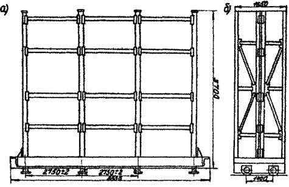
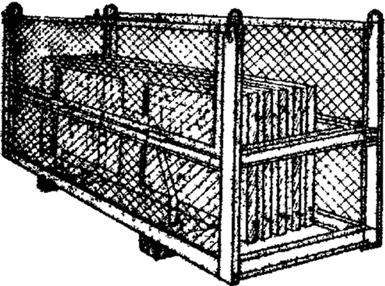
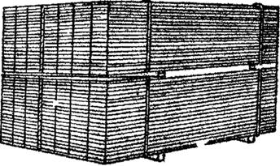

ВЕДОМСТВЕННЫЕ СТРОИТЕЛЬНЫЕ НОРМЫ
УКАЗАНИЯ
ПО ПРИЕМКЕ, СКЛАДИРОВАНИЮ,
ХРАНЕНИЮ И ТРАНСПОРТИРОВАНИЮ
ОСНОВНЫХ СТРОИТЕЛЬНЫХ МАТЕРИАЛОВ
И ИЗДЕЛИЙ НА БАЗАХ ТРЕСТОВ
КОМПЛЕКТАЦИИ И УПТК
СТРОИТЕЛЬНЫХ ОРГАНИЗАЦИЙ
ГЛАВМОССТРОЯ
ВСН 212-85
ОРДЕНА ЛЕНИНА ГЛАВМОССТРОЙ при МОСГОРИСПОЛКОМЕ
Разработаны, внесены и подготовлены к утверждению Отраслевой научно-исследовательской лабораторией Московского института народного хозяйства им. Г.В. Плеханова Министерства высшего и среднего специального образования РСФСР.
В разработке принимали участие: доц., канд. техн. наук Ю.Е. Бусалов, канд. экон. наук В.М. Цурлик, экономист Л.Н. Белоус.
Научное и методическое руководство осуществлял доцент, канд. техн. наук Ю.Е. Бусалов.
С введением в действие "Указаний по приемке, складированию, хранению и транспортированию основных строительных материалов и изделий на базах трестов комплектации и УПТК строительных организаций Главмосстроя" (ВСН 212-85) утрачивают силу ВСН 28-66.
|
Главмосстрой |
Ведомственные строительные нормы |
ВСН 212-85 |
|
Указания по приемке, складированию, хранению и транспортированию основных строительных материалов и изделий на базах трестов комплектации и УПТК строительных организаций Главмосстроя |
Взамен |
Настоящие "Указания" предназначены для работников товарных отделов и баз трестов, а также участков производственно-технологической комплектации строительных трестов и ДСК, осуществляющих приемку, учет, складирование и комплектование строительной продукции.
"Указания" включают "Общие положения о поставке, приемке и учету продукции производственно-технического назначения", утвержденные постановлением Совета Министров СССР от 10 февраля 1981г. № 161, обязательные для всех снабженческих организаций как союзного, так и отраслевого подчинения. Значительная часть "Указаний" посвящена условиям складирования, упаковке, маркировке и транспортирования строительной продукции номенклатуры Главмосстроя.
При написании "Указаний" использовались данные: инструкций, разработанных Союзглавснабами СССР; "Указателя стандартов за 1983 г."; "Стандартов на строительную продукцию", а также "Указаний по приемке, складированию и хранению основных строительных материалов, изделий и конструкций на приобъектных и базисных складах Главмосстроя" (ВСН 28-66), утвержденных Техническим управлением Главмосстроя в 1967 г.
В новых "Указаниях", предлагаемых взамен ВСН 28-66, большое внимание уделено использованию контейнеров для перевозки строительной продукции на строящиеся объекты.
|
Внесены |
Утверждены |
Срок введения в действие |
Тресты комплектации и снабжения Мосстройснаб-1, Мосотделпром, Моссанэлектропром, Мосмеханкомплект, Мосподземстройснаб, а также УПТК ДСК-1 производят на своих базах и предприятиях заготовку и комплектацию материалов, изделий, полуфабрикатов на дом, секцию, квартиру, комнату с затариванием комплекта в контейнеры и обеспечением доставки на строительные объекты в соответствии с графиком строительно-монтажных или отделочных работ.
В определенных разделах соответствующего руководства рекомендованы различные способы складирования, укладки изделий в контейнеры, схемы строповки. В обязательном приложении 2 к настоящим "Указаниям" представлен перечень контейнеров, разработанных трестом Мосоргстрой.
Основная цель настоящих "Указаний" по приемке, учету, хранению и транспортированию основных строительных материалов и изделий на базах трестов комплектации и УПТК строительных организаций состоит в широком внедрении следующих прогрессивных видов помощи практическим работникам трестов комплектации:
обеспечение надлежащего учета и хранения строительных материалов;
снижение потерь строительных материалов и изделий при погрузочно-разгрузочных работах;
представление помощи в виде консультаций и рекомендаций по контейнеризации комплектов строительных изделий полной заводской готовности;
оптимизация использования строительных материалов и изделий.
Последние два раздела "Указаний" посвящены правилам техники безопасности и пожарной безопасности при проведении погрузочно-разгрузочных работ и складских операций.
Предполагается, что настоящие "Указания" должны послужить основным материалом для оказания помощи в практической деятельности инженерно-технического персонала трестов комплектации и участков производственно-технологической комплектации ДСК и строительных организаций, а также бригадиров и мастеров при их повседневной работе на базах и складах трестов.
1.1.1. Порядок и сроки приемки строительных материалов, изделий и конструкций, а также санитарно-технического оборудования определяются: "Положением о поставках продукции производственно-технического назначения", утвержденным постановлением Совета Министров СССР от 10 февраля 1981 г. № 161; "Инструкцией о порядке приемки продукции производственно-технического назначения и товаров народного потребления по количеству", утвержденной постановлением Госарбитража при Совете Министров СССР от 15 июня 1965 г. № П-6 с дополнениями и изменениями, внесенными в постановление от 29 декабря 1973 г. № 81, от 14 ноября 1974 г. № 98 и от 23 июля 1975 г. № II5; "Инструкцией о приемке продукции производственно-технического назначения и товаров народного потребления по качеству", утвержденной постановлением Госарбитража при Совете Министров СССР от 26 апреля 1966 г. №» П-7 с дополнениями и изменениями, внесенными в постановление от 29 декабря 1973 г. № 81, от 24 ноября 1974 г. № 98, от 23 июля 1975 г. № 115; "Уставом железных дорог Союза ССР", утвержденным постановлением Совета Министров СССР от 6 апреля 1964 г. № 270; "Уставом автомобильного транспорта рсфср", утвержденным постановлением Совета Министров РСФСР от 8 января 1969 г. № 12; "Уставом внутреннего водного транспорта Союза ССР", утвержденным постановлением Совета Министров СССР от 15 октября 1965 г. № 1801; "Воздушным кодексом Союза ССР", утвержденным Указом Президиума Верховного Совета СССР от 26 декабря 1961 г.
1.1.2. Приемка должна производиться по транспортным и сопроводительным документам поставщика (счет-фактура, спецификации, накладные и др.) и должна заключаться в определении соответствия количества и качества поступившей продукции количеству и качеству, указанным в транспортных и сопроводительных документах, а также в договорах, ГОСТах и технических условиях.
1.1.3. Во время приемки продукции должны выполняться следующие операции:
а) определение количества и качества поступившей продукции;
б) приемка продукции на учет;
в) подготовка к укладке продукции на хранение.
г) укладка продукции на места хранения.
1.1.4. Приемка продукции должна производиться заведующим складом или лицом, его заменяющим, а также лицом, уполномоченным на это руководителем предприятия по поставкам продукции.
1.1.5. Заведующий складом или кладовщик должен заранее, до поступления продукции на склад, подготовиться к ее приемке:
а) определить место для ее укладки;
б) проинструктировать рабочих о порядке выполнения предстоящих разгрузочных работ с соблюдением правил техники безопасности.
1.1.6. Приемка материалов и изделий на складах должна производиться партиями, на основании наружного осмотра изделий и паспорта, в котором указаны необходимые данные, предусмотренные действующими стандартами и ТУ.
1.1.7. При приемке стройматериалов от транспортных организаций работники баз обязаны проверить:
а) наличие на транспортных средствах (вагоне, контейнере и т.п.) пломб;
б) исправность тары;
в) соответствие наименования груза и транспортной маркировки указанным в транспортном документе.
1.1.8. Согласно названным в п. 1.1.1. настоящих "Указаний" нормативно-техническим документам о порядке приемки продукции производственно-технического назначения и народного потребления по качеству и количеству предприятие-поставщик обязано обеспечить строгое соблюдение установленных государственными стандартами правил упаковки и затаривания строительной продукции, маркировки и опломбирования отдельных мест.
1.1.9. Во всех случаях, когда при приемке поставляемых строительных материалов и изделий от транспортных организаций устанавливаются факты повреждения или порчи продукции, несоответствия наименования или количества мест данным, указанным в транспортном документе, а также во всех иных случаях, когда это предусмотрено правилами, действующими на транспорте, грузополучатель обязан потребовать от транспортной организации составления коммерческого акта (отметки на товаротранспортной накладной) или составления акта - при доставке продукции автомобильным транспортом.
В случае отказа транспортной организации от составления коммерческого акта грузополучатель должен в соответствии с действующими на транспорте правилами обжаловать этот отказ и производить приемку продукции в порядке, предусмотренном "Инструкцией о порядке приемки продукции производственно-технического назначения и товаров народного потребления по количеству" от 15 июля 1965 г. № П-6 с соответствующими добавлениями.
1.1.10. Приемка продукции, поставляемой без тары и в открытой таре по количеству, а также приемка продукции, поставляемой в таре по массе (брутто) и количеству мест производится:
а) на складе получателя - при доставке продукции поставщиком;
б) на складе поставщика - при вывозе продукции грузополучателем.
1.1.11. При поставке предприятием-изготовителем строительной продукции в таре на склад получателя последний, кроме проверки массы (брутто) и количества мест, может потребовать вскрытия тары, проверки массы (нетто) и количества товарных единиц в каждом месте.
1.1.12. Приемка продукции, поступившей в исправленной таре по массе (нетто) и количеству товарных единиц в каждом месте, а также по качеству и комплектности, производится, как правило, на складе конечного получателя.
1.1.13. Если продукция поступила в поврежденной таре, то приемка ее по массе (нетто) и количеству товарных единиц в каждом тарном месте производится получателем там, где производится приемка продукции по массе (брутто) и количеству мест.
1.1.14. Приемка строительной продукции по количеству производится в следующие сроки:
1) продукции, поступившей без тары, в открытой или поврежденной таре, - в момент получения ее от поставщика или со склада транспортной организации либо в момент вскрытия опломбированных и разгрузки неопломбированных транспортных средств и контейнеров, но не позднее сроков, установленных для их разгрузки;
2) продукции, поступившей в исправной таре:
а) по массе (брутто) и количеству мест - в сроки, указанные в подпункте 1 настоящего пункта;
б) по массе (нетто) и количеству товарных единиц в каждом месте - одновременно со вскрытием тары, но не позднее 10 дней.
1.1.15. Приемка продукции по количеству должна определяться в тех же единицах измерения, которые указаны в сопроводительных документах (счет-фактура, спецификация, опись, упаковочный ярлык и др.).
1.1.16. Приемка строительной продукции по качеству к комплектности производится на складе грузополучателя в следующие сроки:
1) при иногородней поставке - не позднее 20 дней после выдачи продукции транспортной организацией или поступления ее на склад грузополучателя при доставке продукции поставщиком или при вывозе продукции грузополучателем;
2) при одногородней поставке - не позднее 10 дней после поступления продукции на склад грузополучателя.
1.1.17. Если в процессе приемки обнаруживается отсутствие некоторых документов, приемка строительных материалов и изделий в таких случаях не приостанавливается, в этом случае составляется акт о фактическом наличии продукции с указанием отсутствующих документов.
1.1.18. При невозможности определения массы продукции без тары определение массы (нетто) производится путем измерения массы (брутто) в момент получения продукции и массы тары в момент ее освобождения (укладкой в склады), о чем составляется акт, но не позднее 10 дней после освобождения тары.
1.1.19. Определение массы (нетто) путем вычитания массы тары из массы (брутто) лишь по данным, указанным в транспортных или сопроводительных документах, без фактической проверки массы тары и массы (брутто), недопустимо.
1.1.20. Проверка количества продукции по выборочным замерам с распространением результатов на всю партию допускается, если это предусмотрено нормативной документацией или оговорено в договоре на поставку. О выявленной недостаче составляется акт за подписями лиц, производивших приемку продукции.
1.1.21. Если при правильности массы (брутто) недостача продукции устанавливается при проверке массы (нетто) или количества товарных единиц в отдельных местах, то получатель обязан приостановить приемку остальных мест, сохранить и предъявить представителю, вызванному для участия в дальнейшей приемке, тару и упаковку вскрытых мест и продукцию, находящуюся внутри этих мест.
1.1.22. В случаях, когда при приемке продукции выявлено несоответствие массы (брутто) отдельных мест массе, указанной в транспортных или сопроводительных документах либо на трафарете, получатель не должен производить вскрытия тары и упаковки.
1.1.23. В качестве представителей для участия в приемке строительной продукции должны выделяться лица, компетентные в вопросах учета, хранения, приемки и отпуска материальных ценностей. Однако при этом материально-ответственные и подчиненные им лица, а также лица, связанные по роду своей основной деятельности с учетом, хранением, приемкой и отпуском материальных ценностей, в качестве представителей общественности предприятия-получателя выделяться не должны.
1.1.24. Лица, осуществляющие приемку строительной продукции по количеству, вправе удостоверять своей подписью только те факты, которые были установлены с их участием. Запись в акте данных, не установленных непосредственно участниками приемки, запрещается.
1.1.25. За подписание акта о приемке продукции по количеству, содержащего не соответствующие в действительности данные, лица, принимавшие участие в приемке продукции по количеству, несут установленную законом ответственность.
1.1.26. Представители других предприятий и организаций, выделенные для участия в приемке строительной продукции, не вправе получать у предприятия-получателя вознаграждение за участие в приемке поставляемых строительных материалов и изделий.
1.1.27. Если при приемке продукции одновременно будут выявлены не только недостачи, но и излишки ее против транспортных и сопроводительных документов отправителя, то в акте должны быть указаны точные данные об этих излишках.
Претензия в связи с недостачей продукции должна быть направлена отправителю (поставщику) не позднее чем в 10-дневный срок после составления акта о недостаче. В свою очередь отправитель (поставщик) обязан не позднее 10-дневного срока после поступления претензии мотивированным письмом сообщить результаты ее рассмотрения получателю.
1.1.28. Акт о скрытых недостатках продукции должен быть составлен в течение 5 дней по обнаружении дефектов, однако не позднее четырех месяцев со дня поступления продукции на склад получателя.
Если для участия в составлении акта вызывается представитель изготовителя (отправителя), то к установленному 5-дневному сроку добавляется время, необходимое для его приезда.
1.1.29. Скрытыми недостатками признаются такие дефекты, которые не могли быть обнаружены при обычной для данного вида продукции проверке и выявлены в процессе обработки, подготовки к монтажу, в процессе монтажа, испытания, использования и хранения продукции.
1.1.30. Приемка считается произведенной своевременно, если проверка качества и комплектности продукции, производимая одновременно с приемкой, окончена в установленные сроки. При этом тара, упаковка и маркировка должны соответствовать требованиям ГОСТов, технических условий, особых условий, других обязательных для сторон правил, а также соответствующим чертежам и образцам.
1.1.31. Приемку продукции должны производить уполномоченные на это руководителем организации-получателя (или его заместителем) компетентные лица. Последние несут ответственность за строгое соблюдение правил приемки продукции, принятых в системе данного министерства (ведомства).
1.1.32. Приемка продукции по качеству и комплектности производится в точном соответствии со стандартами, техническими условиями, основными и особыми условиями поставки, а также по сопроводительным документам, удостоверяющим качество и комплектность поставляемой продукции (технический паспорт, сертификат, удостоверение о качестве, счет-фактура, спецификация и т.п.).
Отсутствие указанных сопроводительных документов или некоторых из них не может служить причиной приостановки приемки продукции. В этом случае составляется акт о фактическом качестве и комплектности поступившей продукции, в котором указывается, какие именно документы отсутствуют.
1.1.33. При обнаружении несоответствия качества, комплектности, маркировки поступившей продукции, тары или упаковки требованиям ГОСТов, технических условий и сопроводительных документов, удостоверяющих качество продукции, получатель обязан обеспечить хранение этой продукции в условиях, предотвращающих ухудшение ее потребительских качеств, в частности вследствие пересортировки.
1.1.34. Получатель также обязан вызвать для участия в продолжении приемки продукции и составлении двустороннего акта представителя иногороднего изготовителя (отправителя), если это предусмотрено в условиях поставки или договора.
При одногородней поставке вызов представителя организации-изготовителя и его явка для участия в проверке качества и комплектности продукции и составления акта являются обязательными.
1.1.35. Порядок участия в приемке по качеству и комплектности лиц других привлеченных организаций и представителей общественности аналогичен изложенному выше порядку, установленному для приемки продукции по количеству.
1.1.36. Для укрепления договорной дисциплины и применения соответствующих финансовых санкций по отношению к поставщикам, нарушающим взятые обязательства и требования Государственных стандартов и технических условий, должна быть четко налажена претензионная работа.
1.1.37. За основы претензионной работы должны быть приняты указанные выше инструкции Государственного арбитража СССР, а также "Положение о поставках продукции производственно-технического назначения", утвержденное постановлением Совета Министров СССР от 10 февраля 1981 г. № 161, и предусмотренная в указанном "Положении" имущественная ответственность поставщиков за просрочку поставки или за недопоставку продукции в установленный договором срок, за конструктивные недостатки в продукции, за продукцию более низкого качества, чем указано в документе, удостоверяющем качество продукции, за поставку некомплектной продукции, отгрузку продукции без тары или упаковки, либо в неподходящей таре некондиционной (упаковке), поставку немаркированной тары и другие нарушения установленных требований к поставке продукции производственно-технического назначения.
1.1.38. В соответствии с "Положением о централизованных поставках материалов и изделий в системе Главмосстроя" поставка и перевозка материалов, изделий и конструкций для строящихся объектов в г. Москве осуществляется в централизованном порядке автотранспортом, принадлежащем Главмосавтотрансу при Мосгорисполкоме.
1.1.39. Согласно установленному в указанном "Положении" порядку отпуск со складских баз материалов производится на основании товарно-транспортных накладных шоферу автотранспортной организации, осуществляющей перевозки, а в тех случаях, когда экспедирование шоферов невозможно, отпуск груза производится экспедитору поставщика.
1.1.40. Шофер (экспедитор) проверяет количество груза, принимаемого к перевозке, путем взвешивания, обмера, счета мест. Без проверки принимается к перевозке только груз, который транспортируется в специальных кузовах или контейнерах, опломбированных поставщиком. Шофер следит за правильностью укладки строительной продукции в автомобиль, за его надежным креплением, а также за сохранностью бирок.
1.1.41. При доставке груза на объект шофер сдает его в том же порядке, в котором был принят груз от поставщика, материально-ответственному лицу получателя, которое в подтверждение получения груза расписывается на экземплярах накладных и ставит штамп.
1.1.42. Погрузка груза осуществляется поставщиком, разгрузка - получателем.
1.1.43. Груз, доставленный в порядке централизованных перевозок, должен быть принят получателем.
В случае отказа получателя от принятия груза составляется акт за подписями водителя автомашины (экспедитора) и представителя получателя, а при отказе последнего от подписи водитель автомашины (экспедитор) составляет односторонний акт с указанием фамилии и должности лица, отказавшегося от подписи. В этом случае груз возвращается поставщику, который обязан немедленно его принять.
1.2.1. Хранение строительных материалов, конструкций, изделий и сантехнического оборудования на складах УМТС Главмосстроя должно проводиться в соответствии с требованиями стандартов и технических условий.
Правильная организация хранения продукции должна обеспечивать ее качественную и количественную сохранность:
1.2.2. При хранении продукции необходимо обеспечивать:
а) рациональное размещение продукции;
б) сохранность потребительских качеств;
в) простоту учета и инвентаризации;
г) постоянное обновление запасов;
д) безопасные методы работы.
1.2.3. По способу хранения вся строительная продукция делится на следующие четыре группы:
I - продукция, не требующая защиты от атмосферных осадков, подлежащая хранению на открытых площадках;
II - продукция, требующая защиты от прямого попадания атмосферных осадков, но не чувствительная к температурным колебаниям, подлежащая хранению под навесом;
III - продукция, требующая защиты от атмосферных осадков и сырости, но малочувствительная к температурным колебаниям, подлежащая хранению в закрытых неотапливаемых складах;
IV - продукция, чувствительная к температурным колебаниям, подлежащая хранению в закрытых утепленных складах.
К первой группе относится строительная продукция, хранящаяся на открытых площадках (минеральные заполнители, крупносортный металл, лесоматериалы, кирпич, сборные бетонные и железобетонные изделия, трубы асбестоцементные и др.).
Ко второй группе относится продукция, хранящаяся под навесом (столярные изделия, сухая штукатурка, асбестоцементные листы, битум в таре, кабель в барабанах, радиаторы, листовой прокат и др.)
К третьей группе относится строительная продукция, хранящаяся в закрытых неотапливаемых помещениях (известь, цемент, гипс, мел, стекло, войлок, обои, краски, олифа, крепежные материалы, огнеупорные изделия, плитки керамические, проволока, оконные приборы и др.).
К четвертой группе относится продукция, хранящаяся в отапливаемых помещениях (паркет, электротехнические материалы, линолеум, измерительные приборы и инструменты, лабораторное оборудование и др.).
Особую группу составляет продукция, подлежащая складированию в специализированных хранилищах (карбид кальция, горюче-смазочные материалы и др.).
В рекомендуемом приложении I к настоящим "Указаниям" представлены основные подъемно-транспортные механизмы, используемые на складах различных типов.
1.2.4. Необходимо помнить, что всякого рода потери, образующиеся вследствие порчи строительных материалов и изделий при небрежном выполнении транспортно-складских операций, не относятся к потерям естественной убыли.
1.2.5. Применяемая в настоящее время в Главмосстрое прогрессивная система обеспечения строительных объектов материалами и изделиями повышенной заводской готовности за счет их производственно-технологической комплектации, доставки на объект в контейнерах и пакетах по четкому транспортно-монтажному графику резко снижает сроки хранения материалов на строительных площадках.
В обязательном приложении 2 к настоящим "Указаниям" представлен перечень контейнеров для доставки строительных материалов и изделий.
1.2.6. Для удобства разгрузки материалов в темное время и обеспечения нормальных условий охраны материальных ценностей необходимо установить прожекторы и фонари достаточной мощности на территории складов и подъездных путей к ним в соответствии с нормами освещенности по СНиП IIА9-71 с учетом постановления Госстроя СССР № 227 от 27 ноября 1974 г., приведенными в обязательном приложении 3 к настоящим "Указаниям".
1.2.7. Погрузочно-разгрузочные работы следует выполнять под руководством специально выделенных лиц, аттестованных по ст. 300 "Правил" Гостехнадзора, обязанных следить за соблюдением безопасных способов погрузки, разгрузки и перевозки материалов и конструкций в соответствии с ГОСТ 12.3.009-76.
На каждом складе должны быть вывешены на видном месте краткие памятки и плакаты с изложением основных правил складирования и техники безопасности, а также предупредительные надписи.
1.2.8. Работники материально-технического снабжения и складского хозяйства обязаны знать действующие стандарты и технические условия на материалы и изделия, в необходимых случаях привлекать работников строительных лабораторий для определения соответствия поступивших материалов, конструкций и деталей действующим стандартам и техническим условиям.
1.2.9. Для механизированной переработки и складирования грузов на складах строительных материалов применяют автоэлектропогрузчики, электроштабелеры, краны-штабелеры и др.
1.2.10. Материалы одного вида и сорта, поступающие на склад в количестве, достаточном для образования отдельного штабеля и не подвергающиеся порче от штабельного хранения (поломке, слеживанию), должны укладываться в штабеля высотой до 2 м, а при недостаточной прочности тары - высотой 1-1,5 м.
1.2.11. Для материалов и изделий, поступающих в количествах, недостаточных для их штабелирования, или портящихся при штабельном хранении, рекомендуется стеллажный способ складирования.
1.2.12. Стеллажное оборудование складов должно состоять из полочных и клеточных стеллажей, вертикальных и пирамидальных стоек консольных стеллажей, специальных устройств для хранения баллонов со сжатым газом и закромов для хранения мелких изделий.
На рис.1-3 представлены некоторые типы стеллажей.
1.2.13. Материалы, упакованные в мешки, рекомендуется укладывать в штабеля также обратной кладкой; при этом каждый мешок в штабеле кладется плашмя, сшивкой внутрь штабеля, для предупреждения потерь материалов в случае развязывания мешка. Складирование производят на плоские деревянные поддоны.
1.2.14. В целях быстрого отыскания материалов и изделий, хранящихся в складах, следует ввести нумерацию мест хранения, прикрепив к каждому штабелю или гнезду стеллажа соответствующий ярлык (бирку) и указав на нем наименование, размер, сорт и количество хранящихся материалов или изделий.
1.2.15. Вновь поступающие строительные изделия размещают отдельно от бывших в употреблении.
1.2.16. Материалы однородные, но поступившие на склад в разное время, следует размещать так, чтобы был обеспечен отпуск этих материалов в порядке поступления их на склад.
1.2.17. Складирование продукции в штабеля согласно ГОСТ 12.3.010-76 допускается в тех случаях, когда при укладке отдельных тарных мест друг на друга нижние ряды не получают деформации или разрушения от давления вышеуложенных рядов; когда геометрическая форма мест позволяет укладывать прочный штабель; когда изделия громоздкие и их невозможно уложить в стеллажи, а также когда изделия при отпуске потребителям не требуют индивидуального подбора, который может вызвать разборку штабеля для извлечения требуемого упаковочного места или изделия.
При штабелировании строительных материалов и изделий погрузчиком или краном-штабелером тару следует устанавливать на вилы в один ярус. Допускается устанавливать тару в два яруса только при наличии на грузозахватном устройстве погрузчика ограждений, обеспечивающих безопасность водителя.
Рис. 1. Стеллаж каркасный:
а - вид спереди; б - вид сбоку

Рис. 2. Стеллаж передвижной:
а - вид спереди; б - вид сбоку
Рис 3. Стеллаж к
автоматическому крану-штабелеру:
а -
вид спереди; б - вид сбоку
Расстояние между рядами штабелей должно быть определено с учетом возможности установки в штабель, снятия тары со штабеля грузозахватными устройствами применяемых средств механизации и обеспечения необходимых противопожарных проходов и проездов.
Высота штабеля должна быть определена отношением максимальной высоты штабеля к меньшей стороне основания тары: для неразборной тары - не более 6; для складной тары - не более 4,5.
1.2.18. Для обеспечения устойчивости формируемого штабеля и возможности подхвата штабелируемой строительной продукции грузозахватными приспособлениями под каждый ярус укладывают прокладки из досок или деревянных брусьев. В штабелях может храниться продукция, затаренная в обрешетки, ящики или спакетированная в сетчатые и ящичные поддоны.
1.2.19. Для обеспечения устойчивости штабелей могут быть применены различные способы укладки: прямая, перекрестная и обратная (рис.4). Обратная укладка заключается в том, что клетка выкладывается из определенного числа предметов, каждый ряд которых находится в обратном положении по отношению к нижнему. При таком способе каждый ряд можно укладывать тройками, четверками, пятерками и восьмерками штабелируемых строительных изделий (рис.5).
1.2.20. Штабель не должен иметь пустот, чтобы в случае хищения сразу можно было обнаружить недостачу.
1.2.21. Беспорядочное хранение материалов, изделий и оборудования на открытых площадках и складах недопустимо.
1.2.22. По окончании работы на складе дежурный в установленном порядке принимает на ответственное хранение как закрытые складские помещения, так и материалы, хранящиеся на открытых площадках, а утром, в начале работы, заведующий складом вновь принимает от охраны помещение склада и материалы открытого хранения.
1.2.23. Применение в строительстве материалов, изделий и конструкций, не имеющих сопроводительного документа (паспорта, сертификата, формуляра), подтверждающего соответствие их требованиям государственных стандартов или технических условий, а также товарного знака (заводской марки) на изделиях, запрещается.
1.2.24. Склады должны быть оснащены всеми необходимыми приспособлениями и средствами для перемещения грузов: роликовыми ломами, роликовыми трапами, скатами, слегами, тележками и т.д.
Рис. 4. Укладка продукции в штабеля:
а - прямая; б - перекрестная; в - обратная; г - прямая с прокладками
Рис. 5. Обратная
укладка продукции:
а - тройками; б -
четверками; в - пятерками; г - восьмерками
1.2.25. Механизированный способ производства погрузочно-разгрузочных работ является обязательным при весе груза более 60 кг, а также при подъеме на высоту более 3 м.
1.2.26. Имеющиеся на складе грузозахватные устройства и приспособления для разгрузки, складирования и хранения конструкций, деталей, материалов должны постоянно содержаться в исправном состоянии и храниться в установленных для них местах.
1.2.27. Изготовление съемных грузозахватных приспособлений и тары должно быть централизовано и производиться по нормалям.
В случаях применения сварки в документах на изготовление этих изделий должно содержаться указание по контролю качества сварки.
Съемные грузозахватные приспособления должны быть снабжены клеймом или прочно прикрепленной металлической биркой с указанием номера, грузоподъемности и даты испытания. Грузоподъемность стропов общего назначения указывается при угле между ветвями 90 градусов.
1.2.28. На базах УМТС и УПТК должны быть разработаны способы правильной строповки грузов, не имеющих специальных устройств (петли, цапфы, рымы), а стропальщики должны быть обучены этим способам.
В необходимых случаях графические схемы строповки должны быть выданы на руки стропальщикам и крановщикам или вывешены в местах производства работ.
Должны также быть разработаны схемы строповки деталей, поднимаемых краном. Подъем груза, на который схема строповки не разработана, должен производиться под руководством лица, ответственного за безопасное проведение работ по перемещению грузов краном.
1.3.1. Для контроля за оприходованием и поступлением товарно-материальных ценностей товарным отделом треста УМТС ведется "Журнал учета поступающих грузов". "Журнал" пронумеровывают, прошнуровывают и концы шнура скрепляют печатью.
1.3.2. На каждое наименование, тип, сорт, размер поступившей продукции заполняют карточку складского учета товарно-материальных ценностей. Запись в карточках производит заведующий складом на основании первичных приходорасходных документов.
1.3.3. На вновь поступившую продукцию заведующий складом заполняет товарный ярлык, причем на каждый шифр продукции. Заполненный всеми необходимыми данными ярлык прикрепляют на каждую ячейку или к каждому месту хранения продукции.
1.3.4. Отпуск со склада предприятий-поставщиков строительных материалов и изделий организациям-потребителям, а также передача строительной продукции другим подразделениям предприятия (складам, участкам и т.п.) в тех случаях, когда материалы и изделия перевозят автомобильным транспортом, производится по товаротранспортным накладным.
Товаротранспортная накладная (форма № 1) - документ, объединяющий в себе приказ на отпуск товарно-материальных ценностей, приемо-сдаточную накладную, транспортную накладную (при перевозках автомобильным транспортом), пропуск на вывоз товарно-материальных ценностей с территории предприятия, счет-фактуру и извещение товарному отделу об отпуске ценностей для оперативного учета.
Заведующий складом, получив приказ на отпуск, производит отборку товаров в строгом соответствии с ассортиментом и количеством, предназначенным к отпуску, после чего передает приказ на отпуск оператору фактурной машины для выписывания товаротранспортной накладной.
Первый экземпляр приказа на отпуск после отбора продукции передается в бухгалтерию вместе с товаротранспортной накладной, второй - в товарный отдел для оперативного учета.
1.3.5. На отпуск товарно-материальных ценностей, перевозимых автомобильным транспортом, товаротранспортная накладная (форма № I-а) выписывается в шести экземплярах, аналогично форме № I.
1.3.6. При внутренней передаче товаров со склада на склад и при отпуске на собственные нужды предприятия в тех случаях, когда товары не перевозятся автомобильным транспортом, для документального оформления и учета их движения применяется накладная.
1.3.7. Отпуск товарно-материальных ценностей со складов по каким-либо другим документам запрещается.
1.3.8. Для регистрации сдаваемых в бухгалтерию приходных и расходных документов заведующий складом заполняет реестр. Последний составляется в двух экземплярах, причем приходные и расходные документы регистрируются отдельно. При этом регистрация должна производиться по дням, а в пределах дня - по операциям.
Один экземпляр реестра с приложенными к нему первичными документами (приходными ордерами, актами приемки, счетами-фактурами, транспортными документами и т.п.) передается в бухгалтерию под расписку на втором экземпляре реестра, который остается у материально-ответственного лица.
В реестре указываются номера сдаваемых первичных документов и их общее количество.
1.3.9. Основанием для комплектации (отбора) товарно-материальных ценностей, подлежащих отпуску и для выписки товаротранспортной накладной является приказ на отпуск.
Приказ на отпуск выписывается товарным отделом в двух экземплярах: отдельно на каждое материально ответственное лицо, на каждого потребителя и каждую ездку автомобиля.
В приложении 3 к настоящим "Указаниям" приведены формы документов, утвержденные техническим управлением Главмосстроя.
1.3.10. При транспортировании строительных материалов следует руководствоваться ГОСТ 21921-76 "Транспортирование грузов пакетами. Общие требования".
1.3.11. Требования к упаковке, транспортированию и хранению отдельных видов строительных материалов приведены в соответствующих пунктах настоящих "Указаний".
1.3.12. В соответствии с принятой в настоящее время в Главмосстрое новой системой материально-технического снабжения строящихся объектов - системой производственно-технологической комплектации, - доставку строительных изделий, материалов и сантехнического оборудования производят тресты комплектации, которые комплектуют объекты материалами и изделиями повышенной заводской готовности, доставляя их централизованно на поддонах в пакетах и контейнерах в требуемых количествах, надлежащего качества, в сроки, предусмотренные транспортно-монтажным графиком. Кроме того, в современном строительстве широко практикуется завоз основных крупногабаритных конструкций на строительные объекты строго по транспортно-монтажному графику, что, в свою очередь, обеспечивает условия для их монтажа "с колес". При такой прогрессивной форме снабжения строительных объектов до минимума сокращаются сроки хранения строительных материалов на приобъектных складских площадках. В то же время нынешний уровень поставки производственно-технологической комплектации вынуждает несколько удлинять сроки хранения изделий на базисных складах (время подбора комплекта) и увеличивать нормы запасов строительных изделий.
1.3.13. Контейнеры должны быть загружены не ниже установленных технических норм загрузки. При использовании контейнера под перевозку строительной продукции, для которой техническая норма загрузки не установлена, или под перевозку продукции, имеющей различные технические нормы загрузки контейнера, загрузка должна производиться до полной его вместимости, но не выше допустимой грузоподъемности.
1.3.14. В соответствии с "Особыми условиями поставки строительных материалов и санитарно-технического оборудования", утвержденными Государственным арбитражем при Совете Министров СССР, в контейнерах производится отгрузка следующей продукции: котлов отопительных малометражных, колонок водогрейных - не менее 7 шт. в одном контейнере, раковин стальных - в количестве 150, чугунных - 50 шт., моек - не менее 25 шт. в одном контейнере, плиток метлахских - 100 м2 , облицованных - 200 м2 , линолеума - 500-600 м2 , стекла узорчатого - 200 м2 (без тары); полированного и армированного стекла - 200-250 м2 , скобяных изделий - не менее чем на 1000 руб., ванн чугунных эмалированных - 8 шт., умывальников - 24 шт., бачков фаянсовых - 80-100 шт., чаш "Генуя" - 85 шт.
2.1.1. Материалы и изделия из природного камня в зависимости от способа их изготовления подразделяются на: пиленые из массива (крупные стеновые блоки и камни, блоки-полуфабрикаты), пиленые из блоков-полуфабрикатов (ступени, подоконные доски, плиты облицовочные), колотые и тесаные (плиты, камни, брусчатки), рваные (бутовый камень), дробленые (щебень) и молотые (минеральные порошки).
2.1.2. Бутовый камень - куски известняков, песчаников, базальта и др. пород размером от 150 до 500 мм.
В каждой партии бутового камня, предназначенного для укладки фундаментов, подпорных стенок и т.п., должно быть до 70 % крупных камней весом от 15 до 40 кг; остальная часть партии не должна содержать камней весом менее 5 кг.
2.1.3. Бутовый камень поступает навалом и хранится на открытой площадке в прямоугольных штабелях объемом до 200 м3 и высотой 1 м. Стенки штабелей следует выкладывать из более крупных камней вперевязку, укладывая их постелистой стороной вниз. Мелкие камни засыпают внутрь штабеля.
2.1.4. Вдоль фронта разгрузки - во избежание расползания штабелей и для предохранения подъездных путей от загромождения камнями - рекомендуется устраивать подпорную стенку высотой до 1,5 м.
2.1.5. Из распиливаемых блоков природного камня изготовляются облицовочные плиты четырех групп: I - граниты; II - мраморы (белые, серые, цветные); III - известняки (плотные, пористые), IV - туфы.
2.1.6. Транспортировку облицовочных плит и бортового камня следует производить в прочной таре, приспособленной для механизированной погрузки и разгрузки.
2.1.7. Перевозка облицовочных плит навалом и разгрузка их сбрасыванием недопустима.
2.1.8. Плиты облицовочные пиленые из природного камня должны храниться в складах рассортированными по месторождениям и фактурам, установленными на деревянные прокладки в вертикальном положении, лицевыми поверхностями друг к другу, не более чем в два ряда по высоте.
2.1.9. Бортовой камень и ступени следует укладывать правильными рядами в штабеля на деревянные прокладки высотой не более 1 м.
2.1.10. Плиты II, III, IV групп следует хранить в закрытых складах, предохраняя их от намокания снизу.
2.2.1. Плитку керамическую глазурованную по ГОСТ 6141-76 изготовляют из глин с добавками или без них. Плитка данного типа предназначена для облицовки внутренних поверхностей стен зданий.
2.2.2. Плитки изготовляют квадратной, прямоугольной и фасонной формы.
2.2.3. При затаривании плитки плотно укладываются одна к другой в полиэтиленовую пленку, деревянные решетчатые или картонные ящики. Между плитками с рисунками должна быть проложена бумага.
2.2.4. Керамические плитки всех видов следует хранить в заводской таре (ящиках, пачках) в закрытых помещениях. Их укладывают в штабеля высотой до 1 м с деревянными прокладками между рядами раздельно по типам, сортам, размерам, цветам, а при необходимости - и по оттенкам.
2.2.5. Система производственно-технологической комплектации предусматривает поставку керамических плиток в специальных сетчатых контейнерах, вмещающих по 100 пачек метлахских плиток - для настилки полов (20 м2) или по 15 ящиков плиток для облицовки стен (30 м2).
2.3.1. Керамические плитки для полов (метлахские) по ГОСТ 6787-80 изготавливают из глиняной массы с окрашивающими и другими добавками или без них с последующим обжигом.
2.3.2. Плитки обычно упаковывают в решетчатые деревянные ящики. Допускается упаковка плиток пачками в бумагу и перевязка проволокой диаметром 0,5-1,0 мм или шпагатом. Упаковка плиток должна обеспечивать полную сохранность их при погрузке и выгрузке.
2.3.3. Пачку с одного торца оставляют частично открытой для определения цвета плиток или же одну плитку укладывают лицевой поверхностью наружу, после чего всю пачку обвязывают шпагатом.
2.3.4. Допускается упаковка в бумагу всей пачки плиток с указанием цвета на этикетке.
2.3.5. Масса пачки не должна превышать 8 кг, объемная масса - 1,9 г/см3.
2.3.6. Керамические плитки для мозаичных полов по ГОСТ 6787-80, изготовленные из глиняной массы с окрашенными примесями или без них, обожженные и наклеенные на бумажную основу, применяют в виде ковров.
2.3.7. Доставка керамических плиток всех видов на объекты строительства должна производиться в специальных решетчатых контейнерах № 14 весом 50 кг, разработанных трестом Мосоргстрой. Грузоподъемность контейнера: для метлахских плиток - 100 пачек, или 20 м2, для глазурованных плиток - 15 ящиков, или 30 м2. На рис.6 показан контейнер для транспортирования керамических плиток.
2.4.1. Керамические канализационные трубы выпускаются внутренним диаметром от 150 до 600 мм и длиной 800, 1000 и 1200 мм.
2.4.2. При перевозке керамические трубы следует укладывать горизонтальными рядами с деревянными прокладками между ними, торцами по направлению движения, и надлежащим образом укреплять в целях предотвращения смещения труб и ударов одна о другую или о стенки транспортного средства.
При транспортировании труб автомобильным транспортом трубы устанавливают вертикально и тщательно закрепляют.
2.4.3. Керамические трубы должны быть прямолинейными с гладкой внутренней поверхностью и не должны иметь отколов и трещин. С наружной и внутренней сторон они должны быть равномерно покрыты слоем химической глазури. При простукивании трубы должны издавать чистый недребезжащий звук.
Не допускаются к приемке плохо обожженные трубы ("недожог").
2.4.4. Трубы керамические всех видов при погрузочно-разгрузочных работах бросать не разрешается.
Хранить трубы следует в штабелях под навесом или на открытых незатопляемых водой площадках, раздельно по размерам и сортам. Под нижний ряд труб с двух сторон укладывают деревянные брусья, равные по высоте выступающей части раструба. В штабель трубы укладывают горизонтальными рядами с деревянными прокладками между ними. В каждом ряду трубы кладут попеременно, раструбами в противоположные стороны. Высота штабеля - до 1,5 м. На рис.7 показана схема складирования керамических труб.
3.1.1. Оконное стекло по ГОСТ 111-78 предназначается для заполнения световых проемов зданий и сооружений различного назначения.
3.1.2. В зависимости от наличия пороков стекло подразделяется на стекло высшей категории, первого и второго сортов.
3.1.3. Листы стекла должны быть упакованы в специальные контейнеры, дощатые многооборотные ящики по ГОСТ 12913-67 или другой вид тары по действующим техническим условиям.
3.1.4. Торцы листов стекла должны быть выравнены. Листы стекла устанавливают так, чтобы исключалась возможность их смещения.
Рис. 6. Решетчатый контейнер для
перевозки и хранения керамической плитки:
а -
передняя стенка; б - боковая стенка; в - общий вид
Рис. 7. Укладка
керамических труб в штабеля:
а - прямая
чересполосная торцами заподлицо; б - прямая чересполосная с щадящим зависанием
горловин раструбов; в - перекрестная; г - совмещенная
Между листами стекла в середине контейнера должны быть установлены предохранительные перегородки.
3.1.5. Пространство между листами стекла и стенками ящика должно быть заполнено древесной стружкой или другим уплотняющим материалом (гофрированным картоном, древесно-волокнистой плитой и др.)
3.1.6. Контейнеры или ящики с листами стекла транспортируют любым видом транспорта.
3.1.7. При хранении листы стекла должны быть установлены на пирамиды или стеллажи на резиновые, войлочные или деревянные подкладки, в наклонном положении, с углом наклона к вертикали 10-15°. Если оконное листовое стекло доставлено на место складирования упакованным в ящики, то последние также должны быть установлены в наклонном положении.
3.1.8. Ящики с листами стекла и распакованные листы должны храниться в сухих закрытых помещениях. На рис.8 показаны некоторые типы ящиков для перевозки оконного стекла.
3.1.9. В каждый ящик упаковывают стекло одного вида, размера и сорта и вкладывают ярлык с указанием номера упаковщика и даты упаковки, а на боковых стенках ящика должны быть нанесены несмываемой краской надписи: "Осторожно - стекло", "Не кантовать!", "Плашмя не класть".
3.1.10. При транспортировании ящики со стеклом следует устанавливать торцом по направлению движения транспорта; при этом ящики должны быть заклинены (расшиты) с тем, чтобы была исключена возможность передвижения и качания ящиков в процессе транспортирования.
3.1.11. По соглашению допускается транспортирование и хранение оконного стекла в принадлежащих стекольным заводам специальных контейнерах, обеспечивающих сохранность стекла, с доставкой его заводом непосредственно на склад потребителя без перегрузок.
3.1.12. При погрузочно-разгрузочных работах, транспортировании и хранении не допускается кантовать ящики со стеклом, а также устанавливать их в наклонном положении или плашмя; кроме того, должны приниматься меры, обеспечивающие сохранность стекла от боя и защиту его от атмосферных осадков и увлажнения.
3.1.13. Оконное листовое стекло, упакованное в ящики, следует хранить независимо от времени года в сухих неотапливаемых складских помещениях.
Рис. 8. Типы
дощатых ящиков для перевозки оконного стекла:
а -
ящик для стекла массой до 600 кг; б - ящик с двумя внутренними перегородками
для упаковки трех стопок стекла площадью до 0,2 м2; в - ящик с одной
внутренней перегородкой для упаковки двух стопок площадью до 0,3 м2;
г - ящик для упаковки одной стопки стекла площадью 0,3 м2, д -
контейнер для перевозки листового стекла площадью до 1,5 м2
(грузоподъемностью 2400 кг)
3.1.14. Ящики со стеклом укладывают в штабеля на ребро, крышками кверху, в один ряд по высоте.
3.1.15. Применение влажной соломы или стружки (при упаковке стекла) и длительное хранение стекла в мокрой таре, а также хранение стекла на открытой площадке не допускается, так как это приводит к ухудшению качества стекла, помутнению и слипанию соседних листов под влиянием влаги и растрескиванию их в зимний период.
3.1.16. Доставка на объекты строительства оконного листового стекла должна производиться из пунктов комплектации треста Мосотделпром Главмосстроя автомашиной с прицепом, оснащенным разрезной кассетой. При этом стекло поставляется в комплекте с резиновыми прокладками и стекольной замазкой, в специальных контейнерах в виде поддона с обхватывающим устройством.
3.2.1. Листовое неполированное стекло по ГОСТ 7380-77 и полированное по ГОСТ 13454-77 предназначается для заполнения световых проемов, ограждающих конструкций зданий и сооружений различного назначения.
3.2.2. Листы витринного стекла должны быть упакованы в дощатые (многооборотные) ящики по ГОСТ 16137-70.
3.2.3. Пространство между листами стекла и стенками ящика должно быть заполнено древесной стружкой или другим уплотняющим материалом.
3.2.4. Ящики с листами стекла и распакованные листы должны храниться в сухих закрытых помещениях.
3.2.5. При хранении листы стекла должны быть уложены в стопы на пирамиды на резиновые, войлочные или деревянные подкладки в наклонном положении, с углом наклона к вертикали 10-15°.
3.2.6. Каждый лист полированного стекла при упаковке должен быть переложен по всей его поверхности бумагой по ГОСТ 8273-75 или другой упаковочной бумагой без царапающих включений.
3.3.1. Стекло армированное листовое выпускается по ГОСТ 7481-78; листовое стекло с узором типа "Мороз" - по ОСТ 21-24-76; листовое стекло с узором типа "Метелица" - по ТУ-21-23-70-75.
3.3.2. Объемная масса квадратного метра армированного листа стекла 12 кг/м2, а листа с узором "Мороз" или "Метелица" - 15 кг/м2.
3.3.3. Листовое армированное и узорчатое стекло упаковывают в плотные дощатые ящики по ГОСТ 16137-70 или специальные контейнеры.
3.3.4. Просветы между стеклом и стенками ящика должны быть заполнены стружкой.
Погрузка и выгрузка спецконтейнеров со стеклом оконным, узорчатым, армированным, полированным, витринным должна производиться в соответствии с "Инструкцией по упаковке и транспортировке листового стекла в специальных контейнерах", утвержденной Министерством промышленности строительных материалов СССР.
Спецконтейнеры подлежат обязательному возврату предприятию-изготовителю, которому они принадлежат, в соответствии с сертификатами, выписанными этими предприятиями или снабженческо-сбытовыми организациями. Номера сертификатов на спецконтейнеры должны быть указаны в счетах на продукцию, отгруженную или сданную в спецконтейнерах.
Сертификат на спецконтейнер выписывают в двух экземплярах, один из которых предприятие-изготовитель оставляет у себя, а второй - отсылает грузополучателю вместе со счетом на строительную продукцию.
Грузополучатель обязан возвратить спецконтейнер в 30-дневный срок со дня получения продукции.
Если снабженческо-сбытовые организации поставляют стекло партиями менее вагонной нормы, грузополучатели обязаны в 20-дневный срок со дня получения этой продукции возвратить порожние спецконтейнеры снабженческо-сбытовым организациям для отгрузки их предприятиям-изготовителям.
Днем возврата спецконтейнера считается день сдачи его транспортной организации, определяемый датой штемпеля на транспортном документе.
Согласно "Положению о поставках продукции производственно-технического назначения", тара и упаковка должны соответствовать требованиям ГОСТов, технических условий или договора и обеспечивать качественную и количественную сохранность поставляемых строительных материалов и изделий при перевозке и хранении.
Тара подлежит возврату поставщику в том случае, если на нее имеется сертификат.
Тара, предназначенная для многократного оборота и являющаяся инвентарем поставщика, подлежит обязательному возврату в порядке и сроки, предусмотренные инструкцией или договором.
4.1.1. Линолеум поставляют в рулонах длиной не менее 12 пог. м. Рулоны линолеума могут состоять из двух кусков при длине одного из них не менее 3 пог. м. Общее количество составных рулонов в каждой партии не должно превышать 10-15%.
4.1.2. При транспортировании рулонных отделочных материалов должны быть приняты меры по предохранению их от повреждений, переувлажнения и загрязнения.
4.1.3. Рулоны линолеума устанавливают в вертикальное положение в один ряд по высоте. При транспортировании и хранении бросать рулоны запрещается.
4.1.4. Линолеум, полистирольные и резиновые плитки, а также кумаронокаучуковая мастика должны храниться в помещении, специально предназначенном для складирования горючих материалов.
4.2.1. На основе поливинилхлорида выпускаются: линолеум поливинилхлоридный (ПВХ) многослойный и однослойный без основы по ГОСТ 14632-79, линолеум ПВХ на тканевой подоснове по ГОСТ 7251-77, линолеум ПВХ на теплозвукоизолирующей подоснове по ГОСТ 18108-80 и др. На рис. 9 показан контейнер для транспортирования рулонных материалов.
4.2.2. Линолеум ПВХ свертывают в рулоны лицевой стороной внутрь, обертывают крафт-бумагой в два слоя и перевязывают шпагатом.
4.2.3. Линолеумы можно разворачивать при температуре воздуха не ниже +15°С. Если линолеум поступил на склад после транспортирования его при температуре от 0 до +10°С, то распаковывать и раскатывать его можно не ранее чем через 12 часов после его хранения в нормальных условиях, а после транспортирования при температуре ниже нуля градусов только после 2-х суток вылеживания его в теплом помещении.
4.2.4. Хранить линолеум необходимо в сухом закрытом отапливаемом помещении при температуре выше 10°С.
Рулоны линолеума устанавливаются вертикально в один ряд на полу склада.
4.2.6. Алкидный линолеум свертывают на деревянные или бумажные сердечники лицевой стороной наружу с прокладкой по всей длине тонкой бумаги. Диаметр сердечника 14 см.
4.2.7. Алкидный линолеум обертывается в плотную бумагу и упаковывается в решетчатую тару. Тара укрепляется стальной лентой или проволокой.
4.2.8. Линолеум резиновый многослойный выпускается по ГОСТ 16914-71 под названием "релин".
4.2.9. При транспортировании релина в условиях низких температур (ниже 0°С) распаковка его должна производиться не ранее чем через двое суток после переноса в помещение с температурой не ниже 10°С.
4.2.10. Релин должен храниться в закрытом помещении при температуре не ниже 10°С в защищенном от воздействия солнечных лучей и на расстоянии не менее 1 м от теплоизлучающих приборов; складирование рулонов производить вертикально в один ряд по высоте.
4.3.1. Геометрическая форма и материал плиток представлен в табл.1.
4.3.2. Плитки изготавливается одноцветными и многоцветными (мраморовидные, крапчатые, муаровые и др.).
4.3.3. При хранении плитки складываются попарно лицевой поверхностью внутрь, упаковываются в коробки из картона или в оберточную бумагу и обвязываются шпагатом.
|
Форма плитки |
Материал |
|
Квадратная |
Полистирол по ГОСТ 9589-72 |
|
Прямоугольная |
|
|
Фризовая |
Поливинилхлорид по ГОСТ 16475-70 |
|
Трапецевидная |
4.3.4. При упаковке плиток в бумагу должны быть приняты меры по предохранению верхних и нижних плиток в пачке от повреждений. Масса одного упаковочного места не должна превышать 16 кг.
Допускается в качестве тары для плиток использовать деревянные ящики по ГОСТ 2291-77.
Если плитки упакованы в коробки или пачки, их складируют и транспортируют в горизонтальном положении; при этом высота штабеля не должна превышать 1,5 м.
4.3.5. Каждое упаковочное место должно содержать плитки только одного типа, размера и цвета, а при необходимости и оттенка.
4.3.6. Плитки должны храниться в закрытых помещениях, вдали от органических растворителей и нагревательных приборов.
4.4.1. Бумажные обои подразделяются на грунтованные и негрунтованные. Последние делятся на два вида: печатные и тисненые.
Грунтованные делятся на фоновые, грунтованные печатные, печатные по цветному фону, с рельефной печатью, печатные влагостойкие, печатные с пленочными покрытиями, тисненые, тисненые влагостойкие, металлизированные, сатинированные и под шелк, влагостойкие специального вида отделки, ворсовые, декоративные.
Обои выпускают в рулонах шириной 500, 600 и 750 мм, длина рулона 7 и 12 м.
4.4.2. Бордюры поставляют в бобинах шириной от 15 до 160 мм и длиной 25 м, а также трех-, четырех- и пятиполосные в рулонах длиной 6 м.
Фризы изготавливают в рулонах с полезной шириной 240, 290 и 460 мм, длиной 12 м.
4.4.3. На обоях не допускается: брызги от краски размером 1,5 мм, непропечатка рисунка, надрывы кромок.
4.4.4. Обои с вышеперечисленными дефектами относятся к обоям второго сорта.
Количество обоев второго сорта в партии не должно превышать 8%.
4.4.5. Обои и бордюры упаковывают в пачки по 10-20 бобин одного рисунка, расцветки и оттенка. Пачки из 10 рулонов упаковывается в кипы по 50 рулонов.
4.4.6. Кипы заворачивают не менее чем в 5 слоев оберточной бумаги.
4.4.7. Партии обоев должны быть укомплектованы бордюрами, фризами.
4.4.8. При погрузочно-разгрузочных работах сбрасывать кипы с транспортных средств недопустимо.
4.4.9. На строительные объекты Главмосстроя обои поставляются предварительно нарезанными по длине и в количестве на комнату, квартиру, этаж, подъезд.
5.1.1. Карбид кальция поступает с заводов-изготовителей в герметически закрытых металлических барабанах и банках из гофрированной стали весом (брутто) от 50 до 130 кг.
На таре должна быть надпись "Беречь от огня и влаги".
При перевозке барабаны и банки с карбидом кальция необходимо предохранять от толчков и ударов.
Барабаны и банки с карбидом кальция во время перевозки следует защищать от дождя и снега.
Не допускается перевозка и хранение барабанов и банок с карбидом кальция совместно с другими горючими газами, а также с легковоспламеняющимися материалами.
5.1.2. Разгрузка барабанов и банок с карбидом кальция с транспортных средств должна производиться путем скатывания их по наклонно установленным доскам. Разгружать карбид кальция сбрасыванием запрещается.
5.1.3. Местоположение склада для хранения карбида кальция должно быть предусмотрено стройгенпланом и согласовано с пожарной охраной.
5.1.4. Карбид кальция следует хранить в отдельно стоящих неотапливаемых сухих складах, имеющих естественную вентиляцию.
5.1.5. Хранить карбид кальция в поврежденных барабанах и банках воспрещается.
На складах барабаны с карбидом кальция должны храниться на стеллажах, расположенных на высоте не менее 20 см от пола, но не более чем в два ряда с прокладкой между ними досок.
Между каждыми двумя рядами барабанов должен устраиваться проход шириной не менее 1 м.
Не допускается хранение карбида кальция в подвальных помещениях и низких затапливаемых местах.
Запрещается хранить карбид кальция около рабочих мест газосварщиков.
5.1.6. Барабаны с карбидом кальция следует вскрывать при помощи специальных инструментов и приспособлений, исключающих возможность образования искр (латунным зубилом и молотком). Наглухо запаянные барабаны открываются специальным ножом. Дробление карбида кальция в помещении склада и помещении, в котором вскрывают барабаны, запрещается; дробление должно производиться в изолированном помещении, латунным молотком, в помещении склада карбида кальция строго запрещается. При возникновении пожара тушить огонь следует песком или пенным огнетушителем. Применять воду для тушения пожара на складе карбида кальция категорически запрещается.
На складе карбида кальция должны быть надпись "Огнеопасно!", а в помещении склада - вывешена инструкция или правила по хранению и обращению с карбидом кальция.
5.2.1. Сжатые, сжиженные или растворенные под давлением газы принимают к перевозке только в таре, удовлетворяющей требованиям ГОСТа и "Правил устройства и безопасной эксплуатации сосудов, работающих под давлением". Газы хранят и транспортируют в баллонах.
5.2.2. Газовые баллоны делятся на баллоны малой емкости (0,4-12 л) и баллоны средней емкости (от 20 до 50 л). Наиболее ходовыми являются баллоны емкостью 25-50 л.
В табл. 2 приведены основные обозначения баллонов по ГОСТ 949-73, Рр = 20 МПа (200 кгс/см2).
Таблица 2
Характеристика газов и маркировка баллонов
|
Окраска баллонов |
Текст надписи |
Цвет надписи |
Цвет полосы |
|
|
аргон технический ацетилен бутан, пропан воздух кислород углекислота |
черная белая красная черная голубая черная |
Аргон технич. Ацетилен Бутан, пропан Сжатый воздух Кислород Углекислота |
синий красный белые белый черный желтый |
синий - - - - - |
5.2.4. Кислород газообразный технический доставляется в баллонах малой или средней емкости под давлением 150-200 кг/см2 при температуре +20°С.
5.2.5. Ацетилен растворенный технический поставляется в баллонах под давлением не более 19 кг/см2 по показанию манометра при температуре +20°С. При других температурах давление в баллоне изменяется от 13 (при температуре -5°С) до 30 кг/см2 (при температуре +40°С).
5.2.6. При транспортировании баллонов на автомашинах или других транспортных средствах баллоны укладывают горизонтально, колпаками в одну сторону, на деревянные подкладки с вырезанными в них по диаметру баллонов полукруглыми гнездами. Последние должны быть обшиты полосками войлока. Баллоны надежно закрепляют в гнездах, не допуская соприкосновения баллонов друг с другом или с выступающими металлическими частями кузова транспортного средства.
В летнее время баллоны во время перевозки следует прикрывать сверху брезентом для предохранения от солнечных лучей.
5.2.7. При выполнении погрузочно-разгрузочных работ нельзя допускать ударов по баллонам, толчков и сгружать баллоны предохранительными колпаками книзу.
Категорически запрещается разгружать баллоны сбрасыванием с высоты.
5.2.8. Воспрещается перевозка наполненных газом или порожних баллонов без предохранительных колпаков (навинчиваемых на головку баллонов), заглушек (навинчиваемых на боковые штуцеры), вентилей, а также перевозка баллонов с кислородом (ацетиленом) одновременно с другими горючими газами, карбидом кальция и горючими веществами (бензин, керосин, масла и т.п.).
Перевозка ацетиленовых баллонов вместе с кислородными не допускается. Для перемещения ацетиленовых и кислородных баллонов следует пользоваться специальными тележками.
Склады для хранения кислорода и ацетилена должны быть обеспечены искусственной или естественной вентиляцией. Температура в них не должна превышать +35°С.
Рекомендуется доставлять и хранить баллоны с газами в контейнерах.
5.2.9. Баллоны с газами не допускаются к совместному хранению:
а) с легкогорючими веществами (пенька, сажа и др.);
б) с веществами, способными вызывать воспламенение (азотная и серная кислоты и др.);
в) с веществами, способными к самовозгоранию при соединении с водой и воздухом (карбид кальция, калий, натрий и др.);
г) с веществами, способными к образованию взрывчатых смесей (азотнокислый калий, бертолетовая соль);
д) с отравляющими и сильнодействующими веществами (хлор и др.).
5.2.10. Хранение газов в баллонах требует особых мер предосторожности.
Ацетилен обладает опасным свойством распадаться со взрывом от механических ударов при давлении свыше 2 атм. Поэтому хранение и перевозку ацетилена следует производить в баллонах по ГОСТ 5948-60.
При хранении других газов всегда следует помнить об их опасных свойствах. В частности, кислород в соединении с маслами, водородом, ацетиленом образует взрывоопасные смеси, воспламеняющиеся от малейшей искры и производящие при взрыве большие разрушения. Горючие материалы, пропитанные кислородом, могут легко воспламеняться.
Баллоны с кислородом представляют также большую опасность при повышении давления от нагревания их солнечными лучами или даже за счет тепла от приборов отопления.
5.2.11. На складах для хранения сжатых газов должны быть вывешены инструкции (правила) по хранению и обращению с баллонами и плакаты о запрещении курения.
5.3.1. Хлорная известь - сильный окислитель. Это белое вещество в виде порошка на воздухе разлагается с выделением свободного хлора. При нарушении герметичности тары хлорная известь способна самовозгораться.
Хлорную известь выпускают трех марок: А и Б (с содержанием активного хлора не менее 35%) и В (с содержанием активного хлора не менее 32%).
5.3.2. Бочки и барабаны с хлорной известью укладывают плотными рядами в два-три яруса, укупорочными днищами кверху. Между ярусами прокладывают настил из тонких досок или горбыля.
Бочки и барабаны с хлорной известью не допускается кантовать и бросать.
5.3.3. Хлорная известь хранится только в стандартной упаковке в закрытых, затемненных и хорошо вентилируемых складских помещениях, защищенных от попадания влаги.
Хранить хлорную известь под открытым небом или под навесом запрещается.
Полы складских помещений рекомендуется выполнять из асфальта, кирпича или глины. Применение жести в качестве кровельного материала для складских помещений запрещается.
В сухое время года двери склада должны периодически открываться для естественной вентиляции.
Бочки и барабаны при хранении в несколько рядов укладывают в горизонтальном положении; при этом допускается:
а) бочки емкостью 275 л укладывать в 3 яруса;
б) бочки емкостью от 150 до 200 л - в 4 яруса;
в) бочки и барабаны емкостью 50-100 л - в 5 ярусов.
Крайние бочки и барабаны в каждом ярусе должны быть заклинены. Между отдельными ярусами прокладывают настилы из досок для перекатывания груза. Между каждыми двумя штабелями бочек и барабанов необходимо оставлять проход шириной 0,8¸1 м, укладывая их таким образом, чтобы отверстия с пробками для отбора проб были обращены к проходу.
5.8.4. Хранить в одном помещении с хлорной известью взрывчатые вещества, огнеопасные продукты, смазочные масла, пищевые продукты, металлические изделия и баллоны со сжиженным газом запрещается.
Если будет замечено, что в одной или нескольких бочках или барабанах началось разложение хлорной извести или самовозгорание, то их надо немедленно выкатить на расстояние не менее 15 м от склада.
5.3.5. Кальцинированную соду пакуют на предприятиях-изготовителях в пятислойные бумажные мешки весом до 50 кг. Хранить соду следует в закрытых сухих складах в указанной упаковке на деревянных поддонах; при этом высота штабеля не должна превышать 2,0 м.
5.3.6. Купорос медный технический поставляют в сухотарных деревянных бочках, ящиках или фанерных барабанах весом (нетто) 50 - 100 кг. Купорос ядовит; хранить его следует в закрытых неотапливаемых помещениях в штабелях.
5.3.7. Нитрат натрия (натрий азотистокислый) - кристаллы белого цвета с желтоватым оттенком, выпускают двух сортов с содержанием влаги до 3%. Отгружают нитрат натрия в деревянных бочках (емкостью до 150 л), в деревянных ящиках или фанерных барабанах (емкостью 75-100 л) или в двух - либо четырехслойных бумажных мешках. При этом бочки, ящики и барабаны должны быть внутри выложены водонепроницаемой бумагой, а мешки - вложены один в другой, причем внутренний мешок, соприкасающийся с содержимым, должен быть не битумированным, а наружный - битумированным. На крышке тары должна быть надпись: "Ядовит". Хранение нитрата натрия должно производиться в условиях, установленных для ядохимикатов.
5.3.8. Антифриз поступает в герметически закрытых бочках, окрашенных в зеленый цвет, кроме днища, окрашенного в белый цвет, на котором нанесена надпись "Яд"!, а также наименование предприятия-изготовителя и продукта.
Антифриз следует хранить обособленно от других материалов в закрытом неотапливаемом помещении.
Особенно ядовит антифриз В-2; при попадании в организм он может вызвать тяжелое отравление со смертельным исходом. Поэтому засасывание антифриза ртом запрещается. Переливать антифриз следует только при помощи насоса.
5.3.9. Скипидар отгружают в стальных бочках и стеклянных бутылях, упакованных в плетеные или деревянные обрешетки.
Хранить скипидар следует в закрытом помещении в таре, не допуская нагрева выше 20°С, вдали от приборов отопления. Необходимо постоянно помнить, что скипидар дает вспышку паров при температуре +45°С.
5.4.1. В состав лакокрасочных материалов входят: лаки, краски, эмали, пигменты, растворители, клеи и наполнители.
Лакокрасочные материалы делятся на группы: атмосферостойкие, стойкие внутри помещения, специальные, стойкие к различным средам, термостойкие, электроизоляционные, грунтовки и лаки полуфабрикатные, шпатлевки.
5.4.2. Степень заполнения тары лакокрасочными материалами должна составлять не более 96% от общего объема тары.
5.4.3. Средства механизации должны быть во взрывобезопасном исполнении, а грузозахваты - исключать образование искры при случайных ударах.
При хранении лакокрасочных материалов необходимо ежедневно наблюдать за состоянием тары, которая должна быть всегда исправна и закрыта.
5.4.4. Стеклянные банки, бутылки, флаконы с лакокрасочными материалами упаковывают в плотные дощатые ящики или ящики-решетки весом (брутто) не более 35 кг, оборудованные деревянными или картонными перегородками, в виде гнезд и выстланные рыхлым упаковочным материалом.
Крупногабаритные бутыли помещают в деревянные решетки или корзины, края которых должны быть выше пробок не менее чем на 50 мм. Внутренняя поверхность обрешеток и корзин должна быть выстлана рыхлым упаковочным материалом.
5.4.5. Каждая упаковка и партия лакокрасочных материалов должна иметь маркировочные данные и документ, удостоверяющий качество продукции и соответствие со стандартом.
Кроме общих данных, маркировка лакокрасочных материалов должна иметь:
а) на ящиках со стеклянной тарой - надписи "Осторожно, хрупкое!", "Верх, не кантовать!";
б) для легковоспламеняющихся жидкостей - надпись "Огнеопасно!";
в) для особо вредных продуктов - надпись "Ядовито".
5.4.6. Лакокрасочные материалы хранят в закрытых неотапливаемых помещениях, за исключением материалов, температура которых при хранении обусловлена соответствующими стандартами или техническими условиями. Склады должны быть сухими, хорошо вентилируемыми.
5.4.7. Склады лакокрасочных материалов размещают в несгораемых, отдельно стоящих зданиях. Хранение лакокрасочных материалов в общем складском здании может быть разрешено при наличии соответствующих условий (огнестойкого помещения, отделенного от соседних помещений несгораемыми конструкциями; устройства самостоятельного входа снаружи) органами санитарной инспекции.
5.4.8. В складах должно быть обеспечено раздельное хранение обычной лакокрасочной продукции и нитропродукции.
5.4.9. Расфасовка, отпуск растворителей и других лакокрасочных материалов должны производиться вне склада в специально отведенном для этой цели помещении.
5.4.10. Лакокрасочные материалы в процессе неправильного хранения подвергаются порче: олифы высыхают под действием света и воздуха; сухие краски, способные поглощать воду, портятся, сбиваются в комки и разлагаются под действием солнечных лучей, приобретают серо-желтый оттенок.
5.4.11. Натуральная киноварь под воздействием солнечных лучей темнеет, а искусственная зацветает; свинцовый сурик темнеет при воздействии на него сернистых соединений и разлагается под влиянием света и влаги; скипидар под действием света загустевает; масляные краски быстро высыхают при негерметичности тары; нитролаки и нитрокраски, спиртовые лаки боятся сырости.
5.4.12. Литопон следует оберегать от воздействия солнечных лучей и не хранить в темноте, т.к. на солнце он сереет, а в темноте желтеет.
Сухие краски, способные образовывать с воздухом взрывчатые смеси, должны храниться в отдельном помещении.
5.4.13. Особую осторожность следует соблюдать при хранении алюминиевой пудры, т.к. последняя является опасной в пожарном отношении. Алюминиевая пыль способна с воздухом образовывать взрывчатые смеси.
5.4.14. Нитрокраски, нитролаки, растворители и т.п. должны храниться с соблюдением условий хранения легковоспламеняющихся жидкостей в бочках.
5.4.15. В каждом штабеле или стеллаже следует укладывать по его ширине не более 2 бочек, а по длине - не более 15.
Минимальная ширина главных проходов (для транспортирования бочек) - 1,8 м, вспомогательных (для прохода между штабелями или стеллажами) - 0,8 м.
Все лакокрасочные материалы необходимо беречь от попадания прямых солнечных лучей и влаги.
5.4.16. Казеиновый клей упаковывают в фанерные барабаны или ящики, выложенные внутри плотной оберточной или пергаментной бумагой, весом (нетто) 35-75 кг; допускается упаковка в плотные многослойные крафт-целлюлозные мешки весом (нетто) 30-40 кг.
5.4.17. Казеиновый клей хранят в таре поставщика, в сухих крытых помещениях, на деревянных подставках или стеллажах, при температуре не выше 30°С.
Расстояние между тарным местом с казеиновым клеем и стенами помещения складов должно быть не менее 0,5 м. Запрещается устройство тарных мест вблизи паровых труб. При хранении клея не допускается попадание влаги на тару.
5.4.18. Транспортирование казеинового клея производится в густых крытых транспортных средствах. При этом тару с клеем следует тщательно закрывать брезентом для предохранения от попадания влаги.
5.4.19. Костный клей упаковывают в ящики, корзины и тканевые мешки весом (нетто) по 50 кг, а также в крафт-мешки и рогожные кули весом (нетто) по 35 кг.
Клей мездровый упаковывают в ящики или мешки весом (нетто) по 50 кг или в рогожные кули весом (нетто) по 35 кг.
Транспортирование клеев производится в прочной и целой таре в условиях, предохраняющих его от влияния атмосферных осадков.
5.4.20. Хранят клеи в сухих помещениях, в упакованном виде, на дощатых настилах.
5.4.21. Мастики КН-2, КН-3 применяют для крепления различных видов линолеума (поливинилхлоридного и резинового), плиток (кумароновых, резиновых, поливинилхлоридных) и поливинилхлоридных профильных изделий по бетонному основанию, цементной стяжке, дереву, древесностружечным плитам.
5.4.22. Мастики типов КН-2, КН-3 расфасовывают в жестяную тару весом до 30 кг. Тара должна быть герметичной, а ее крышка - плотно пригнанной по всему периметру отверстия и способной противостоять деформациям.
5.4.23. Мастику хранят в помещении, защищенном от воздействия солнечных лучей при температуре 5-20°С, на расстоянии не менее 1 м от отопительных устройств.
Срок хранения мастики - не более двух месяцев.
6.1.1. При оценке качества поступающих на склады лесоматериалов следует в первую очередь учитывать допустимость различных пороков, в зависимости от назначения лесоматериалов и изделий из них.
В обязательном приложении 4 к настоящим "Указаниям" приведены виды и разновидности пороков древесины и влияние каждого из них на потребительские качества того или иного поделочного материала.
6.1.2. Приемку лесоматериалов необходимо производить особенно тщательно, не допуская завоза на стройплощадку древесины, зараженной грибками и дереворазрушающими жучками.
6.1.3. При обнаружении на складе лесоматериалов и изделий из них с признаками грибкового заражения указанные материалы следует сложить в отдельный карантинный штабель.
6.1.4. Хранение лесных материалов на складе должно не только предохранять древесину от механических повреждений, порчи под влиянием атмосферных и др. явлений, разрушения грибками и насекомыми и от растрескивания, но и способствовать повышению прочности и качества древесины путем организации правильной просушки.
6.1.5. Площадки для хранения лесоматериалов должны быть: отведены на сухих местах; предварительно тщательно очищены от травы, щепы, мусора; выровнены, уплотнены и покрыты тонким слоем негашеной извести. Выравнивать участки опилками и др. отходами древесины не допускается.
6.1.6. Лесоматериалы следует хранить в штабелях, рассортированными по наименованиям, породам, сортам и размерам.
6.1.7. На каждом штабеле лесоматериалов должна быть прикреплена табличка с указанием на ней номера штабеля, породы, размера, сорта, количества, а также даты кладки в штабель. Хранить лесоматериалы навалом недопустимо.
6.2.1. Для строительства установлены три сорта древесины хвойных (ГОСТ 9463-72) и лиственных (ГОСТ 9462-71) пород. Сорта обозначаются арабскими цифрами, а их маркировку наносят на срез ствола яркой несмываемой краской.
6.2.2. При одновременном поступлении на склад смешанной партии леса хвойных и лиственных пород необходимо немедленно отделять лиственные породы от хвойных с первоочередной укладкой в штабель древесины лиственных пород, легче поддающейся заражению дереворазрушающими грибками.
6.2.3. При погрузочно-разгрузочных работах следует применять рациональные способы строповки (рис.10). Для правильного применения грузозахватных средств при доставке леса транспортом необходимо указывать в накладной количество и вес лесоматериалов.
6.2.4. Круглый лес хранят на открытых складских площадках в устойчивых штабелях, обеспечивающих нормальную, естественную сушку древесины.
6.2.5. При погрузочно-разгрузочных работах следует принимать меры против самопроизвольного скатывания леса из штабелей или с транспортных средств.
6.3.1. Пиломатериалы хвойных (ГОСТ 2695-83) и лиственных пород (ГОСТ 24454-80Е) по размерам поперечного сечения подразделяются на: доски - при ширине более двойной толщины; бруски - при ширине не более двойной толщины; брусья - по ширине и толщине, превышающие 100 мм, а также на пластины, горбыль и шпалы.
6.3.2. Пиломатериалы хвойных и лиственных пород выпускаются длиной от 1 до 6,5 м с градацией 0,25.м.
6.3.3. Пиломатериалы или заготовки следует перевозить на всех видах транспорта пакетным способом (поперечное сечение пакета 1300´1250 мм) и упаковывать многооборотными инвентарными обвязками (или проволокой, стальной лентой); в пакет должны укладываться пиломатериалы (заготовки) одной породы, ширины, толщины и сорта.
6.3.4. Поступающие на склад в летнее время пиломатериалы должны быть уложены в штабеля в течение 1-2 дней, предварительно очищены от опилок, а зимой - от снега. Сосновые пиломатериалы рекомендуется штабелировать отдельно от еловых.
Хранение досок навалом (костром) не допускается.
6.3.5. Пиломатериалы следует складывать в штабеля правильными рядами, разделяя их прокладками, укладываемыми над брусьями подштабельного фундамента. На рис. 11 показаны некоторые способы штабелирования пиломатериалов.
В горизонтальных рядах между досками оставляют промежутки, ширина которых должна постепенно увеличиваться от краев к середине штабеля. Высота штабелей пиломатериалов при рядовой укладке должна быть не более половины ширины штабеля, а при укладке в клетки - не более ширины штабеля. Между штабелями должны быть 2-метровые разрывы.
Рис. 9. Контейнер для линолеума в бобинах
Рис. 10. Схема строповки круглого леса
Рис. 11. Схемы укладки на хранение
обрезного пиломатериала:
а - штабель с
двускатной крышей; б - штабель с односкатной крышей и экранирующими стенками
влагозащиты
6.4.1. Окна и балконные двери (переплеты, дверные полотна, коробки, подоконные доски, фрамуги) изготовляют из древесины сосны, лиственницы, кедра, ели и пихты, а в помещениях, с нормальным температурно-влажностным режимом для изготовления внутренних дверей и фрамуг разрешается применять бук, березу, ольху, осину, тополь.
6.4.2. Окна и балконные двери должны поставляться изготовленными в соответствии с требованиями ГОСТа 23166-78, подоконные доски - по ГОСТ 17280-79, деревянные фрезерованные детали для строительства - по ГОСТ 8242-75.
6.4.3. Окна и балконные двери поставляют собранными в блоки, в состав которых входят коробки и вогнанные в них и навешенные на петли элементы их заполнения - створки, форточки, фрамуги, дверные полотна с врезанными приборами.
6.4.4. Лицевые стороны столярных изделий, а также стороны, сопрягаемые между собой, должны быть чисто простроганы, на столярных изделиях недопустимы покоробленность и перекосы более чем на 3 мм в любом направлении. На лицевой поверхности изделий не должно быть следов клея. Сучки и прочие механические повреждения должны быть заделаны вставками на клею, тщательно выполнены без щелей и зазоров.
6.4.5. На каждом изделии должен быть нанесен на нелицевой поверхности штамп ОТК предприятия и номер приемщика ОТК.
6.4.6. При перевозке окна и двери должны быть защищены от действия атмосферных осадков, а также от механических повреждений и загрязнения.
6.4.7. Оконные и дверные блоки следует хранить в вертикальном положении на подкладках в сухих проветриваемых помещениях, рассортированными по типам, размерам и сортам.
При отсутствии в складском помещении пола изделия укладывают на специальные подкладки высотой 70 см. На рис.12 показан способ хранения столярных изделий.
6.4.8. Оконные и дверные блоки принимают поштучно по типам и маркам, в соответствии со спецификацией. Блоки подвергают наружному обмеру, а оконные переплеты и дверные полотна - по площади. Площадь определяют с точностью до 0,01 м2. На рис. 3 показан контейнер для транспортирования стеклодверей.
Рис. 12. Складирование столярных изделий

Рис. 13. Контейнер для транспортирования застекленных дверей и окон
6.4.9. Для изготовления погонажных изделий (наличников, плинтусов, галтелей, раскладок, досок для чистовых полов и поручней для металлических перил) применяют древесину хвойных пород - ели, пихты, кедра и лиственницы.
6.4.10. Продольная покоробленность, крыловатость и кривизна допускаются со стрелой прогиба не более 0,1% от длины деталей, а поперечная покоробленноеть - не более 2% от ширины деталей.
6.4.11. Лицевые поверхности деталей и сопрягаемые между собой поверхности должны быть чисто простроганы. Доски для чистовых полов с нижней стороны должны быть антисептированы, а остальные строганые погонажные изделия должны поступать от предприятия-поставщика.
6.4.12. При приемке строганые погонажные детали проверяются измерительными инструментами и шаблонами с точностью до 1 мм, а размеры паза, гребня и профиля - с точностью до 0,1 мм.
6.4.13. При отгрузке наличники, раскладки, плинтусы и галтели длиной 1,5 м упаковывают в пачки весом не более 40 кг, в каждой из которых должны быть детали одного типа и размера. Погрузка деталей навалом запрещается.
6.4.14. Детали следует хранить в закрытых помещениях или под навесами, защищенными от увлажнения (снег, косой дождь), в штабелях, в плотных пакетах с прокладками между ними.
6.4.15. Поступающие детали учитывают с точностью до 0,01 пог. м, а доски для чистовых полов - с точностью до 0,001 м3. Прирезанные наличники и поручни учитывают в штуках и погонных метрах. Площадь готовых деталей определяют по размерам после чистовой обработки; ширину досок для чистового пола измеряют без учета гребня.
6.5.1. Паркетные покрытия подразделяют на паркетные доски, штучный и наклеенный на бумагу наборный паркет (мозаичный).
6.5.2. Паркетные доски выпускают длиной 1200, 1800 и 3000 мм, шириной 150 мм. Допускается поставка до 15% укороченных паркетных досок длиной от 600 до 1200 мм. Ширина паркетных планок - 20, 25, 30 мм.
6.5.3. Наборный паркет, наклеенный на бумагу, выпускается следующих размеров: 400´400 мм (ширина планок 20 или 25 мм), 480´480 мм (ширина планок 20 или 30 мм) и 600´600 мм (ширина планок 25 или 30 мм). Толщина планок - 8 мм, из древесины сосны и лиственницы - 12 мм.
6.5.4. Штучный паркет по ГОСТ 862.1-76 изготавливают длиной 150, 200, 250, 300, 400 мм, шириной 30, 35, 40, 45, 50, 55 и 60 мм; паркетные планки длиной 150 и 200 мм и шириной 30 и 35 мм могут поставляться в партии не более 15% от объема поставки.
6.5.5. На лицевых плоскостях и кромках паркетных планок допускаются отколы и отщепы глубиной до 0,3 мм, а на нелицевых кромках и сторонах - глубиной до 2 мм. На нелицевой плоскости планок всех видов паркета, а также на гребне штучного паркета допускается непрострожка до 50% площади соответствующей поверхности.
Лицевые поверхности всех изделий должны быть ровными и гладкими.
6.5.6. Паркетные доски, наборный и штучный паркет должны быть упакованы в отдельные пачки весом не более 40 кг. Упаковка пачек должна производиться стальной лентой или проволокой.
6.5.7. Все виды паркета укладывают в пачки попарно, лицевой стороной друг к другу, отдельно по типам, размерам и породам древесины. Паркетные доски и штучный паркет укладывают гребнями наружу. В каждой пачке штучного паркета должно находиться одинаковое количество планок с левым и правым гребнями.
6.5.8. При отгрузке паркетные доски упаковываются стальной лентой или проволокой по деревянным планкам. Вбивание гвоздей в древесину изделий при упаковке не допускается.
Погрузка пачек навалом (набрасыванием) и выгрузка их сбрасыванием запрещается.
6.5.9. Паркетные доски и штучный паркет в укомплектованном виде рекомендуется доставлять с баз комплектации на объекты строительства в универсальных контейнерах.
6.5.10. Все виды паркетных изделий следует хранить в сухих, закрытых отапливаемых и вентилируемых складских помещениях при относительной влажности воздуха не более 60, в условиях, не допускающих переувлажнения изделий. На складе следует укладывать пачки с паркетом правильными рядами по типам, размерам и породам древесины. На рис.14 и 15 показан контейнер для транспортирования паркета, а также способ хранения паркетных досок.
Рис. 14. Контейнер для перевозки паркета

Рис. 15. Укладка в штабеля пакетов паркетной доски
6.5.11. Учет паркетных досок и наборного паркета производится в штуках и квадратных метрах с точностью до 0,01 м2, а штучного паркета - в штуках и квадратных метрах с точностью до 0,001 м2.
6.6.1. Плиты столярные изготавливаются из блочно-шпоночных, блочно-реечных или реечных щитов (серединок), оклеенных с обеих сторон шпоном (рубашками).
Плиты подразделяются на: облицованные строганой фанерой и необлицованные; шлифованные и нешлифованные; плиты обычной и повышенной точности; плиты, склеенные белковыми или искусственными смолами.
6.6.2. Все виды гнили и обзол в рейках щитов не допускается. На поверхности плит не должно быть пятен и следов клея. Влажность плит должна быть не выше 8±2%. Плиты должны быть прочно склеены.
6.6.3. При отгрузке плиты столярные должны упаковываться отдельно по типам, конструкциям, сортам и размерам. В пачках весом до 80 кг лицевые стороны плит должны быть обращены внутрь пачки; снаружи пачки плиты покрываются обложками из фанеры или сухого шпона для предохранения рубашек плит от загрязнения и порчи.
6.6.4. Транспортирование плит в пачках должно производиться в сухих и чистых транспортных средствах.
6.6.5. Хранить столярные плиты следует в закрытых складах уложенными в штабеля по сортам, типам, размерам.
6.7.1. Фанера подразделяется на: фанеру клееную марок ФСФ, ФК, ФБА по ГОСТ 3916-69; декоративную марок ДФ1, ДФ2 по ГОСТ 14614-79; облицованную строганым шпоном марок ФОФ и ФОК по ГОСТ 11519-77; и бакелизированную марок ФБС, ФБВ и ФБСВ по ГОСТ 11539-83.
6.7.2. При упаковке лицевые стороны фанеры всех видов и сортов должны быть обращены внутрь пачки. Между листами односторонней декоративной фанеры прокладывается лист бумаги по формату фанеры.
6.7.3. Фанера должна поставляться упакованной в отдельные пачки по породам, размерам, сортам, виду обработки поверхности, цвету, рисунку и маркам.
6.7.4. На листах фанеры не допускаются пузыри, расслоения и недопрессовки; на рубашках бакелизированиой фанеры не должно быть непропитанных или непромазанных смолой участков.
6.7.5. Отгружаемые пачки фанеры должны быть покрыты сверху и снизу обложками из листов клееной фанеры, шпона или плетенками из шпона с применением деревянных планок или веревки, обеспечивающих сохранность фанеры при транспортировании. Вес пачки - не более 80 кг.
6.7.6. Фанера должна перевозиться в сухих и чистых транспортных средствах с предохранением ее от атмосферных осадков и храниться в сухих закрытых и проветриваемых складских помещениях, в условиях, не допускающих ее порчи, в штабелях высотой до 1,5 м, отдельно по видам, сортам, размерам.
6.7.7. Учет фанеры ведется в кубических или квадратных метрах.
Объем одного листа фанеры определяется с точностью до 0,00001 м3, а объем партии фанеры - с точностью до 0,01 м3.
Площадь листа фанеры учитывается с точностью до 0,01 м2, а площадь листов в партии - с точностью до 0,05 м2.
6.8.1. Древесноволокнистые плиты для полов должны быть окрашены по всей толщине или иметь грунтовочное покрытие под окраску лицевой поверхности.
6.8.2. Допускаемая влажность сверхтвердых, твердых к полутвердых плит от 6 до 10%, изоляционно-отделочных - не более 12%. Лицевая поверхность сверхтвердых и твердых плит должна быть гладкой, без впадин, выпуклостей и масляных пятен. Плиты не должны расслаиваться. Не допускаются отбитые или смятые углы.
6.8.3. Плиты с окрашенной поверхностью должны быть упакованы в пакеты, состоящие из двух плит одинакового размера с обращенными друг к другу эмалевыми поверхностями. Между плитами следует прокладывать бумагу, а по периметру пакета через каждые 50 см - наклеивать полоски тонкой материи или бумаги.
6.8.4. Плиты должны храниться в сухих закрытых помещениях в условиях, не допускающих увлажнения. Плиты рассортировывают и укладывают плашмя, без прокладок, в штабеля высотой до 1 м по видам, размерам и окраске.
Между полом склада и нижней плитой штабеля должно быть предусмотрено проветриваемое пространство высотой 15-20 см.
6.8.5. При транспортировании плит на автомашинах должны быть приняты меры, обеспечивающие сохранность плит от механических повреждений и воздействия атмосферных осадков.
6.9.1. Древесностружечные плиты - ДСП - выпускаются по ГОСТ 10632-77 различных марок и конструкций; сплошные, одно- и трехслойные, многопустотные, облицованные (бумагой, строганой фанерой), необлицованные, шлифованные и нешлифованные.
В зависимости от качества, плиты выпускаются первого, второго и третьего сортов.
Необлицованные плиты изготавливаются следующих марок: ПС-1, ПС-2, ПС-3 и ПС-4, а облицованные - ПСШ-1, ПСШ-2, ПСП, ПСПБ и ПСБ.
6.9.2. В плитах, облицованных лущеным шпоном, допускаются составные наружные рубашки, склеенные из полос шириной не менее 100 мм с подбором шпона по качеству древесины и цвету.
На поверхности необлицованных плит не должно быть включений коры древесных пород.
В плитах не допускается коробление, превышающее стрелу прогиба на 1 м диагонали плиты: при толщине 10-16 мм - 1,2-1,5 мм и толщине 19-50 мм - 1,0-1,2 мм.
Плиты должны быть обрезаны с четырех сторон под прямым углом.
6.9.3. Плиты должны перевозиться в чистых и сухих крытых транспортных средствах с обязательным предохранением от механических повреждений.
6.9.4. Плиты следует хранить в сухих закрытых складских помещениях и стопах, уложенных горизонтально на ровных местах , в условиях, не допускающих порчи плит.
6.9.5. При транспортировании плит на объекты строительства рекомендуется пользоваться поддонами, пакетами и контейнерами по аналогии с древесно-волокнистыми плитами.
6.9.6. Учет плит ведется с точностью до 0,01 м2.
6.10.1. Листы из древесного пластика представляют собой материал, изготовленный из листов лущеного шпона, склеенных между собой искусственными смолами в процессе термической обработки под высоким давлением.
Выпускается пластик четырех марок: ДСП-А, ДСП-Б, ДСП-В и ДСП-Г. Торцы листов пластика должны поставляться промазанными фенол или креозотформальдегидными смолами.
6.10.2. В листах древесного слоистого пластика не допускается вспучивание, расслоение, трещины, недопрессовка и посторонние включения.
6.10.3. При отгрузке листового пластика его укладывают на фанерные подкладки и увязывают веревкой. Толстолистовой пластик можно отгружать и без тары, но непременно в сухих и чистых транспортных средствах.
6.10.4. Хранить листовой пластик следует в закрытых складских помещениях.
6.10.5. Учет листового пластика производится по весу с точностью до 1 кг.
6.11.1. Строительный картон выпускается в листах двух марок (А и Б).
6.11.2. Лицевая поверхность поставляемого строительного картона должна быть ровной: без складок, морщин, задиров и мятых кромок листа.
6.11.3. Транспортирование строительного картона производится в неупакованном виде в закрытых чистых автомобилях, накрытых брезентом, укладывая его на транспортные средства и места хранения горизонтально, на плоское основание.
6.11.4. При погрузочно-разгрузочных операциях запрещается сбрасывать строительный картон с транспортных средств. Хранить строительный картон следует в закрытых складах, задраенных от воздействия атмосферных осадков и почвенной влаги.
7.1.1. Металлопродукцию, прибывшую на склад, укладывают повагонно с навеской бирки, содержащей дату и номер наряда на приемку металла, номер вагона и вес металла, номер плавки, марку и размер.
7.1.2. Приемка металлопродукции должна быть произведена и оформлена приемочным актом в течение 24 часов с момента выгрузки металлопродукции при наличии счета и сертификата завода-поставщика или с момента получения счета и сертификата, если груз прибыл до поступления этих документов.
Металлопродукция, по которой счет и сертификат к моменту ее выгрузки от завода-поставщика не поступил, считается принятой на ответственное хранение, согласно наряду на приемку металла.
7.1.3. В случае забракования поступившей металлопродукции товарный отдел треста извещает отправителя о количестве забракованного металла и причинах забракования и вызывает представителя завода-поставщика для составления акта.
Забракованная металлопродукция должна храниться отдельно и находиться на ответственном хранении у получателя до ее вывоза предприятием-поставщиком.
7.1.4. На открытых площадках (складах) и в закрытых помещениях (складах) для хранения каждого вида металлопродукции должны быть отведены определенные участки. Площадь каждого участка рассчитывают, исходя из возможности единовременного хранения на ней максимального количества отдельных видов металлопродукции.
7.1.5. Площадки открытого хранения (склады) должны быть забетонированы и иметь стоки для атмосферных вод.
Полы открытых и закрытых складов должны быть рассчитаны на нагрузки, соответствующие укладке, переработке и хранению металлопродукции в штабелях и стеллажах предельной высоты.
На полы закрытых складов наносят белой масляной краской линии, ограничивающие продольные и поперечные проходы между штабелями.
7.1.6. Складирование металлопродукции должно обеспечивать сохранность ее качества; возможность беспрепятственного осмотра и погрузки любой партии металлопродукции, простоту учета и инвентаризации; безопасность работы; постоянное обновление запасов.
На открытых площадках (складах) и в закрытых складах должны быть установлены стеллажи утвержденных Мосоргстроем конструкций.
7.1.7. При отсутствии стеллажей хранить металл можно в штабелях на полу. Высота штабелей при ручной укладке сортовой стали не должна превышать 1,5 м, листовой - 2 м.
7.1.8. Укладка и выдача из стеллажей длинномерной металлопродукции должна производиться с применением специальных траверс.
Во избежание скатывания металлопродукции со стеллажей или из штабеля запрещается переполнять ячейки стеллажей с образованием "шапок".
7.1.9. Необходимо систематически обновлять металлопродукцию, т.е. отпускать и отгружать в первую очередь ту ее часть, которая поступила на склад раньше, обращая особое внимание на обновление металлоизделий, хранящихся в нижней части стеллажей (во избежание коррозии залежавшейся металлопродукции).
7.2.1. К сортовому прокату относятся длинномерные изделия круглого, полукруглого, квадратного, шестигранного и иного сечения, а также швеллеры, тавры, двутавры и т.д.
7.2.2. Арматурная сталь подразделяется на прутковую (прямолинейные стержни); бунтовую, поставляемую в бунтах (мотках}; плоские рулонные сварные сетки.
В зависимости от профиля арматура для железобетонных конструкций (стержневая и проволочная) выпускается гладкой, круглой или периодического профиля тех же сечений. Проволочная арматура подразделяется на обыкновенную и высокопрочную, а также на проволочные изделия - арматурные пряди, арматурные канаты и сварные арматурные сетки.
7.2.3. Поставка стержневой арматуры диаметром менее 10 мм производится в мотках, а диаметром более 10 мм - прутками.
На поверхности арматурных стержней не допускаются трещины, раковины, плены, закаты, а также отколы ребер и выступов в стали периодического профиля.
На поверхности арматурной проволоки не допускаются ржавчина, трещины, раковины, расслоения и плены.
7.2.4. В сварных сетках и каркасах, предназначенных для армирования железобетонных конструкций, изготовленных из гладких стержней, должны быть сварены все пересечения стержней (узлы).
На элементах сварной арматуры недопустимы следы масла, битума, не должно быть и отслаивающейся ржавчины, окалины.
7.2.5. При отгрузке поставщикам сортовая сталь скрепляется проволокой в пакеты (связки) массой до 80 кг (при ручной погрузке) и до 10 т (при механизированной погрузке).
7.2.6. Хранить сортовую сталь (угловую, полосовую, круглую и др.) следует под навесами или при небольших количествах - на устойчивых стеллажах или полках (мелкосортный прокат). Конструкция стеллажей, полок и др. и количество хранящегося в них металла должны быть определены расчетом и не превышать установленной нагрузки.
Крупные профили сортового металла допускается хранить на открытых площадках в стоечных или Ш-образных стеллажах и специальных металлических скобах; высота укладки - 1,2 м. Балки, швеллеры, рельсы хранят на открытых площадках на деревянных подкладках толщиной 15-20 см; высота укладки - до 1м.
7.2.7. Арматурная сталь должна перевозиться в пакетах, плотно перевязанных и снабженных бирками. При строповке следует принять меры против возможности искривления отдельных стержней.
При перевозке арматурной стали в бунтах необходимо предотвращать спутывание витков и образование узлов, а также сворачивание мотков в "восьмерки".
7.2.8. Стержневую арматуру для железобетонных конструкций необходимо хранить в закрытых складах или под навесами на стеллажах, а проволочную арматуру - в закрытых сухих складах. При этом укладка мотков на земляной пол не допускается.
7.2.9. Сварные сетки для армирования поставляются упакованными по нескольку плоских карт в пакеты, а также в рулонах весом до 500 кг, состоящих из одного отрезка.
При хранении сварные плоские сетки укладываются в штабеля в горизонтальном положении высотой до 1,2 м (в закрытых складах или под навесом), а сетки в рулонах хранятся в вертикальном положении в условиях, предохраняющих сетки от увлажнения, повреждения и загрязнения.
7.2.10. Проволочная арматура (круглая и периодического профиля), поставляемая в туго перевязанных мягкой проволокой мотках массой от 80 кг, хранятся в закрытых сухих складских помещениях на деревянном полу или деревянных подкладках.
7.3.1. Листовую сталь поставляют, как правило, в пакетах либо рулонах.
Сортамент ее обширен: листовая горячекатаная сталь; листовая холоднокатаная сталь; тонколистовая кровельная сталь; тонколистовая оцинкованная сталь; листовая рифленая сталь и др.
7.3.2. В зависимости от состояния поверхности тонколистовую кровельную черную сталь изготовляют двух видов: СТК-1 и СТК-2, где: С - сталь, Т - тонколистовая, К - кровельная. Тонколистовую кровельную сталь поставляют в рулонах и в пачках.
7.3.3. К качеству листового проката предъявляют ряд требований, важнейшими из которых являются: уровень чистовой обработки поверхности, соответствие показателям механических и технологических свойств и размерам изделий, установленным соответствующими стандартами.
На поверхности листовой и рулонной кровельной стали не должно быть трещин, плен, закатов, пузырей, раковин, вкатанной окалины и шлаковых включений. В оцинкованных листах не должно быть расслоений, темных пятен, наплывов цинка.
7.3.4. Каждая пачка листов и полос, а также рулон должны быть одной марки, плавки, размера, профиля и одного режима термообработки.
7.3.5. Толстолистовую и широкополосную (универсальную) сталь толщиной от 4,0 мм и выше обыкновенного качества, а также из конструкционных углеродистых марок допускается хранить на открытых площадках с укладкой на башмачные стеллажи.
7.3.6. Толстолистовая и широкополосная (универсальная) сталь конструкционных легированных, инструментальных, нержавеющих и особых марок подлежит хранению в закрытых помещениях, где ее группируют и укладывают стопками на башмачные стеллажи.
Партии одномерных листов (полос) укладывают по позициям стопками в штабель на башмачные стеллажи. Соответственно размерам обычно отпускаемых партий и грузоподъемности кранов табель укладывают в несколько ярусов, разделяемых инвентарными прокладками толщиной не менее 40 мм для пропуска стропов.
Равномерные толстые листы группируют по толщинам, маркам, видам стали (кипящая, спокойная) и сорту и укладывают стопками на башмачные стеллажи.
7.3.7. Тонколистовая сталь толщиной менее 4 мм независимо от марки стали подлежит хранению в закрытом помещении. Кроме обыкновенной тонколистовой стали, обязательному хранению в закрытом помещении подлежат листовые стали следующих видов: волнистая, кровельная, оцинкованная кровельная, освинцованная. В закрытом помещении хранят также черную жесть.
7.3.8. Пачки листовой стали хранятся по возможности в заводской упаковке. Укладывают их по позициям, с деревянными прокладками на башмачные стеллажи. При этом ряды должны быт ровными, а стопы - высотой 1,5 м (с проходами между рядами шириной не менее 1 м).
7.3.9. Кровельную жесть в рулонах, упакованную в ящики или в рогожу, хранят в штабелях. Рулоны укладывают на торцы в два-три яруса.
7.4.1. Проволокой принято называть длинные металлические стержни небольшой толщины. Проволоку изготовляют из стали различных марок и цветных металлов волочением и прокаткой.
7.4.2. По форме поперечного сечения стальную проволоку подразделяют на круглую, плоскую с закругленными гранями (плющенка), квадратную, прямоугольную, трехгранную, шестигранную, овальную, сегментную, секторную, трапециевидную, периодического профиля и специальных профилей.
По размерам проволоку подразделяют на особо толстую (толщиной более 8 мм), толстую (6-8 мм), среднюю (1,6-6 мм) тонкую (0,4-1,0 мм), тончайшую (0,1-0,4 мм), наитончайшую (менее 0,1 мм).
По химическому составу проволоку подразделяют на низко-, средне-, высокоуглеродистую и низко-, средне-, и высоколегированную.
7.4.3. Проволоку сварочную из алюминия и алюминиевых сплавов выпускают диаметром 0,8-12 мм и поставляют в катушках.
Сортамент медной проволоки включает проволоку круглую, сварочную, диаметром 1,2-8,0 мм. Медную проволоку поставляют в мотках и катушках.
7.4.4. Проволоку нихромовую выпускают круглого сечения малого размера. Для изготовления проволоки применяют сплавы марок Х20Н80 и Х15Н60 диаметром от 0,06 мм до 2,0 мм. Проволоку из цветных металлов и нихрома необходимо хранить в мотках на полочных или штыревых стеллажах в закрытых помещениях.
7.4.5. Стальную проволоку хранят в закрытом помещении и укладывают штабелями на деревянный настил или специальные ящичные поддоны в каркасные стеллажи или навешивают мотки на штырьевые стеллажи.
Проволока сечением менее миллиметра и из цветных металлов инструментальных марок стали, а также нихромовая должны храниться в отапливаемом помещении на ящичных поддонах.
Проволока для железобетонных конструкций должна храниться в закрытом сухом помещении (предохраняющем проволоку от коррозии) в штабелях на специальных поддонах или деревянном настиле.
7.4.6. На поверхности проволоки не должно быть трещин, плен, закатов, ржавчины и окалины. Исключение делают лишь для термически обработанной черной проволоки. Поставка мотков проволоки, свернувшейся "восьмеркой" либо спутанной, не допускается.
7.5.1. При длительном хранении барабаны и бухты с канатами следует просматривать не реже одного раза в полгода и производить перемотку на другой барабан или бухту, не допуская при этом образования петель и заломов каната.
Канаты доставляют на базы УПТК в контейнерах № 5 грузоподъемностью 1800-3000 кг. Укладка канатов непосредственно на землю не допускается.
7.5.2. По способу свивки канаты подразделяются на раскручивающиеся (обыкновенные) - Р и нераскручивающиеся - Н; однопрядные и многопрядные.
В зависимости от назначения канаты подразделяются на несущие подъемные (грузолюдские - ГЛ, грузовые - Г) и арматурные.
7.5.3. Сортамент и конструкции стальных канатов весьма разнообразны. Это обусловлено как количеством прядей и видов свивки, так и количеством и диаметром проволок в прядях. Так, однопрядные спиральные канаты выпускают следующих конструкций: 1´7 (1+6); 1´19, (1+6+12); 1´37 (1+6+12+18); 1´61 (1+6+12+18+24) и др.
В обозначении конструкции каната первая цифра указывает на количество прядей, вторая - количество проволок в прядях. Цифры в скобках показывают: первая - одну центральную проволоку; вторая - количество проволок в первом слое; третья - количество проволок во втором слое; четвертая - количество проволок в третьем слое и т.д. Например, в однопрядном спиральном канате конструкция 1´37 (1+6+12+18) цифры в скобках показывают: первая - центральную проволоку, 3-я, 4-я и 5-я обозначают соответственно три слоя проволок, из них в первом слое 6 проволок, во втором - 12, в третьем - 18. Предельные отклонения по диаметру каната могут быть +4%; -2% от заказанной длины.
7.5.4. В канатах не должно быть оборванных, перекрученных и заломанных проволок. Поверхность проволок не должна иметь трещин, вмятин, плен и ржавчины.
Проволоки в канате должны быть смазаны по всей поверхности.
На каждый конец каната следует накладывать не менее трех зажимов, предохраняющих его торцы от раскручивания.
7.6.1. Сетки стальные плетеные предназначаются для просеивания материалов, обивки поверхностей, устройства ограждений и др.
Номинальный размер стороны ячейки в свету колеблется в сетках от 3 да 100 мм (номера сеток соответствуют номинальному размеру стороны ячейки и свету).
Сетки поставляют в рулонах шириной от 1 до 3 м, весом до 80 кг.
7.6.2. На поверхности проволок сетки недопустимы трещины, закаты, раковины.
7.6.3. При хранении в закрытых складах рулоны сеток устанавливаются в вертикальном положении.
7.6.4. При развертывании рулонов сетки полотно не должно иметь волнистости, разорванных и несвитых проволок. Допускается сращивание концов проволоки надставкой, скруткой или сваркой. Длина скрутки или надставки должна быть не менее 10 мм, а количество заделанных разрывов сетки, изменяющих формы ячейки, - не более одного на 10 м длины.
7.6.5. В сварных сетках должны быть все пересечения основы и утка. Допускаются несваренные пересечения проволок в количестве, не превышающем 2% от общего числа пересечений. Продольные и поперечные проволоки в сетках должны быть прямыми.
7.6.6. При упаковке каждый рулон сетки должен быть перевязан проволокой по середине и по краям.
7.6.7. Торцы и края рулона должны быть обшиты упаковочной бумагой или другим упаковочным материалом согласно технической документации.
7.6.8. Допускается транспортировка сетки № 5-10 без упаковки, но с обязательной крестообразной перевязкой концов рулона проволокой.
По согласованию с изготовителем сетки могут быть покрыты консервантной смазкой по ГОСТ 20799-75.
7.6.9. К каждому рулону должен быть прикреплен товарный ярлык (фанерный или жестяной), на котором указаны: предприятие-изготовитель, номер сетки, марка материала и ГОСТ, ширина (в мм) и длина (в м), общая площадь сетки (м2), номер ОТК.
7.7.1. Электроды выпускаются различных марок, характеризующих проволоку, из которой они изготовлены, состав покрытая и свойства наплавленного металла.
Длина электродов - от 250 до 450 мм, диаметр - от 2 до 12 мм.
Отгружаемые заводами электроды должны быть завернуты в водонепроницаемую бумагу пачками по 3-8 кг и упаковываться в коробки. Пачки и коробки, в свою очередь, подлежат упаковке в деревянные ящики общей массой до 80 кг, на которых должны быть надписи: "Не бросать!", "Беречь от сырости!".
7.7.2. Покрытие электрода должно быть прочным, плотным, без пор, трещин, вздутий и комков неразмешанных компонентов. На поверхности электрода не допускаются оголенности покрытия, шероховатости, продольные риски и более двух местных вмятин.
7.7.3. Каждая пачка или коробка с электродами должна иметь ярлык, содержащий условное обозначение электрода, род тока и полярность, дату изготовления, положение шва при сварке, рекомендуемые режимы сварки, механические свойства сварного шва и направленного металла.
7.7.4. Электроды следует хранить в сухих неотапливаемых помещениях, в заводской упаковке, в штабелях высотой до 1 м, тщательно оберегая ящики с электродами от толчков и ударов.
При длительном хранении электродов на складе (более 3 месяцев) или на месте производства работ (более двух недель) электроды должны подвергаться прокалке в электрическом шкафу.
7.8.1. Крепежными называются изделия, предназначенные для соединения различных деталей, узлов, конструкций. К ним относятся винты, болты, гайки, штифы, заклепки, шурупы, гвозди и скобы и др. Крепежные изделия изготовляются из проволоки либо пруткового проката из низкоуглеродистой стали обыкновенного качества.
7.8.2. Крепежные материалы упаковывают в деревянные ящики массой (брутто) до 80 кг или бочки массой (брутто) 120 кг. Допускается отгрузка в контейнерах деталей одного типоразмера или комплектов (болтов, винтов, шпилек, шайб и др. деталей, имеющих резьбу с гайками того же размера).
7.8.3. Гвозди, болты, гайки, заклепки, глухари, шурупы, винты по металлу, шплинты и шайбы хранят в закрытом неотапливаемом помещении в заводской упаковке и укладывают на деревянных плоских поддонах в штабеля высотой до 2 м или каркасные стеллажи.
7.8.4. Ящики укладывают в два ряда так, что ширину штабеля образуют две длины ящика. При этом ящики должны быть установлены таким образом, чтобы трафареты маркировки на них были хорошо видны. Расстояние между штабелями должно быть не менее 1 м.
7.9.1. Трубы стальные и чугунные после технического контроля подвергаются маркировке. Маркировка наносится непосредственно на трубу либо на ярлык клеймением или краской. Маркировка краской должна быть четкой, несмываемой, обведенной в виде рамочки или круга яркой краской.
7.9.2. Трубы со стенкой толщиной меньше 3,5 мм или малым диаметром, а также трубы, поверхность которых соответствует определенным эталонам, маркировке клеймением не подлежит. Каждый пакет таких труб снабжают ярлыком. Размер ярлыка 100´150 мм.
7.9.3. На ярлыке должны быть проставлены следующие данные: наименование или товарный знак предприятия-изготовителя; обозначение стандарта или технических условий, по которым изготовлена продукция; размер трубы; марка стали; номер плавки или партии.
7.9.4. Маркировка труб диаметром более 530 мм располагается на расстоянии не более 150 и не менее 100 мм от торца трубы на ее внутренней поверхности.
7.9.5. Маркировку чугунных труб наносят на торцевую или образующую поверхности раструба литьем. Она должна содержать: товарный знак предприятия-изготовителя, год изготовления, условный проход в миллиметрах.
7.9.6. Стальные трубы одной партии, марки и одних размеров при транспортировании упаковывают в пакеты. В соответствии с ГОСТ 3282-74 пакеты труб длиной до 4 м увязывают в двух-трех местах проволокой диаметром не тоньше 5 мм и не менее чем в два витка при массе пакета до 5 т и не менее 5 витков при массе пакета 10 т. Соблюдение этих правил обеспечит сохранность труб при погрузочно-разгрузочных работах на базах и складах УПТК.
7.9.7. Трубы диаметром от 219 мм и больше поставляют и транспортируют поштучно.
7.9.8. При транспортировке стальных труб должна быть исключена возможность свободного перемещения труб и ударов трубы о трубу.
7.9.9. Чугунные трубы диаметром до 150 мм должны быть плотно увязаны в пакеты. Трубы диаметром 200 мм в пакеты не увязываются.
Гладкие концы (бурты) чугунных труб диаметром до 200 мм обматывают пеньковой, хозяйственной, стеклотканой и полимерной веревкой или на них надевают резиновые кольца шириной не менее 15 мм. Допускается применять деревянные обрешетки или другие средства, предохраняющие трубы от механических повреждений.
7.9.10. Масса одного места труб в упаковочной таре должна быть не более 3 т.
Чугунные канализационные трубы диаметрами 50, 100, 150 мм должны быть упакованы в решетчатые деревянные ящики или пакеты. Масса ящика или пакета не должна превышать 1 т. Вид упаковки указывается в заказе.
7.9.11. При перевозке чугунных труб в транспортных средствах раструбы должны быть попеременно направлены в разные стороны. Соединительные части (фитинги) следует перевозить в контейнерах связками массой до 40 кг.
7.9.12. При транспортировании чугунные трубы разделяют прокладками. На пол кузова автомашины должны быть уложены подкладки; с боковых сторон трубы необходимо ограждать вертикальными деревянными стойками, связанными поверх труб проволокой.
7.9.13. При хранении трубы должны быть рассортированы партиями по размерам и маркам стали, что предотвратит возможность их пересортицы. При этом трубы должны иметь консервационное покрытие для категории условий транспортирования и хранения С, Ж, ОЖ по ГОСТ 9.014-79. Предварительный срок консервационной защиты - не более 6 мес.
7.9.14. Фитинги для газовых труб хранят по размерам и видам на ящичных поддонах в каркасных стеллажах.
7.9.15. Трубы стальные обсадные, нефтяного сортамента и сварные больших диаметров хранят на открытых площадках.
Трубы больших диаметров, в зависимости от размеров партии и толщины стенки, укладывают на башмачные либо в стоечные стационарные стеллажи. На рис.16 и 17 показан способ складирования стальных труб.
7.9.16. Тонкостенные бесшовные и электросварные, холоднотянутые, нержавеющие, котельные и др. трубы специального назначения, а также соединительные части к ним должны храниться в закрытых помещениях. Допускается хранение труб под навесом при условии защиты их от попадания атмосферных осадков.
Высота штабелей труб, увязанных в пакеты, не должка превышать 3 м, а труб без увязки - 2 м. При этом устанавливают боковые опоры, предотвращающие самопроизвольное раскатывание труб.
7.9.17. Поставляемые в связках муфты, тройники и др. части к газовым трубам следует хранить в том же складе, где трубы, в полочно-клеточных стеллажах или в закромах, рассортированными по наименованиям и размерам; для предохранения от ржавчины резьбу смазывают мазутом.
7.9.16. Чугунные трубы следует складировать и хранить на стеллажах складов открытого хранения, рассортированными по размерам и массам. Нижний и последующий ряды труб укладывают на прокладки. В качестве прокладок допускается применять деревянные рейки. Раструбы в каждом ряду должны быть направлены попеременно в разные стороны.
7.10.1. Цветные металлы и изделия из них следует хранить в сухих закрытых неотапливаемых складских помещениях (за исключением олова) с естественной вентиляцией.
7.10.2. При хранении каждый металл укладывают отдельно в различные гнезда или клетки стеллажей.
7.10.3. При хранении цветные металлы не следует смазывать жирами (за исключением алюминия). Наоборот, цветные металлы необходимо очищать от жиров и пятен и насухо вытирать.
7.10.4. Олово при низкой температуре приходит в негодность, покрывается бородавками, разрыхляется и превращается в серый порошок (оловянная чума).
7.10.5. Олово следует хранить зимой в отапливаемых помещениях при температуре от +10 до +20°С.
Рис. 16. Складирование стальных
труб диаметром до 300 мм:
1 -
прокладка, 2 - прокладка из бруса 100´100 мм; 3 - концевые упоры из бруса 100´100 мм
Рис. 17.
Складирование труб в седло:
1 -
концевой упор из бруса 150´150
мм; 2 - прокладка из бруса 150´150 мм
Баббит следует хранить в сухом помещении в плотно закрытых ящиках, так как в сыром помещении он превращается в желтосерую массу и приходит в негодность.
7.10.6. Хранение цветных металлов в одном помещении с кислотами и солями не допускается.
7.11.1. К замочным и скобяным изделиям относятся: замки и защелки для дверей (ГОСТ 5089-73), ручки для окон и дверей (ГОСТ 5087-72), петли для окон и дверей (ГОСТ 5086-72), приборы и изделия для окон и дверей вспомогательные (ГОСТ 5091-72), приборы для окон и дверей запорные (ГОСТ 5090-73).
7.11.2. Изделия со всеми комплектующими деталями завертываются в плотную бумагу или упаковываются в картонные коробки.
7.11.3. Изделия, не имеющие защитно-декоративных покрытий (косынки, угольники, остановы и др.) упаковываются в деревянные ящики или картонные коробки без завертывания их в бумагу. Масса ящика с изделиями (брутто) не должна превышать 50 кг.
7.11.4. Скобяные изделия следует хранить в сухом закрытом неотапливаемом складском помещении в таре или распакованном виде (в бумаге) на стеллажах. Ящики укладывают в штабеля высотой до 2м.
7.11.5. Изделия из черных металлов не следует хранить в одном помещении с кислотами.
7.11.6. Транспортирование замочных и скобяных изделий предусматривается в крытых транспортных средствах.
Перевозка замочных, скобяных изделий навалом не допускается.
8.1.1. Теплоизоляционные и акустические (звукопоглощающие) материалы и изделия выпускаются в виде плит, кирпичей, скорлуп, сегментов, матов, листов, а также в виде волокнистых и порошковых материалов.
8.1.2. В зависимости от объемной массы в сухом состоянии плиты выпускаются следующих марок: от 40 до 700. Цифры в обозначении марки показывают объемную массу, кг/м3.
8.1.3. Тепло- и звукоизоляционные материалы при перевозке и хранении следует предохранять от механических повреждений и переувлажнения. Звукоизоляционные материалы помимо того должны быть защищены от загрязнения и запыления поверхностей. Плиты торфяные теплоизоляционные должны быть защищены от возгорания. На рис. 18 показан контейнер для перевозки теплоизоляционных материалов.
8.1.4. Хранить теплоизоляционные и акустические материалы и изделия следует в закрытых складах или под навесом в штабелях, раздельно по маркам, типам и размерам.
8.1.5. Теплоизоляционные и акустические материалы и изделия транспортируют в контейнерах или в крытых автомобилях.
8.2.1. Минеральная вата по ГОСТ 4640-76 представляет собой волокнистый материал, получаемый из силикатного расплава горных пород и металлургических шлаков или их смесей.
8.2.2. Минеральная вата в зависимости от плотности (объемной массы) подразделяется на марки 75, 100 и 125. При этом номер марки обозначает количество объемной массы ваты в кг/м3.
8.2.3. Отгружаемая потребителю минеральная вата должна быть свернута в рулоны и упакована в деревянные планки с проволочной обвязкой по ГОСТ 18051-76 или в водонепроницаемую бумагу, пергамин, синтетическую пленку.
8.2.4. Масса упакованного места не должна превышать 50 кг. При контейнерной перевозке масса упакованного места не должна превышать 200 кг.
8.2.5. Транспортирование минеральной ваты должно производиться в крытых вагонах или других транспортных .средствах, не допускающих ее переувлажнения.
8.2.6. Минеральная вата должна храниться рассортированной по маркам в закрытых складах пли под навесом, где она защищена от увлажнения, уплотнения и загрязнения.
8.2.7. Высота штабеля ваты, упакованной в мягкую тару, должна быть не более 2,5 м.
8.3.1. Плиты теплоизоляционные из минеральной ваты на битумном связующем изготавливаются по ГОСТ 10140-71 из минеральной ваты и битумной эмульсии с последующим прессованием и сушкой.
8.3.2. Плиты, в зависимости от величины объемной массы, подразделяются по маркам: 200, 250, 300 и 350 (цифра в марке указывает на объемную массу плит, кг/м3).
8.3.3. Плиты должны быть упакованы в деревянные решетчатые или картонные ящики, в пакеты из мешочной, упаковочной водонепроницаемой битумной или дегтевой бумаги или полиэтиленной пленки.
8.3.4. Масса одного упаковочного места не должна превышать 50 кг.
При укладке в контейнеры массу упаковочного места не ограничивают.
8.3.5. Упакованные плиты должны храниться в закрытых складах или под навесом. При хранении плит под навесом их укладывают в штабеля на подставки.
Высота штабеля плит, упакованных в мягкую тару, не должна превышать 1 м, в жесткую - 1,5 м.
8.4.1. Плиты и маты теплоизоляционные из минеральной ваты на синтетическом связующем изготовляются по ГОСТ 9573-72, применяются для тепловой изоляции строительных конструкций, промышленного оборудования и трубопроводов. Плиты делятся на мягкие, полужесткие и жесткие.
8.4.2. Изделия (плиты и маты), в зависимости от их объемной массы, подразделяются на марки: 50, 75, 100, 125, 150 (цифра в обозначении марки указывает объемную массу в кг/м3).
8.4.3. Плиты должны быть упакованы в щитки из деревянных реек с подпрессовкой до 30% по толщине, в картонные ящики или в деревянную решетчатую тару, в возвратные или разборные контейнеры, в пергамин или в мешочную, упаковочную водонепроницаемую двухслойную или упаковочную битумную и дегтевую бумагу или в полиэтиленовую пленку.
Примечание: допускается транспортирование изделий на небольшое расстояние без упаковки в крытых автомашинах.
8.4.4. Допускается хранение изделий без тары в условиях, предохраняющих их от увлажнения и повреждений. Высота штабеля неупакованных или упакованных в мягкую тару изделий должна быть не более 2 м.
8.5.1. Плиты полужесткие из минеральной ваты изготовляют на крахмальном связующем по ТУ 400-1-81-74.
8.5.2. Плиты, предназначенные для теплоизоляции, упаковывают в специальную тару, вид которой согласовывают.
8.5.3. Плиты хранят в закрытых помещениях, уложенными плашмя в штабеля высотой не более 2,0 м.
Объемная масса - 100-350 кг/м3.
8.6.1. Плиты из минеральной ваты на синтетическом связующем изготовляются по ТУ 21-24-52-73.
8.6.2. Плиты в зависимости от их объемной массы, подразделяются на следующие марки: плиты мягкие 30, 40, 50; плиты полужесткие - 80, 100.
8.6.3. Плиты должны быть упакованы в картонные ящики, в пергамин, в мешочную, упаковочную бумагу или полиэтиленовую пленку. По соглашению предприятия-изготовителя с потребителем допускается транспортирование изделий без упаковки (в закрытых транспортных средствах).
8.6.4. Плиты должны храниться в условиях, предохраняющих их от переувлажнения и повреждения. Высота штабеля, неупакованного или упакованного в мягкую тару, должна быть не более 2 м.
8.7.1. Плиты звукопоглощающие облицовочные минераловатные на крахмальном связующем типов "Акмигран" и "Акминит" по ГОСТ 17918-72 изготовляют из минеральной гранулированной ваты и крахмального связующего с гидрофобизующими, антисептирующими и другими добавками.
8.7.2. Плиты в зависимости от величины объемной массы подразделяют на марки: 350, 400, 450.
8.7.3. Плиты упаковывают плашмя, с предохранительными прокладками для углов, в картонные коробки или в ящики из гофрированного картона или фанеры с прокладкой между плитами оберточной бумаги. В каждую коробку или ящик укладывают плиты одного размера, марки и цвета с одинаковой фактурой лицевой поверхности.
8.7.4. При погрузке и разгрузке бросать коробки и ящики с плитами запрещается.
8.7.5. Плиты хранят в закрытых отапливаемых помещениях, на стеллажах, стопами высотой не более 1,5 м. При этом относительная влажность воздуха не должна превышать 70%.
8.8.1. Теплоизоляционные маты и полосы из стекловолокна изготавливают в соответствии с требованиями ТУ 21-23-72-75.
8.8.2. Маты и полосы, полученные способом непрерывного вытягивания стеклянного волокна, предназначены для тепловой изоляции плоских и цилиндрических поверхностей с температурой до 500°С.
8.8.3. Маты и полосы представляют собой эластичные пластины прямоугольной формы, полученные из нескольких наложенных друг на друга слоев стеклянного волокна, покрытые с двух сторон стеклотканью или стеклохолстом и скрепленные посредством прошивки хлопчатобумажными и стеклянными нитями.
8.8.4. В зависимости от среднего диаметра стеклянного волокна и материала покрытия изделия подразделяются на марки, указанные в табл.3.
Таблица 3
|
Вид покрытия |
Плотность, кг/м3 |
|
|
Мат МТС-12 (АСИМ) |
Стеклолакоткань электроизоляционная марки А по ГОСТ 10156-78Е |
110 |
|
Мат МТХ-20 |
Холст стекловолокнистый марки ВВ-Т поТУ 21-РСФСР-384-75 |
150 |
|
Мат МТХ-30 |
То же |
175 |
8.9.1. Плиты гипсовые перфорированные звукопоглощающие представляют собой строительные изделия, изготовленные по ТУ 21-02-390-68 из формовочного гипса марки не ниже 130, армированного стекловолокном, со сквозной перфорацией.
8.9.2. Пространство между ребрами плит заполняют звукопоглощающим слоем из минеральной ваты.
8.9.3. Ребра плит армируют оцинкованной проволокой. С тыльной стороны плиты оклеивают алюминиевой фольгой.
8.9.4. Плиты гипсовые перфорированные применяют в качестве акустической отделки потолков и стен культурно-бытовых помещений и производственных зданий.
8.9.5. Плиты транспортируют и хранят в вертикальном положении, упакованными попарно, лицевыми поверхностями друг к другу, предохраняя их от переувлажнения.
8.9.6. При транспортировании плиты заклинивают для предотвращения их смещения и повреждения, и укладывают вдоль по ходу транспорта.
8.10.1. Пеностекло - легкий пористый формовочный материал, представляющий собой затвердевшую стеклянную пену.
8.10.2. Пеностекло выпускают в виде блоков марок А и Б, а также в виде кусков неопределенной формы: - пеностекольной крошки, применяемой в качестве засыпной изоляции.
8.10.3. Значения объемной массы должны соответствовать приведенным в табл.4.
Таблица 4
|
Нормы по маркам |
||
|
А |
Б |
|
|
Объемная масса, кг/м3 |
Не более 200 |
Не более 300 |
8.10.4. Блоки из пеностекла при транспортировании упаковываются в деревянную решетчатую тару.
При отсутствии перевалочных железнодорожных пунктов допускается укладка блоков в вагоны без тары, при этом между рядами блоков по высоте прокладывают доски, а пустоты заполняют древесной стружкой или соломой.
8.10.5. Блоки из пеностекла должны храниться в закрытых помещениях.
8.11.1. Холст стекловолокнистый марки ВВ-Г - улучшенный, термовлагоустойчивый - выпускается по ТУ 21-23-44-73.
8.11.2. Стекловолокнистый холст представляет собой рулонный нетканый материал из хаотически расположенных стеклянных волокон, скрепленных синтетическими смолами.
8.11.3. Каждый рулон должен быть упакован в ящики из полиэтиленовой пленки или водонепроницаемой бумаги.
8.11.4. Допускается упаковка по окружности и с торцов в бумагу или в полиэтиленовую пленку с обвязкой шпагатом.
8.11.5. Стекловолокнистый холст должен храниться в сухом закрытом и чистом помещении.
При хранении холста рулоны должны укладываться в вертикальном положении.
8.11.6. Транспортирование холста ВВ-Г должно производиться в закрытых транспортных средствах, не допускающих загрязнения, переувлажнения, повреждения или перемещения. При транспортировании рулоны должны быть уложены вертикально высотой не более 2,5м.
9.1.1. Хризотил-асбест - важнейший промышленный тип асбеста, минерал волокнистого строения; выпускается I, II, III, IV, V, VI, VII сортов.
9.1.2. Асбест хризотиловый упаковывают в четырехслойные непропитанные бумажные мешки по ГОСТ 2226-75 и льно-джуто-кенафные мешки по ГОСТ 18225-72, а также в бумажные пакеты. Масса (нетто) мешков, в зависимости от сорта асбеста и размера мешков, устанавливается: для льно-джуто-кенафных мешков - 30, 35, 40, 45 и 50 кг; для бумажных мешков - 20, 25, 30, 35 и 40 кг; для пакетов - 25, 30, 35, 40, 45 и 50 кг. Разная масса (нетто) мешков или пакетов одной партии не допускается.
9.1.3. На каждом мешке или пакете должны быть четко обозначены сорт, марка, масса асбеста, номер партии и номер стандарта.
9.1.4. Асбест должен храниться защищенным от воздействия атмосферных осадков (в закрытых складах или под навесом) и транспортироваться в крытых чистых вагонах.
9.2.1. Все виды асбестоцементных изделий должны поставляться комплектно, с необходимым количеством фасонных деталей и металлических креплений. Плоские асбестоцементные плитки, предназначенные для перегородок, сантехнических кабин, подвесных потолков, вентиляционных шахт и фасонные детали к ним хранят под навесами.
Крепления для асбестоцементных плиток, плит и фасонных деталей (гвозди, противоветровые кнопки, шурупы и др.) хранят в закрытых помещениях, упакованными в сетчатые поддоны.
9.2.2. Асбестоцементные изделия хрупки, поэтому при транспортировании листы, плитки и фасонные детали к ним необходимо предохранять от ударов. Разгрузка асбестоцементных изделий сбрасыванием запрещается.
9.2.3. Листы при хранении должны быть уложены в стопы по размерам и видам отделки, между листами, окрашенными эмалями, должна быть проложена бумага. Листы хранят под навесом.
Наименование деталей к асбестоцементным листам, их назначение и условное обозначение указаны в табл.5.
Таблица 5
|
Условное обозначение |
Наименование детали |
Справочная масса, кг |
|
|
Коньковая |
К-1, К-2 |
Для устройства коньков |
2,8 |
|
Угловая |
У-120 |
Для устройства перехода ската кровли к дымовым, вентиляционным трубам и т.п. |
5,0 |
|
У-90 |
8,5 |
||
|
Лотковая |
Л-135 |
Для устройства ендовы (разжелобка) |
14,2 |
9.3.1. Асбестоцементные листы и детали должны храниться уложенными на специальные поддоны или деревянные прокладки в стопах. При этом количество листов в стопе не должно превышать 160 шт., количество деталей - 70 шт.
В таблице представлены масса асбестоцементных волнистых плит унифицированного профиля.
Таблица 6
|
Марка по ГОСТ 16233-77 |
Масса одного листа в кг |
|
УВ-6-К |
26 |
|
ув-р-с |
30 |
|
УВ-7,5-К |
33 |
В марке материала цифра обозначает толщину листа в мм.
9.4.1. При перевозке и хранении на складе асбестоцементные листы должны быть уложены в стопы на гладком основании или деревянных прокладках, площадь которых должна быть больше площади листа. В каждой стопе должно быть не более 70 листов.
9.4.2. Асбестоцементные листы и детали при хранении должны быть уложены на специальные поддоны в стопы по сортам, при этом количество листов в стопе не должно превышать: для листов УВ-6 и УВ-7,5, соответственно 135 и 110 шт., а деталей - 25 пар.
9.5.1. При перевозке и хранении листы и крепления к ним должны быть уложены в стопы по 100 шт. и закреплены так, чтобы они не повреждались при движении транспорта или от внешних воздействий.
9.5.2. Площадка для хранения асбестоцементных волнистых листов должна иметь небольшой уклон для стока атмосферных осадков.
При укладке листов в штабель под нижний лист штабеля, перпендикулярно гребням волн, следует подложить два бруса на расстоянии от концов листа, равном 1/4 его длины. Листы укладываются лицевой стороной кверху.
9.5.3. Асбестоцементные листы усиленного профиля по ГОСТ 8423-75 при хранении должны быть уложены на поддоны в стопы. Количество листов в стопе не должно превышать 100 шт., количество деталей - 50 шт.
Для доставки листов усиленного профиля (ВУ) с базы комплектации на объекты строительства надлежит применять контейнер-поддон № 20 (разработан трестом Мосоргстрой).
9.6.1. Трубы асбестоцементные подразделяются на водопроводные напорные (четырех марок: ВТ3, ВТ6, ВТ9, ВТ12, соответствующие рабочему гидравлическому давлению в 3, 6, 9 и 12 атм) и канализационные безнапорные (двух видов: КМ - муфтовые и КР - раструбные).
9.6.2. Водопроводные трубы отгружают заказчику по спецификации последнего комплектно с асбестоцементными или чугунными муфтами и резиновыми кольцами.
Асбестоцементные трубы для безнапорных трубопроводов изготавливают с внутренними размерами от 100 до 600 мм и длиной 3,0-4,0 м.
9.6.3. Трубы и муфты должны быть прямыми, цилиндрической формы, без трещин. Концы труб и муфт не должны быть обломаны.
Царапины и сдиры на внутренней обточенной поверхности муфт и на наружной поверхности обточенных концов труб недопустимы.
9.6.4. Асбестоцементные трубы и муфты можно хранить под навесом или на открытой ровной площадке в штабелях высотой до 1,2 м. Трубы укладывают горизонтальными, а муфты - вертикальными рядами.
9.6.5. Для пакетирования, погрузки и разгрузки асбестоцементных труб рекомендуется пользоваться захватом, разработанным трестом Мосоргстрой.
Количество захватываемых труб в пакете: 170 шт. - при внутреннем диаметре 100 мм; 85 шт. - при диаметре 141 мм; 50 шт. - при диаметре 189 мм.
9.6.6. При отправке с базы комплектации на объекты строительства асбестоцементных стволов мусоропроводов следует пользоваться контейнером № 8, (разработан трестом Мосоргстрой), вмещающим 12 труб, общей грузоподъемностью 2000 кг. На рис.19 показаны контейнеры с элементами ствола мусоропровода.
10.1.1. Рубероид по ГОСТ 10923-82 должен применяться в соответствии с действующими строительными нормами и правилами на производство кровельных и гидроизоляционных работ.
10.1.2. В зависимости от назначения рубероид подразделяется на:
а) кровельный - для устройства верхнего слоя кровельного ковра;
б) подкладочный - для устройства нижних слоев кровельного ковра и гидроизоляции строительных конструкций.
10.1.3. Рубероид выпускается в рулонах шириной полотна 1000, 1025 и 1050 мм. Марки рубероида должны соответствовать указанным в табл. 7.
Таблица 7
|
Наименование |
Общая площадь рулона, м2 |
Масса рулона, кг |
|
|
РКК-500А |
Рубероид кровельный с |
- |
29 |
|
РКК-400А |
крупнозернистой посыпкой |
7,5 |
27 |
|
РКК-400Б |
25 |
||
|
РКК-400В |
24 |
||
|
РКМ-350Б |
Рубероид кровельный с мелкозернистой посыпкой |
27 |
|
|
РКМ-350В |
10,0 |
25 |
|
|
РПМ-300А |
Рубероид подкладочный с мелкозернистой посыпкой |
24 |
|
|
РПМ-300Б |
22 |
||
|
РПМ-300В |
10,0 |
22 |
|
|
РПП-350Б |
Рубероид покладочный с пылевидной посыпкой |
30 |
|
|
РПП-300Б |
15,0 |
27 |
|
|
РПП-300А |
Рубероид подкладочный с пылевидной посыпкой |
27 |
|
|
РПП-300Б |
23 |
||
|
РПП-300В |
22 |
||
|
РэК-420 |
Рубероид кровельный эластичный с крупнозернистой посыпкой |
10,0 |
27 |
|
РэЧ-350 |
Рубероид кровельный эластичный с чешуйчатой посыпкой |
15,0 |
26 |
|
РэМ-350 |
Рубероид эластичный с минеральной посыпкой |
15,0 |
26 |
|
РК-420-0,6 |
Рубероид кровельный наплавляемый |
10,0 |
33 |
|
РК-420-1,0 |
10,0 |
37 |
|
|
РК-500-2,0 |
7,5 |
31 |
|
|
РУ-420-0,6 |
10,0 |
21 |
|
|
РМ-420-1,0 |
10,0 |
25 |
|
|
РМ-500-2,0 |
10,0 |
32 |
Рис. 18. Контейнер для транспортирования теплоизоляционных материалов
Рис. 19. Контейнер для хранения и транспортирования элементов ствола мусоропровода
10.2.1. Стеклорубероид по ГОСТ 15879-70 - рулонный кровельный и гидроизоляционный материал на стекловолокнистой основе, получаемый путем двустороннего нанесения битумного вяжущего на стекловолокнистый холст.
10.2.3. В зависимости от вида посыпки на лицевой стороне стеклорубероид подразделяется на марки, указанные в табл.8.
Таблица 8
|
Наименование |
Вид посыпки |
|
|
С-РК |
Стеклорубероид кровельный с крупнозернистой посыпкой |
Крупнозернистая с лицевой стороны и мелкая или пылевидная посыпка с нижней стороны |
|
С-РЧ |
Стеклорубероид кровельный с чешуйчатой посыпкой |
Чешуйчатая с лицевой стороны и мелкая или пылевидная посыпка с нижней стороны |
|
С-РМ |
Стеклорубероид гидроизоляционный |
Мелкая или пылевидная посыпка с двух сторон |
10.3.1. Толь выпускают в рулонах шириной 1000, 1025, 1050мм. Марки толя должны соответствовать указанным в табл.9.
Таблица 9
|
Наименование |
Справочная масса, кг |
|
|
ТКП-350 ТКП-400 ТКК-350 ТКК-400 ТГ-300 ТГ-350 |
Толь беспокровный с песочной насыпкой
Толь беспокровный
Толь гидроизоляционный |
26,0 28,0 23,0 25,0 22,0 24,0 |
Толь всех марок должен быть гибким и легко раскатываться без появления трещин.
10.4.1. Пергамин выпускают в рулонах шириной полотна 750, 1000, 1025, 1050 мм.
10.4.2. Общая площадь рулона должна быть 20 м2. Масса рулона 15 кг.
10.4.3. Поверхность пергамина должна быть матовой, без неровностей; в разрезе - черного или черно - коричневого цвета, без посторонних включений. При температуре +5°С и выше рулон пергамина должен легко раскатываться без образования трещин.
10.5.1. Бризол подразделяется на марки, указанные в табл.10.
Таблица 10
|
Наименование |
Температура воздуха, при которой применяется бризол |
|
|
Бр-С |
Бризол средней прочности |
От плюс 30 до минус 5 |
|
Бр-П |
Бризол повышенной прочности |
От плюс 45 до минус 15 |
Примечание. Бризол марки Бр-П может применяться при температуре окружающего воздуха до минус 25°С при условии хранения его до момента использования в помещении, имеющем температуру плюс 20¸25°С.
10.5.2. Бризол поставляют в рулонах. Размеры полотна должны быть: по ширине - 425 мм; по толщине - 1,5 мм.
10.5.3. В одном таком рулоне должно быть не более двух полотен, минимальная длина каждого полотна должна быть не менее 20 м, а их общая длина - 50¸1 м.
10.5.4. Полотно бризола в рулоне должно быть намотано на жесткий сердечник (с внутренним диаметром 60-70 мм и толщиной стенок не более 10 мм) и неслипшимся.
10.5.5. Срок хранения бризола не должен превышать 4 месяцев со дня изготовления. Рулоны бризола должны храниться раздельно по маркам в закрытых помещениях. При кратковременном хранении они должны быть закрыты брезентом или кровельным материалом.
10.6.1. Размеры полотна изола должны быть: ширина - 800 либо 1000, толщина - 2 мм.
10.6.2. Изол поставляется в рулонах площадью 10 или 15 м2. В одном таком рулоне допускается не более двух полотен.
10.6.3. Максимальная длина полотна должна быть не менее 3 м. Упаковка, маркировка, хранение и транспортирование изола должны производиться по ГОСТ 2551-75:
а) полотно изола должно быть намотано на сердечник диаметром не менее 6 мм;
б) каждый рулон изола должен быть по всей ширине обернут бумагой, края которой вдоль всего рулона проклеивают.
10.7.1. Фольгоизол в зависимости от назначения подразделяют на кровельный и гидроизоляционный; выпускают его в рулонах шириной полотна 960 мм. Общая площадь рулона должна быть 10 м2. Вес рулона в зависимости от толщины фольги может колебаться от 21 до 25 кг.
10.7.2. Рулоны фольгоизола, рассортированные по маркам, должны храниться в сухом закрытом помещении в вертикальном положении не более чем в один ряд по высоте, в отдалении от нагревательных приборов не менее чем на 1 м. Допускается хранение рулонов фольгоизола в контейнерах и на поддонах. При хранении в контейнерах количество рядов по вертикали не ограничено и определяется условиями техники безопасности; при складировании рулонов фольгоизола на поддоны последние устанавливают в три ряда по высоте.
10.8.1. Допускается упаковка рулонов кровельных и гидроизоляционных материалов (кроме стеклорубероида) полосой бумаги шириной не менее 500 мм, а также упаковка толя путем обвязывания с двух сторон на расстоянии 200-250 мм от каждого конца рулона техническим шпагатом по ГОСТ 16266-70.
10.8.2. При упаковке полосой бумаги края ее следует проклеивать по всей ширине или с двух сторон по всей длине.
Рулоны фольгоизола после обертывания бумагой вместо проклейки могут быть обвязаны шпагатом.
10.8.3. На каждый рулон материала должна быть наклеена этикетка размером 150´200 мм. Этикетки должны иметь следующие цвета:
а) красный - для рубероида на картонной основе;
б) зеленый - для толя и других рулонных дегтевых материалов;
в) желтый - для рубероида на стекловолокнистой основе;
г) оранжевый - для фольгоизола и других материалов, имеющих слой фольги;
д) синий - для изола и других рулонных безосновных материалов;
е) фиолетовый - для пергамина.
10.8.4. В одном рулоне допускается не более двух полотен, из которых меньшее должно быть не короче 5 м. Составных рулонов в партии допускается не более 5% от общего количества. Полотно в рулоне не должно ни быть слипшимся, ни иметь трещин, дыр, разрывов, складок.
10.8.5. Рулонные материалы, рассортированные по маркам, должны храниться в сухом закрытом неотапливаемом помещении в вертикальном положении не более чем в два ряда по высоте.
10.8.6. Рулоны кровельных и гидроизоляционных материалов могут храниться в контейнерах и на поддонах. При хранении в контейнерах количество рядов рулонов стройматериалов по высоте определяется условиями техники безопасности, при хранении на поддонах - не должно быть более трех рядов по высоте.
10.8.7. Транспортирование рулонных материалов следует производить в бортовых автомобилях, накрытых брезентом, или в закрытых транспортных средствах в вертикальном положении не более чем в два ряда по высоте. На рис. 20 показан контейнер для хранения и транспортирования рулонных материалов.
10.8.8. Рулоны изола, бризола транспортируются и хранятся в горизонтальном положении, но не более чем по пяти рядов по высоте.
10.8.9. Хранение кровельных и гидроизоляционных материалов на отдельных площадках запрещается.
10.8.10. Строго воспрещается хранение кровельных материалов рядом с легковоспламеняющимися жидкостями растворителями.
10.8.11. В зимнее время перед развертыванием рулоны необходимо отогреть.
10.8.12. При температуре минус 15°С и ниже в процессе погрузки и разгрузки рулоны изола, бризола и фольгоизола не должны подвергаться ударам.
10.8.13. Допускается транспортировать кровельные материалы пакетами массой от 1 до 3 т, сформированными на специальных ящичных поддонах с плотным дном, решетчатыми боковыми и торцовыми стенками или в контейнерах.
10.9.1. Трубки с битумоцементноперлитной изоляцией и комплектующие изделия для теплосети должны соответствовать требованиям ТУ 400-2-131-81.
10.9.2. Завод-изготовитель обязан поставлять наряду с изолированными трубами битумоцементноперлитные скорлупы (прямые и изогнутые), изолированные элементы неподвижных опор.
10.9.3. Маркировка. Трубы и комплектующие изделия маркируются согласно принятым в ТУ обозначениям с указанием номера ТУ, наружного диаметра и вида изделия. Например:
а) труба диаметром 219 мм - БП-219, ТУ 400-2-131-81;
б) скорлупа диаметром 159 - БП-159; ТУ-400-2-131-81;
в) элемент неподвижной опоры диаметром 273 мм - Б0-273; ТУ 400-2-131-81;
г) скорлупа изогнутая с диаметром 106 и радиусом закругления 150 мм - БИ-108(150), ТУ 400-2-131-81.
Трубы, принятые ОТК завода, должны иметь штамп и вышеуказанную маркировку, нанесенную на покрытие несмываемой краевой краской по ГОСТ 19503-71, дату выпуска и смену. Для оцинкованных труб к обозначению добавляется буква (Ц).
Маркировка должна быть крупной, четкой и выполняться по трафарету.
10.9.4. Специальная тара для труб с битумоцементноперлитным покрытием пока не разработана. Поэтому лучше всего использовать контейнеры "Универсал" и разработанные трестом Мосоргстрой.
Скорлупы должны укладывать в контейнеры или ящики по ГОСТ 18051-76 в вертикальном положении.
10.9.5. Каждая партия труб должна иметь технический паспорт, в котором указывается:
а) адрес завода и его подчиненность;
б) номер паспорта и дата заполнения;
в) номер партии;
г) назначение труб и изделий;
д) вид наружного покрытия;
е) количество поставляемых труб и изделий в партии;
ж) дата изготовления изделий;
з) марка и группа стали; ГОСТ на стальную трубу;
и) результаты испытаний, ТУ 400-2-131-81.
10.9.6. Складирование изолированных труб должно производиться на выровненных асфальтированных площадках в штабеля высотой не более 2,0 м; площадки должны иметь водоотвод.
Трубы должны быть рассортированы по диаметрам и длине и храниться раздельно (в разных штабелях).
10.9.7. Скорлупы из битумоцементоперлита должны храниться в вертикальном положении под навесом, защищающим их от прямых солнечных лучей. Высота штабеля - не более 1,2 м.
10.9.8. Погрузка и выгрузка изолированных труб и изделий должна производиться краном с применением специальных "полотенец" или других монтажных приспособлений, исключающих поломку покрытия.
10.9.9. Строповка тросом за изолированные участки труб категорически запрещается. При хранении изолированных труб следует избегать их прогиба.
10.10.1. Трубы с изольным покрытием предназначены как защитные покрытия стальных труб для защиты их от грунтовой коррозии.
10.10.2. Качество покрытия должно соответствовать требованиям, записанным в ТУ 400-2-25-80. Качество покрытия проверяется ОТК завода на основании нормативно-технической документации.
10.10.3. Маркировку труб с покрытием производят согласно ТУ 400-2-25-80. При оформлении документации этот вид продукции обозначают так: ИП-219´6- ТУ 400-2-25-80.
Маркировка наносится на неизолированные концы труб красной масляной или алкидной краской согласно ГОСТ 10503-71. Должны быть нанесены следующие маркировочные знаки: диаметр трубы, длина трубы, марка стали, номер смены, дата изготовления.
10.10.4. Приемка труб с покрытием производится не ранее чем через 6 часов после нанесения покрытия. При приемке проверяют: наличие внешних дефектов, равномерность толщины покрытия, сплошность покрытия, степень прилипания защитного покрытия к поверхности металла труб.
10.10.5. Забракованные трубы с неисправными дефектами укладываются в специально отведенное место.
10.10.6. На каждую партию труб и изольным покрытием выдается сертификат с указанием толщины, сплошности слоя покрытия, степени прилипаемости к поверхности трубы.
10.10.7. Хранение изолированных труб проводится на открытом воздухе в штабелях высотой до 2,0 м, рассортированными по диаметрам. Между рядами труб необходимо расстилать деревянные прокладки, исключающие произвольное перемещение труб и порчу изольного покрытия (СНиП-III А.П-70).
10.10.8. Площадка, на которую складируют трубы с изоляцией, должна быть предварительно выровнена и снабжена водосточными канавками.
10.10.9. Складирование, погрузку и разгрузку труб разрешается производить только механическим путем, исключающим повреждение изольного слоя;
а) для труб диаметром от 57 до 133 мм - специальным "полотенцем";
б) для труб диаметром от 159 до 1420 мм - строповкой за концы труб.
10.10.10. Транспортирование изолированных труб производится только на транспортном средстве, имеющем специальные инвентарные прокладки и подкладки, а также специальные крепления труб, не допускающие повреждения изольного покрытия при транспортировке.
10.10.11. При условии правильного хранения и транспортирования труб в соответствии с ТУ 400-2-25-80 завод гарантирует долговечность изольного покрытия в течение одного года со дня отгрузки труб заказчику.
10.11.1. Хранение и транспортирование пластмассовых труб из ПВХ должны осуществляться в соответствии с требованиями: напорных труб - по ТУ 6-19-23-83; канализационных - по ТУ 6-(19-05)-462-83, разработанных НПО "Пластик". Общие требования по хранению и транспортированию таких труб см. в ВСН-68-84.
При транспортировании и хранении труб из ПВХ должны также соблюдаться общие требования инструкций Госстроя СССР, изложенные в СН-478-80.
10.11.2. Напорные трубы из ПВХ диаметром до 110 мм должны поставляться на склады связанными в пачки массой не более 80 кг. Трубы диаметром 110 мм и более должны поставляться в Пакетах, стянутыми в двух-трех местах по их длине деревянными рамами.
В табл.11 представлены размер и масса пакетов труб из ПВХ.
|
Габариты пакета |
Количество труб в пакете |
Масса пакета, кг |
Общая длина труб в пакете, м |
||
|
ширина, мм |
высота, мм |
||||
|
110 |
980 |
980 |
64 |
330 |
576 |
|
160 |
900 |
900 |
25 |
392 |
150 |
|
225 |
1000 |
1000 |
16 |
520 |
96 |
|
280 |
940 |
940 |
9 |
900 |
36 |
|
315 |
1045 |
1045 |
9 |
1500 |
36 |
10.11.3. Напорные трубы из ПВХ должны храниться под навесом, предохраняющим трубы от воздействия солнечной радиации и деформации при нагреве, на ровных асфальтированных площадках в горизонтальном положении, в штабелях. Высота последних при хранении труб как в пакетах, пачках, так и врассыпную не должна превышать 3,0 м. При правильном складировании трубы ПВХ сохраняют все заданные потребительские качества в течение всего гарантийного срока, т.е. до 1 года.
10.11.4. Канализационные трубы из ПВХ диаметров 160 и 200 мм должны поставляться на склады упакованными в пакеты, стянутые в трех местах деревянными рамами. Однако могут поставляться и россыпью.
Размеры пакетов и масса их приведены в табл.12.
Таблица 12
|
Тип |
Габариты пакета |
Количество труб в пакете |
Масса пакета, кг |
Общая длина труб в пакете, м |
|||
|
длина, мм |
ширина, мм |
высота, мм |
|||||
|
160 160 |
Н Н |
814 814 |
980 980 |
2125 3125 |
25 25 |
135 202 |
50 75 |
|
160 |
Н |
814 |
980 |
6125 |
25 |
407 |
150 |
|
200 |
Н |
820 |
1000 |
6125 |
16 |
410 |
96 |
|
200 |
У |
820 |
1000 |
6150 |
16 |
524 |
96 |
10.11.5. Канализационные трубы из ПВХ диаметром 110 мм должны поставляться в пачках, перевязанных упаковочным материалом.
Вес пачек в зависимости от длины труб колеблется от 10 до 30 кг.
10.11.6. При складировании канализационных труб из ПВХ высота штабеля не должна превышать:
а) при упаковке в пакеты - 2,5 м;
б) при упаковке в пачки - 1,7 м,
в) при складировании отдельных труб - 1,7 м.
10.11.7. Перевозку, погрузку, разгрузку труб из ПВХ, упакованных в пачки или россыпью, следует производить при температуре воздуха до -10°С; труб, упакованных в пакеты - при температурах до - 15-20°С.
Трубы при отрицательных температурах становятся хрупкими, что требует особых мер предосторожности при погрузочно-разгрузочных работах.
10.11.8. Соединительные муфты, раструбы, обводы поставляют на склады в контейнерах, а внутри контейнеров - в пачках, скрепленных упаковочным материалом, и хранят в закрытых помещениях.
10.11.9. Резиновые уплотнительные кольца поставляют отдельно, в специальной упаковке. Хранить резиновые уплотнительные кольца необходимо только в помещениях.
10.11.10. При складировании на открытых площадках штабеля труб из ПВХ должны быть закрыты техническими тканями (ВСН 68-84), предохраняющими материал труб от старения.
10.11.11. Складирование труб ПВХ на открытых площадках без покрытия их техническими тканями с превышением допускаемой высоты штабелей ведет к деформации труб и преждевременному их старению (повышению хрупкости). Это, в свою очередь, вынуждает сокращать срок хранения до 3 месяцев.
11.1.1. Изделия санитарной техники изготавливаются стальными, чугунными, эмалированными, фаянсовыми, фарфоровыми и пластмассовыми.
11.1.2. Поставки на строительные объекты предметов современной техники, а также отопительного, газового оборудования и других вспомогательных материалов осуществляются базой комплектации треста Моссанэлектропром по комплектовочным ведомостям.
11.1.3. На базах треста собранные комплекты изделий укладывают в контейнеры и в таком виде поставляют на объект. В контейнерах изделия отгружают с прокладкой досок между рядами и стружек между изделиями, что предохраняет их от повреждений. Если изделия хранят в заводской решетчатой таре, то в ней же их и отгружают.
11.1.4. Мелкие комплектующие детали упаковывают в ящики из плотно подогнанных досок.
11.1.5. Все изделия, входящие в комплект и хранящиеся до составления комплекта на складах базы комплектации, должны иметь марку завода-изготовителя, штампы ОТК с указанием номера ГОСТа. Желательно комплект составлять из изделий одного сорта с предварительной состыковкой их на сборной площадке. Это позволит безподгоночно собирать их на строительном объекте и исключить возврат отдельных узлов и досылку новых изделий.
11.1.6. При приемке эмалированных изделий, стальных, чугунных ванн, раковин толщина эмалевого покрытия должна быть равномерной (ровной, блестящей, гладкой), без раковин, подтеков, пузырей, вздутий, отколов, наплавов, растрескиваний. При простукивании деревянным молотком эти изделия не должны издавать дребезжащего звука.
11.1.7. На базах и складах санитарно-технические изделия должны храниться в заводской таре. При этом керамические изделия должны храниться в ящиках, внутри ящика изделие распирается деревянными планками. Радиаторы отопления должны быть уложены на поддоны, увязаны проволокой. Высота их штабеля не должна превышать одного метра, а масса одного поддона - трех тонн.
11.1.8. Ребристые трубы должны быть упакованы в дощатые решетчатые ящики массой до 80 кг.
11.1.9. Санитарно-техническая арматура - смесители холодной и горячей воды, краны, гибкие шланги, сушители для полотенец - должна быть смазана нейтральной смазкой, завернута в бумагу и упакована в картонные коробки массой не более 50 кг.
Храниться сантехарматура должна в сухих складах в упакованном виде, на стеллажах.
11.1.10. При транспортировании санитарно-техническая арматура должна быть защищена от воздействия атмосферных осадков.
11.2.1. Ванны чугунные эмалированные по ГОСТ 1154-73 устанавливают в ванных комнатах жилых зданий и в санитарно-бытовых помещениях общественных зданий.
11.2.2. Ванны должны поставляться предприятием-изготовителем комплектно, с приложенной инструкцией по их монтажу и эксплуатации.
11.2.3. В состав комплекта должны входить: ванна, четыре ножки с деталями для их крепления, выпуск, перелив, сифон и переливные трубы металлические или пластмассовые, уравнитель электрических потенциалов.
Ванны изготавливают пяти типов, указанных в табл.13.
Таблица 13
|
Наименование |
Преимущественная область применения |
|
|
ПВ-0 |
Ванна чугунная эмалированная прямобортная облегченная |
Ванные комнаты жилых зданий |
|
ПА-1 ПВ-2 |
Ванна чугунная эмалированная прямобортная |
Ванные комнаты жилых зданий и санитарно-бытовых помещений общественных зданий |
|
СВ-1 |
Ванна чугунная эмалированная сидячая |
Ванные комнаты и санитарно-бытовые помещения небольшой площади в жилых и общественных зданиях |
|
ДВ-1 |
Ванна чугунная эмалированная круглобортная детская |
Ванные комнаты детских учреждений |
11.2.4. Чугунные эмалированные душевые поддоны по ГОСТ 10161-73 устанавливают в санитарно-бытовых помещениях, жилых, общественных и производственных зданиях.
11.2.5. Поддоны изготавливают двух типов: ПМ - поддон мелкий; ПГ - поддон глубокий.
11.2.6. Массы поддонов должны соответствовать указанным в табл.14
Таблица 14
|
Масса, кг |
|
|
Поддон мелкий Поддон глубокий |
60 65 |
11.2.7. Поддоны должны поставляться предприятиями-изготовителями комплектно, с приложенной инструкцией по монтажу и эксплуатации.
В состав комплекта должны входить поддон и изделия, указанные в табл.15.
Таблица 15
|
Сифон по ГОСТ 1152-65 шт. |
Изделия, входящие в состав комплекта |
||||
|
выпуск по ГОСТу 1152-65, шт. |
перелив по ГОСТ 1152-65 шт. |
переливная труба по ГОСТ 1152-65 шт. |
уравнитель электрических потенциалов, шт. |
||
|
ПМ ПГ |
1 1 |
1 1 |
- 1 |
- 1 |
1 1 |
11.2.8. Чугунные эмалированные мойки по ГОСТ 7506-73 устанавливают на кухнях жилых помещений и общественных зданий.
Мойки изготавливают трех типов, указанных в табл.16.
Таблица 16
|
Наименование |
|
|
МЧ-1-М |
Мойка чугунная эмалированная на одно отделение малой модели (для установки на подстолье) |
|
МЧ-1-Б |
Мойка чугунная эмалированная на одно отделение большой модели (для установки на подстолье) |
|
МЧ-2 |
Мойка чугунная эмалированная на два отделения (для установки на стальном шкафчике или на подстолье) |
11.2.9. Стальные эмалированные мойки изготавливаются двух типов:
а) МС-1 - устанавливаемые на шкафчике;
б) МС-2 - устанавливаемые на кронштейнах.
11.2.10. Масса стальных моек должна соответствовать указанным в табл. 17.
Таблица 17
|
Масса, кг |
|
|
МС-1 |
5,5 |
|
МС-2 |
5,0 |
11.2.11. При хранении для предохранения эмалевого покрытия от повреждения между ваннами, складируемыми пакетами прокладывают бумажные или картонные прокладки.
11.2.12. Ванны, душевые поддоны и мойки можно хранить на деревянных поддонах, уложенными в штабеля в 2-3 ряда с деревянными прокладками между рядами, под навесом, предохраняющим от прямого попадания осадков.
Эмалированные мойки допустимо хранить под навесом или в закрытом помещении на стеллажах.
11.3.1. Фаянсовые, полуфарфоровые и фарфоровые унитазы должны соответствовать ГОСТ 22847-77.
11.3.2. Унитазы подразделяются на: тарельчатые, козырьковые с цельноотлитыми или приставными полочками для присоединения смывных бачков, с прямыми или косыми (под углом 60°) выпусками.
Наименование, тип и масса (нетто) унитазов должны соответствовать указанным в табл. 18 (без арматуры).
Таблица 18
|
Масса - |
|
|
Унитаз тарельчатый с прямым выпуском |
13,0 |
|
Унитаз тарельчатый с цельноотлитой полочкой с |
13,0 |
|
прямым выпуском типа I |
13,0 |
|
Унитаз тарельчатый с косым выпуском типа II |
13,0 |
|
Унитаз тарельчатый с косым выпуском с цельноотлитой полочкой |
13,0 |
|
Унитаз детский тарельчатый с прямым выпуском |
9,7 |
|
Унитаз детский тарельчатый с косым выпуском |
9,7 |
|
Унитаз козырьковый с косым выпуском |
12,7 |
|
Унитаз козырьковый с цельноотлитой полочкой с косым выпуском |
12,7 |
11.3.3. Унитазы с цельноотлитыми полочками изготавливаются из фаянса, полуфарфора и фарфора, а с приставными полочками - из полуфарфора и фарфора.
11.3.4. Унитазы должны поставляться комплектно. В состав комплекта входят:
а) для унитаза с цельноотлитой полочкой: унитаз, смывной керамический бачок с верхним выпуском с непосредственным присоединением к унитазу и арматурой по ГОСТ 21485.4-76; арматура крепления бачка, сиденье с арматурой крепления по ГОСТ 15062-69 или по действующим техническим условиям;
б) для унитаза с приставной полочкой: унитаз, приставная полочка с арматурой крепления ее к унитазу, бачок с арматурой по ГОСТ 21385-76, ГОСТ 21485-76 или по действующим техническим условиям; арматура крепления бачка, резиновая муфта по действующим техническим условиям, деревянное сиденье с арматурой крепления по ГОСТ 15062-69 или по действующим техническим условиям.
в) для унитазов без полочек: унитаз, резиновая муфта по действующим техническим условиям, деревянное сиденье с арматурой крепления по ГОСТ 15062-69 или по действующим техническим условиям.
11.4.1. Умывальники изготовляют из фаянса, полуфарфора и фарфора по ГОСТ 23759-79.
11.4.2. Умывальники изготавливают двух типов:
I - умывальники прямоугольные;
II - умывальники полукруглые.
Умывальники обоих типов могут изготавливаться со спинкой или без спинки, а также с мыльницами и без них.
11.4.3. Умывальники должны поставляться предприятием-изготовителем комплектно. В состав комплекта должны входить изделия, указанные в табл.19.
Таблица 19
|
Количество |
Материал |
Номер ГОСТа |
|||
|
Выпуск |
1 |
Пластмасса |
ГОСТ 11807-66 |
||
|
или латунь |
ГОСТ 13763-70 |
||||
|
Чугун |
ГОСТ 6924-73 |
||||
|
Сифон |
1 |
Пластмасса |
ГОСТ 11807-66 |
||
|
Латунь |
ГОСТ 8246-68 |
||||
|
Смеситель или |
1 |
Латунь |
ГОСТ 19802-74 |
||
|
туалетный кран |
1 |
Латунь |
ГОСТ 20275-74 |
||
|
Кронштейны с шурупами |
2 |
Чугун |
|||
11.5.1. Бидэ - женский гигиенический душ; изготавливается из фаянса; по внешнему виду должен соответствовать техническим требованиям ГОСТ 15167-78. Масса (без арматуры), кг: 11-13.
11.5.2. Бидэ поставляется в комплекте с арматурой. Сюда входят: кран-смеситель, фонтанчик с наконечником в виде душевой сетки, выпуск с механическим управлением и пробкой, сифон, водопроводная подводка с угловыми вентилями, облицовочные шайбы и четыре латунные шурупа. Вся арматура хромируется.
11.6.1. Видуар по ТУ 21 РСФСР 327-75 представляет собой унитаз тарельчатого типа с уширенной панелью. Масса - 17,0 кг.
11.6.2. Сливы больничные (видуары) поставляются комплектно с бачками: смывными высокорасполагаемыми (для дезинфицирующего раствора) с присоединенной к сливу металлической решеткой с двухслойным антикоррозионным декоративным гальванопокрытием, ножной педалью и краном-смесителем.
11.7.1. Писсуары настенные изготовляют из фарфора, полуфарфора и фаянса (ГОСТ 755-72), масса - 5,0 кг.
11.7.2. Писсуары подразделяются на три типа:
I - писсуар с цельноотлитым керамическим сифоном;
II - писсуар без цельноотлитого керамического сифона;
III - писсуар удлиненный с цельноотлитым керамическим сифоном.
11.7.3. Писсуары должны поставляться по требованию потребителей комплектами двух типов: либо с ручными писсуарными кранами и четырьмя шурупами с никелированными головками для прикрепления их к стене, либо с бачками автоматической промывки (один бачок на три писсуара) с разводящими трубопроводами от бачка к писсуарам и облицовочным колпачкам.
11.7.4. Писсуары с цельноотлитыми керамическими сифонами (типов I и III) должны поставляться с установленными в сифонах латунными или пластмассовыми пробками.
11.7.5. Писсуары без цельноотлитых керамических сифонов (тип II) должны быть укомплектованы чугунными, пластмассовыми или латунными сифонами.
11.7.6. Керамические санитарно-технические изделия хранят в закрытых неотапливаемых помещениях. Если унитазы поставляют на базу-склад в контейнерах без упаковки, то их следует устанавливать с попеременным положением верха и низа в два яруса, с деревянными прокладками между ярусами.
Умывальники укладывают на заднее ребро, а писсуары - на заднюю плоскость.
11.7.7. При поставке керамические изделия складируют в заводской таре в два яруса.
11.8.1. Сливные бачки емкостью 6,5-7,5 л выпускают чугунными, пластмассовыми, фаянсовыми и подразделяют на низкорасполагаемые и высокорасполагаемые.
11.8.2. Низкорасполагаемые бачки типа "Компакт" монтируют с унитазом на заводе и поставляют в решетчатых ящиках или контейнерах.
Хранить бачки следует в закрытом складе на стеллажах в собранном виде, упакованными в плотную бумагу и перевязанными шпагатом.
11.9.1. Смесители и краны должны поставляться предприятиями-изготовителями комплектно. В состав комплекта входят смеситель в собранном виде и детали (облицовочные шайбы, детали присоединения и детали крепления), предусмотренные прилагаемой технической документацией.
11.9.2. Каждое изделие завертывают в бумагу и укладывают в ящики (деревянные или из другого прочного материала), на которых несмываемой краской обозначают товарный знак завода-изготовителя, название и количество изделий.
11.9.3. Перед упаковкой все металлические детали, не имеющие гальванопокрытия, покрывают равномерным сплошным слоем нейтральной смазки. Душевые трубы завертывают в бумагу и укладывают в деревянные ящики. Масса ящиков с упакованными изделиями не должна превышать 50 кг.
11.9.4. Смесители и краны хранят в сухих закрытых складских помещениях в упакованном виде. При этом ящики укладывают в штабеля высотой 2 м. Распакованные смесители и краны хранят на полочных стеллажах.
В обязательном приложении 5 к настоящим "Указаниям" представлены основные типы и маркировка смесителей и кранов.
11.10.1. Радиаторы чугунные отопительные по ГОСТ 8690-75 представляют собой нагревательные приборы, состоящие из отдельных секций или блоков секций.
11.10.2. Радиаторы, в зависимости от расстояния между центрами ниппельных отверстий, подразделяются на:
а) высокие - с расстоянием 1000 мм;
б) средние - с расстоянием 500 мм;
в) низкие - с расстоянием 300 мм.
11.10.3. Радиаторы не упаковываются.
11.10.4. Транспортирование радиаторов, радиаторных пробок и ниппелей допускается любым видом транспорта.
При транспортировании, погрузке, выгрузке радиаторов должны быть приняты меры, обеспечивающие их сохранность от механических повреждений.
11.10.5. Радиаторы должны храниться уложенными в штабе высотой не более 1,5 м под навесом или на открытой площадке при условии принятия мер, исключающих воздействия на радиаторы атмосферных осадков.
11.11.1. Стальные панельные радиаторы по ГОСТ 20335-74 предназначены для систем водяного отопления, работающих под давлением до 0,6 МПа (6 кгс/см2) и до 0,9 МПа (9 кгс/см2), при температуре до 423°К (150°С) и содержании кислорода не более 0,05 г на 1 м3 теплоносителя в жилых, общественных и производственных зданиях.
11.11.2. Радиаторы отопительные изготавливают следующих типов:
а) РСВ - радиатор стальной с вертикальными каналами;
б) РСГ - радиатор стальной с горизонтальными каналами.
11.11.3. Радиаторы должны изготавливаться и поставляться в виде готовых отопительных приборов различных типоразмеров в однорядном, однорядном с ребрами и двухрядном исполнениях.
11.11.4. Радиаторы отопительные одного типа и типоразмера следует упаковывать в контейнеры или решетчатые ящики.
11.11.5. Допускается укладывать радиаторы на деревянные брусья с продольными пазами в пакеты и перевязывать их стальной лентой (из технологических отходов производства) или проволокой, фиксируемых в продольных пазах брусьев. Сверху пакета под обвязку укладывают картонные прокладки. Количество радиаторов в одном пакете не должно превышать 50 шт.
11.11.6. При транспортировании, погрузке и выгрузке радиаторов отопления должны быть приняты меры, обеспечивающие их сохранность от механических повреждений. Радиаторы хранят в закрытом помещении.
11.11.7. Хранение радиаторов отопления совместно с различными химикатами запрещается.
11.12.1. Конвекторы отопительные стальные с кожухом по ГОСТ 20649-75 предназначены для систем водяного отопления жилых, общественных и производственных зданий с теплоносителем с температурой до 423°К (150°С) и давлением до 1,0 МПа (10 кгс/см2). В табл. 20 показаны основные типы конвекторов.
Таблица 20
|
Наименование |
|
|
КН |
Конвектор настенный |
|
КО |
Конвектор островной напольный низкий |
|
КВ |
Конвектор островной напольный высокий |
11.12.2. Конвекторы должны упаковываться в дощатые или картонные ящики, обеспечивающие сохранность конвекторов от механические повреждений при транспортировании и хранении.
Ящики перед упаковкой должны быть выложены внутри водонепроницаемой бумагой или парафинированной бумагой, а каждый конвектор - обернут по ГОСТ 8828-75.
11.13.1. Плиты газовые бытовые изготавливают по ГОСТ 10798-77 для работы на природном, искусственном, смешанном и сжиженном газах низкого давления.
11.13.2. По количеству горелок стола плиты делятся на одно-, двух-, трех-, четырехгорелочные и т.д.
11.13.3. Плиты должны поставляться комплектно. В комплект доставки должны входить: плиты, все детали, крепежные и комплектующие изделия согласно сводной спецификации, паспорт и инструкция по эксплуатации.
11.13.4. Упаковка должна предохранять плиту от повреждений при транспортировании, а входной конец трубы газопровода - от засорения и повреждения резьбы.
11.13.5 Условия хранения и транспортирования должны исключать возможность повреждения плит от механических, атмосферных и др. вредных воздействий.
11.14.1. Отопительные чугунные котлы и котлоагрегаты абсолютным давлением воды до 0,6 МПа (7 кгс/см2), пара до 0,17 МПа (1,7 кгс/см2) и температурой воды до 115°С по ГОСТ 10617-83 разработаны для теплоснабжения зданий и сооружений различного назначения.
11.14.2. Котлы и котлоагрегаты должны изготавливаться в водогрейном и паровом исполнении.
11.14.3. Все обработанные поверхности деталей и узлов, кроме стыкующихся ребер котельных секций, должны быть покрыты защитной смазкой, а открытые фланцевые и штуцерные соединения узлов котлоагрегатов - заглушены.
11.14.4. Арматура, топливно-сжигающие устройства, контрольно-измерительные приборы, приборы автоматики, а также мелкие и хрупкие узлы и комплектующие изделия должны быть упакованы в деревянные ящики по ГОСТ 2991-76 или ГОСТ 10198-71 и закреплены в них. Крепление должно исключать возможность механического повреждения при транспортировании и хранении.
11.14.5. Автоматизированные и механизированные котлоагрегаты должны транспортироваться в собранном виде или отдельными узлами. Котлы с ручными топками для твердого топлива транспортируют отдельными узлами или секциями. Последние, по согласованию с заказчиком, транспортируют собранными в пакеты.
11.14.6. Котлы и котлоагрегаты хранят под навесом или в помещениях, где колебания температуры и влажности воздуха несущественно отличаются от колебаний на открытом воздухе. Котлы устанавливают на деревянные брусья.
11.14.7. Для предотвращения корродирования внутренних поверхностей котлов рекомендуется устанавливать внутри них противни с негашеной известью и мешочки с силикогелем, после чего все люки, трубки, дверцы и отверстия плотно закрываются.
11.14.8. Котлы отопительные теплопроизводительностью до 85 кВт (ГОСТ 20548-75) изготовляют чугунными на рабочее давление 2 кгс/см2 и температуру воды (теплоносителя) до 95°С.
11.14.9. Каждый такой водогрейный чугунный котел поставляется комплектно. Вместе с котлом поставляются: расширительный бачок, термометр (в металлической оправе), резак, лопата для угля, кочерга и ерш для чистки газохода.
11.14.10. Перед упаковкой или отправкой все обработанные или наружные поверхности деталей и узлов котла покрывают предохраняющей от коррозии смазкой.
11.14.11. Каждый котел в сборе и инструмент к нему должны быть упакованы и закреплены в прочной таре, исключающей возможность механического повреждения изделия при хранении и транспортировании.
11.14.12. Котлы хранят на деревянных подкладках под навесом, исключающим возможность непосредственного попадания на них атмосферных осадков.
11.15.1. К насосному оборудованию относятся: поршневые насосы, предназначенные для подачи жидкостей; вертикальнопогружные насосы; фланцевые.
11.15.2. Насосы поставляются заводами в собранном, полностью укомплектованном виде. Внутренние и неокрашенные наружные части насосов должны быть покрыты консервантной смазкой. На видном месте прикрепляют бирку со всеми технико-экономическими показателями насоса.
11.15.3. Все отверстия должны быть заглушены, обвернуты водонепроницаемой бумагой или пленкой и опломбированы.
11.15.4. Насосы, укомплектованные электродвигателями, хранят в напольном положении в деревянной таре в закрытых, сухих, неотапливаемых помещениях.
11.15.5. Насосы, не сагрегатированные с электродвигателями, подлежат хранению в закрытых складах на деревянных поддонах.
11.15.6. Радиалъно-плунжерные насосы и узлы автоматики к ним должны храниться в закрытых отапливаемых помещениях.
11.16.1. Вентиляторы осевые общего назначения выпускают диаметром рабочего колеса от 320 до 2000 мм (№ 3, 2-20).
Предприятие-изготовитель обязано в течение 18 месяцев со дня пуска в эксплуатацию (но не более чем через 24 месяца со дня отгрузки) безвозмездно заменить вышедшие из строя вентиляторы при условии соблюдения потребителем инструкции предприятия по монтажу, эксплуатации и хранению.
11.16.2. В зависимости от размера и веса вентиляторы могут поставляться в собранном виде либо разобранными на отдельные узлы. При отгрузке вентиляторы должны быть защищены ограждениями, предохраняющими от повреждений, а также от попадания и скопления влаги и загрязнения.
11.16.3. При транспортировании приводные ремни вентиляторов должны быть сняты, упакованы, увязаны в бумагу и уложены в тару вместе с запасными частями.
11.16.4. Короба вентиляторов должны быть покрыты грунтом и окрашены; электродвигатели и подшипники - законсервированы.
11.16.5. Хранить вентиляторы необходимо в закрытых неотапливаемых помещениях, закрытых площадках, предотвращающих прямое попадание влаги на детали вентилятора.
12.1.1. Светильники для производственных помещений рассчитаны на напряжение не более 250 В относительно земли, с лампами накаливания, люминесцентными, а также и дуговыми ртутными лампами с исправленной цветностью.
12.1.2. На корпусе светильника должна быть нанесена несмываемая, отчетливая маркировка, содержащая: товарный знак предприятия-изготовителя; тип светильника; максимальную мощность лампы в ваттах; номинальное напряжение сети в вольтах; год выпуска; номер стандарта или технических условий.
12.1.3. Готовые светильники должны быть обернуты в упаковочную бумагу и затарены. При этом тарой или упаковкой могут служить: дощатые неразборные ящики: деревянная обрешетка; ящики из фанеры толщиной не менее 4 мм; коробки из гофрированного картона. Масса ящика с изделиями не должна превышать 60 кг.
12.1.4. Ящики должны быть выложены внутри влагонепроницаемой бумагой или бумагой, пропитанной парафином. Упаковка должна предохранять светильники от повреждений при транспортировании. Допустима раздельная упаковка деталей светильников: отражателей, корпусов, панелей с пускорегулирующей аппаратурой, деталей подвеса и крепления, защитных и рассеивающих стекол.
12.1.5. Светильники, упакованные в ящики, могут транспортироваться любым видом транспорта. Допускается транспортирование светильников в контейнерах, а при внутригородском транспортировании - закрытым автотранспортом, без затаривания их в ящики.
12.1.6. Хранить светильники следует в сухих закрытых помещениях в стеллажах или штабелях на плоских поддонах или в специальной таре. При этом высота штабеля не должна превышать 1,5м. В воздухе помещения не должно быть кислотных, щелочных и других примесей, вызывающих коррозию.
12.2.1. Дампы накаливания электрические общего назначения 127 и 220 В, типов К, БМЛ, БМТ и др. предназначены для освещения помещений и для наружного освещения; лампы ПЖ-24 - для прожекторов.
12.2.2. На лампах должны быть отчетливо и прочно нанесены соответствующие обозначения.
12.2.3. Каждую лампу следует вложить в трубку (чехол) из гофрированного картона марки Д. Уложенные в трубки (чехлы) лампы должны быть упакованы в ящики из гофрированного картона. Допускается лампы мощностью 300 Вт и более затаривать в групповые ящики с решетками из гофрированного картона, предохраняющие лампы от взаимного соприкосновения и их повреждения при транспортировании.
12.2.4. Хранение ламп должно быть в складской или в транспортной таре на стеллажах в закрытых вентилируемых помещениях, при температуре 25±10°С и относительной влажности 65+15% при отсутствии в воздухе кислотных, щелочных и др. примесей, вредно влияющих на лампы. Резкие колебания температуры и влажности воздуха, вызывающие образование росы, недопустимы. При транспортировании ящики с упакованными лампами должны быть защищены от атмосферных осадков и механических повреждений.
12.2.5. Лампы люминесцентные ртутные низкого давления типов ЛДЦ 15, ЛД 15 и др. предназначены для общего освещения закрытых помещений, а также для наружных установок, питаемых от сети переменного тока частотой не менее 50 Гц.
12.2.6. Каждую лампу пакуют в трубку из гофрированного картона, а трубки с лампами, в свою очередь, - в коробки из гофрированного картона. К каждой коробке должна быть приклеена этикетка с характеристиками ламп и предупредительный знак: "Осторожно, стекло!".
12.3.1. Аппараты пускорегулирующие для люминесцентных и дуговых ртутных ламп различных типов включают: различные по типам ламподержатели; электроустановочные изделия; соединения штепсельные типа ШС-5М; патроны для люминесцентных ламп брызгозащитные; выключатели пластмассовые для открытой и скрытой проводки тока в 6 А, 250 В; переключатели; кнопки звонковые; розетки различных типов; розетки для скрытой и открытой проводки; вилки различных типов; плавкие вставки; коробки осветительные; ролики; воронки; втулки.
12.3.2. Пускорегулирующие и электроустановочные изделия должны быть упакованы в картонные коробки с отделениями для каждого изделия или в коробки из гофрированного картона. Допускается упаковка их в пакеты из бумаги, при этом изделия (через одно) должны быть предварительно завернуты в бумагу с тем, чтобы они не касались друг друга. В каждую коробку должно быть уложено не более 30 электроустановочных изделий, а в пакет - от 5 до 30 шт. (в зависимости от габаритов изделий).
12.3.3. Стартеры должны храниться упакованными в стальные коробки, которые потом укладывают по 25 шт. в групповые коробки из картона. Допустима упаковка стартеров в групповые коробки без индивидуальных коробок. При этом групповые коробки должны иметь решетки, предохраняющие стартеры от взаимного соприкосновения.
12.3.4. Пускорегулирующие аппараты (или отдельные их элементы) должны быть завернуты в промасленую или парафинированную бумагу или помещены в картонные коробки (футляры), после чего упакованы в деревянные ящики, выложенные внутри битумной бумагой.
12.3.5. На ящике со стартерами должна быть надпись "Осторожно - стекло!". Масса ящика с изделиями должна быть не более 50 кг, а коробки из гофрированного картона с изделиями - не более 25 кг.
12.3.6. Электроустановочные изделия и пускорегулирующие аппараты, как правило, должны храниться в упаковке поставщика в закрытых сухих помещениях с температурой воздуха не ниже 5°С и относительной влажностью не более 70% и при отсутствии в воздухе кислотных, щелочных и др. примесей.
Принятые на склад изделия должны быть сформированы в пакеты на поддонах или уложены в складскую тару. При этом высота пакета должка соответствовать высоте ячейки стеллажа.
12.3.7. Допускается напольное складирование этих изделий штабелями из пакетов на поддонах. При этом высота каждого штабеля не должна превышать 1,2 м.
12.3.8. Храниться пускорегулирующие электроустановочные изделия должны в заводской упаковке не более шести месяцев, а без заводской упаковки - не более двух месяцев. Для более длительного хранения изделия необходимо тщательно осмотреть вновь и подвергнуть дополнительной консервации, после чего распакованные и уложенные в стеллажи изделия, подготовленные для длительного хранения подлежат регулярному осмотру (не реже двух раз в месяц). При обнаружении малейших признаков появления коррозии ее необходимо немедленно удалить, а аппарат - подвергнуть консервации. Такие аппараты должны быть реализованы в первую очередь.
12.4.1. Электродвигатели трехфазные асинхронные мощностью от 0,25 до 100 кВт серии А, А0, 4АН, 4А и другие предназначены для продолжительного режима работы от сети частотой 50 Гц.
12.4.2. Двигатели должны храниться только в сухих отапливаемых помещениях при отсутствии паров и газов.
12.4.3. Двигатели постоянного тока для машин напольного безрельсового электрифицированного транспорта (электропогрузчиков, электротягачей, электроштабелеров, электромобилей и т.д.), специальные двигатели предназначены для работы в условиях взрывоопасных и агрессивных сред, должны храниться и закрытых, проветриваемых помещениях.
12.4.4. На корпусе каждого двигателя должна быть прочно укреплена табличка по ГОСТ 12969-67 и 12971-67, на которой должны быть указаны: товарный знак предприятия-изготовителя; тип двигателя с указанием климатического использования и категории размещения; заводской номер двигателя; каталожный номер двигателя; номинальный режим работы, номинальная мощность в киловаттах; номинальное напряжение в вольтах; номинальный ток в амперах; номинальная скорость вращения в оборотах в минуту; система возбуждения, напряжение параллельной области в вольтах; масса в килограммах; год выпуска; обозначение настоящего стандарта.
На корпусе взрывозащищенного двигателя на видном месте должен быть нанесен знак взрывозащиты (ВЗГ), а возле заземляющих зажимов - знаки заземления.
12.4.5. Способы хранения двигателей - стеллажный и напольный на плоских поддонах. Срок хранения электродвигателей на складах - более шести месяцев.
12.4.6. Установленные на полу, на поддонах, деревянных брусьях и расставленные в стеллажах, на поддонах электродвигатели подлежат регулярному (один-два раза в месяц) осмотру.
12.4.7. При обнаружении признаков порчи, а также после шести месяцев хранения электродвигатели необходимо тщательно осмотреть, удалить возникшую коррозию и подвергнуть их повторной консервации.
12.4.8. Повторную консервацию электродвигателей производят в следующем порядке: трущиеся части электродвигателей смазывают солидолом; медные или бронзовые поверхности тщательно протирают сухой тряпкой и обертывают парафинированной бумагой; изоляцию во всех доступных местах протирают сухой тряпкой; подшипники смазывают тавотом; якоря и магниты продувают сжатым воздухом; валы покрывают слоем масла, для чего их несколько раз проветривают; заводской щиток на электродвигателе протирают тряпкой, а затем покрывают слоем масла и поверх него - листом бумаги.
12.5.1. Трансформаторы напряжения для наружной установки доставляют без специальной упаковки; при этом их выступающие детали, требующие изоляции, должны быть обернуты бумагой и обвязаны или закрыты деревянным кожухом.
12.5.2. Все наружные части и узлы трансформаторов без металлического и лакового покрытия должны быть покрыты смазкой, предохраняющей их от коррозии. Действие защитной смазки должно быть рассчитано не менее чем на шесть месяцев со дня отгрузки с предприятия-поставщика.
12.5.3. Трансформаторы тока и напряжения внутренней установки следует хранить в закрытых отапливаемых помещениях: в стеллажах или штабелях на поддонах. При длительном хранении трансформаторы необходимо периодически осматривать, проверять состояние консервации.
12.5.4. Трансформаторы для питания цепей управления и ламп местного освещения необходимо хранить в помещениях при температуре не ниже 5°С, относительной влажности воздуха не более 80%, отсутствии кислотных, щелочных и др. паров, вредно действующих на материалы, из которых изготовлены трансформаторы. Резкие колебания температуры и влажности воздуха, вызывающие образование росы, не допускаются.
12.5.5. Трансформаторы хранят в стеллажах или в штабелях не поддонах.
12.5.6. Сварочные трансформаторы для дуговой электросварки типов ТД 50242, ТД-300, ТД-500 и другие должны быть упакованы в ящик, выложенный внутри водонепроницаемой бумагой. Упаковка должна предохранять трансформаторы от смещений и повреждений при транспортировке, а также от попадания влаги. На ящике должны быть нанесены надписи: "Верх", "Не бросать!", "Не кантовать!". При длительном хранении для обеспечения сохранности трансформаторы долины быть подвергнуты консервации.
12.5.7. Трансформаторы следует хранить в сухих закрытых помещениях с температурой воздуха не ниже -5°С и не выше +25°С. В помещении не должно быть паров кислот и других веществ, вызывающих коррозию металлов.
12.6.1. Комплектные распределительные устройства (КРУ) серии К-ХП с напряжением 6-10 кВ внутренней установки предназначены для распределительных устройств подстанций и промышленных установок.
12.6.2. На всех шкафах, а также разъемных элементах КРУ должны быть прикреплены щитки со всеми техническими и электротехническими характеристиками.
12.6.3. Транспортируют все шкафы без специальной тары, но с обеспечением сохранности изделия. Все подвижные части шкафов КРУ и встроенная аппаратура должны быть завернуты в вощеную бумагу, привязаны шпагатом и расклинены деревянными колодками для предотвращения перемещений их при транспортировании и погрузочно-разгрузочных работах.
12.6.4. Все наружные контактные поверхности, детали, не имеющие антикоррозионных покрытий, а также детали, имеющие декоративное покрытие, на время транспортирования и хранения должны быть предохранены от коррозии консервирующей смазкой.
12.6.5. КРУ следует транспортировать отдельными шкафами или блоками из нескольких шкафов. Сборные шины или другие элементы шкафов КРУ, демонтированные на время перевозки, транспортируют в отдельных ящиках. При демонтаже элементы шкафов надо помечать знаками, чтобы облегчить последующую сборку КРУ.
12.6.6. КРУ хранят в неотапливаемых складских помещениях или под навесами на поддонах, уложенными в штабеля.
12.7. Подстанции комплектные трансформаторные (КТП)
12.7.1. Комплектные трансформаторные подстанции КТП мощностью от 25 до 2500 кВА напряжением до 10 кВ по ГОСТ 14605-80Е предназначены для приема, преобразования и распределения электроэнергии.
12.7.2. КТП транспортируют в полностью собранном виде или отдельными узлами (блоками), называемыми также составными частями.
12:7.3. Все подвижные части КТО на время транспортирования должны быть надежно закреплены, а неокрашенные поверхности КТО (винты, таблички, замки, ручки приводов и др.) подвергнуты консервации. Техническую документацию пакуют во влагонепроницаемую бумагу и вкладывают в упаковочный ящик КТО или высылают почтой.
12.8.1. К химическим источникам тока относятся аккумуляторные батареи и сухие элементы.
12.8.2. Не заряженные (сухие) свинцовые аккумуляторы следует хранить в неотапливаемых сухих помещениях с плотно завернутыми пробками на стеллажах при температуре до +20°С.
12.8.3. Складирование аккумуляторов штабелями не допускается. Не допускается прямое воздействие солнечных лучей и атмосферных осадков. Не допускается совместное хранение ни кислотных и щелочных, ни заряженных и незаряженных аккумуляторов - все они должны быть рассортированы и храниться на разных стеллажах. Запрещается также хранить в одном помещении кислоты, щелочи и электролиты.
12.8.4. При хранении заряженных аккумуляторов в течение короткого времени (2-3 месяца) их необходимо каждый месяц подзаряжать слабым током напряжением 2-3% от номинального зарядного в течение 8-10 часов.
12.8.5. Сухие элементы и батареи хранят в заводской таре (картонные коробки), рассортированными по типам, в сухом закрытом помещении, в зоне, удаленной от обогревательных устройств.
12.9.1. Каждая электроплита должна быть обернута в бумагу и упакована в надежную картонную коробку или деревянную обрешетку, а ее чугунные и штампованные конфорки - предварительно покрыты антикоррозионной смазкой. Хранят электроплиты и электроплитки в отапливаемых и вентилируемых складах.
12.10.1. Кабели должны поставляться на барабанной катушке, на которую нанесена соответствующая маркировка. Намотка кабелей должна быть плотной, концы - освинцованы или замотаны изоляционной лентой.
12.10.2. При транспортировании катушки с кабелем устанавливают вертикально и надежно закрепляют. При погрузочно-разгрузочных работах следует оберегать катушки с кабелем от механических повреждений.
12.10.3. На строительные объекты необходимо поставлять кабель соответствующей длины. Нарезка кабеля должна производиться на комплектовочной базе треста Моссанэлектропром и Мосмеханкомплект.
12.10.4. Нарезанный кабель поставляется в бухтах, которые должны быть перевязаны в трех местах. Концы кабеля должны быть изолированы от влаги.
12.10.5. Во избежание механических повреждений изоляции кабеля, при разгрузке бухт не допускается сбрасывать их с транспортных средств.
12.10.6. Хранить кабель на барабанах необходимо на закрытых площадках в вертикальном положении.
12.10.7. Кабель мерной длины в бухтах необходимо хранить на стеллажах под навесом или в неотапливаемых помещениях.
12.10.8. Кабельные изделия, имеющие резиновую изоляцию, следует хранить в закрытых отапливаемых помещениях, не допуская прямого попадания солнечных лучей, поскольку под воздействием последних, а также пониженных температур резиновая оболочка разрушается.
12.10.9. Хранение кабельной продукции в одном помещении с кислотами и другими химикатами недопустимо.
12.10.10. Катушки кабелей отечественного производства подлежат возврату на завод-изготовитель.
12.10.11. При невозможности возврата катушечной деревянной тары трест обязан предоставить кабельному заводу в установленный срок необходимый ему материал для изготовления новой тары (для внутригородских поставок кабеля - 50 дней, при иногородних поставках - 120 дней).
12.10.13. Провода с резиновой изоляцией и в резиновой оболочке предназначаются для подключения электроинструмента. Провода в полихлорвиниловой изоляции (тонкие, одно- и многожильные провода, шнуры, бронированные тонкие кабели, голые провода, медные, алюминиевые) должны поставляться и храниться на катушках барабанов и в бухтах.
12.10.14. К каждой катушке или бухте должен быть прикреплен соответствующий ярлык. На ярлыке указываются: марка провода (шнура), число жил, сечение (мм2), длина провода, количество отрезков в катушке.
12.10.15. Силовые и монтажные провода (шнуры) следует хранить в закрытых складах на стеллажах, рассортированными по маркам, сечениям, видам изделий.
12.10.16. Мерные шнуры и провода поставляют на строительные объекты в комплекте с другими электротехническими изделиями.
12.10.17. Мерные шнуры, провода, кабели сворачивают в бухты. Каждую такую бухту надо перевязать не менее чем в трех местах упаковочной лентой или техническим шпагатом. К бухте должна быть прочно привязана бирка с указанием всех параметров провода, (кабеля).
12.10.18. Бухты мерного шнура (провода, кабеля) укладывают в коробки (комплект на одну квартиру, этаж и т.д.). Вес (брутто) упакованной бухты - не более 50 кг.
12.10.19. Освинцованные кабели небольших диаметров, а также оцинкованные голые стальные провода, мерные отрезки крупных освинцованных кабелей могут храниться под навесом, уложенные на стеллажи в бухтах. При этом необходимо обеспечить защиту кабельных изделий от бокового попадания осадков.
Примечание. При мерной резке кабеля на открытой площадке допускается кратковременное хранение его (2-3 дня) на открытом воздухе, но при условии защиты барабана от прямого воздействия осадков (укрыв барабан брезентом, пленкой, рубероидом).
12.11.1. Лакоткань по ГОСТ 2214-78Е применяется в качестве электроизоляционного материала для длительной работы при температуре до 105°С. Марки лакотканей: ЛШМС-105, МИН-105, ЛКМ-105, ЛХМ-105 и т.д. Толщина лакоткани - 0,04 - 0,30 мм.
12.11.2. Лакоткань электроизоляционную поставляют в 40-метровых роликах. При этом длина отдельных ее отрезков должна быть не менее 5 м.
12.11.3. Лакоткань должна поставляться намотанной на деревянные бобины или твердые бумажные гильзы с внутренним диаметром 42-50 мм.
12.11.4. Каждый рулон лакоткани должен быть сначала обернут влагонепроницаемой, а сверху - плотной упаковочной бумагой.
12.11.5. Лакоткань должна храниться в закрытом, чистом, сухом, отапливаемом помещении в упаковке предприятия-изготовителя на полках или сплошных поддонах, расположенных от пола на расстоянии не менее 10 см. Высота штабеля лакоткани не должна превышать пяти рядов рулонов, уложенных друг на друга.
12.12.1. Стеклолакоткань по ГОСТ 10156-78Е применяют в качестве электроизоляционного материала для длительной работы при температурах до 180°С (в зависимости от вида пропитывающего состава).
12.12.2. Стеклолакоткань электроизоляционная марок ЛСМ-105/120, ЛСММ-105/120 и др. должна поставляться в рулонах, намотанных на деревянные оправки или твердые бумажные гильзы с внутренним диаметром 42-50 мм.
12.12.3. Стеклолакоткань марки ЛСКР-180, обладающая небольшим отлипом, при намотке в рулоны может быть проложена пропитанной (парафинированной) бумагой или пленочным материалом, предохраняющим соседние слои от слипания.
12.12.4. Каждый рулон стеклолакоткани должен быть обернут влагонепроницаемой, а сверху - плотной, упаковочной бумагой.
12.12.5. Стеклолакоткань должна складироваться в закрытом, чистом, сухом, отапливаемом помещении. Хранят ее в упаковке предприятия-изготовителя, на полках или сплошных подкладках, расположенных от пола на расстоянии не менее 10 см, не касаясь отопительной системы.
Высота штабеля стеклолакоткани не должна превышать пяти рядов рулонов, уложенных друг на друга.
13.1.1. Оборудование должно поставляться комплектно, в собранном виде и рабочем состоянии.
13.1.2. Ответственность за заказ, хранение, отпуск строительным объектам машин и запасных частей к ним несет в системе Главмосстроя трест Мосмеханкомплект.
13.1.3. По прибытии оборудования на базу треста необходимо провести проверку количества мест и состояний упаковки.
13.1.4. При недостаче или обнаружении повреждения оборудования по вине транспортной организации необходимо составить акт с участием представителей последней.
13.1.5. При приемке оборудования и машин должно быть тщательно сверено фактическое наличие комплектующих узлов и комплектов запчастей с заводской спецификацией, приведенной в паспорте.
13.1.6. Условия хранения оборудования должны соответствовать состоянию его упаковки и конструкции. По способу хранения оборудование подразделяется на 4 группы.
13.1.7. I группа - оборудование, не требующее защиты от атмосферных осадков. Оно может храниться на открытых площадках и платформах (бегуны, камнедробилки, бульдозеры, грейдеры, катки дорожные, экскаваторы, краны на автомобильном и гусеничном ходу, крупная арматура и др.);
II группа - оборудование, требующее защиты от прямого попадания атмосферных осадков и нечувствительное к температурным колебаниям. Его хранят в полуоткрытых складах под навесом (компрессоры, вентиляторы, насосы, конвейеры, лебедки, бетономешалки и др.);
III группа - оборудование, требующее защиты от атмосферных осадков и сырости и малочувствительное к температурным колебаниям, и также мелкие детали. Его можно хранить в закрытых неотапливаемых складах (мелкие компрессоры, крановое оборудование, запасные части для экскаваторов и других строительных машин, тельферы, трансформаторы электросварочные, щиты управления и др.);
IV группа - оборудование, приборы и детали чувствительные к температурным колебаниям. Такое оборудование обязательно хранят в закрытых отапливаемых складах (контрольно-измерительные приборы, счетные и измерительные приборы, небольшие трансформаторы тока и др.).
13.1.8. Открытые площадки для хранения оборудования должны располагаться на возвышенных местах и иметь ограждения. Доступ посторонним людям должен быть запрещен. Места хранения оборудования должны быть освещены и отвечать требованиям пожарной безопасности.
Оборудование следует хранить поагрегатно, комплектно, не допуская разукомплектования машин и механизмов.
13.1.9. Оборудование, поступившее упакованным в деревянные ящики и отнесенное к первой группе хранения, следует укладывать в устойчивые штабеля высотой не более 2,5 м. При этом необходимо устраивать временные крыши для защиты от атмосферных осадков и принимать меры против скапливания воды под оборудованием.
При распаковке ящиков с оборудованием следует пользоваться рычажным инструментом (монтажным ломиком, клещами и т.п.), а ударным - нельзя. На рис.21 показан инструмент для вскрытия и упаковки тары.
13.1.10. Если упаковочные материалы (стружка, опилки и др.) в ящиках оказались сырыми, необходимо их удалить и заменить сухими. Строго запрещается закраска и смазка оборудования, предварительно не очищенного от коррозии и грязи.
13.1.11. Оборудование следует хранить отдельно от кислот, щелочей, горючих материалов, а также материалов, выделяющих пыль (цемент, мел, гипс, сухие краски и т.п.).
Рис. 20. Контейнер для транспортирования рулонных материалов
Рис. 21.
Инструмент для вскрытия тары:
1 - машинка для
затяжки стальной упаковочной ленты на ящиках; 2 - ножницы-гвоздодеры; 3 -
топор-молоток-гвоздодер; 4 - молоток-гвоздодер; 5 - скоба; 6 - клещи; 7 -
ломик; 8 - ножницы; 9 - ножовка, 10 - пломбир; 11 - молоток-зубило
13.1.12. К каждому механизму, узлу или ящику, хранящемуся в любых складских условиях, следует прикреплять бирку с указанием наименования, номера и других необходимых при хранении и эксплуатации оборудования данных.
13.2.1. Поставляют экскаваторы в собранном виде. При отгрузке к каждому экскаватору прилагается следующая документация: альбом чертежей общих видов, каталог запасных частей, комплектовочная ведомость, инструкция по монтажу и демонтажу.
13.2.2. Предприятие-изготовитель обязано в течение 18 месяцев со дня начала эксплуатации экскаватора, но не более чем за 24 месяца со дня отгрузки потребителю безвозмездно ремонтировать и заменять вышедшие из строя узлы, агрегаты. При этом должны соблюдаться правила эксплуатации экскаваторов.
13.2.3. Экскаваторы должны храниться на открытой или закрытой асфальтированной площадке. При этом необходимо исключить попадание влаги в двигатели и кабину.
13.2.4. Срок службы экскаватора до первого капитального ремонта составляет: 10000 часов непрерывной работы - при емкости ковша до 0,4 м3; 16000 часов - при емкости ковша более 0,65 м3.
13.3.1. Стреловые самоходные краны общего назначения, а также краны на шасси автомобилей и автомобильного типа должны поставляться комплектно с набором запасных частей для замены быстроизнашивающихся деталей, нестандартными приспособлениями для монтажа, демонтажа и перевозки, с набором инструмента, заправочного и противопожарного инвентаря и приспособлений, необходимых для обслуживания крана. Кроме того, краны с канатной подвесной стрелой поставляют со сменным рабочим оборудованием, предусмотренный технической документацией (набор сменных секций стрелы, гуськи и вспомогательный крюк), краны на пневмоколесном ходу и на шасси автомобильного типа, а также автомобильные краны - с запасными снаряженными колесами, краны на пневмоколесном ходу - со специальным устройством для буксирования.
Гарантийные сроки замены и ремонта кранов установлены ГОСТом в течение 18 месяцев со дня ввода крана в эксплуатацию, но не более 24 месяцев со дня отгрузки.
13.3.2. Срок службы кранов до первого капитального ремонта должен составлять: грузоподъемностью до 10 т включительно - не менее 10000 ч, грузоподъемностью более 10 т - не менее 15000 ч.
13.3.3. Допускается по условиям транспортирования отгружать краны разобранными на минимальное число основных узлов, соответственно замаркированных.
При транспортировании кранов все элементы должны быть предохранены от коррозии, механических повреждений.
13.3.4. К крану вместе с паспортом должны быть приложены документы, аналогичные документам, прилагаемым к поставляемым экскаваторам и грейдерам.
13.5.1. На складах и базах Главмосстроя грузы перерабатывают с помощью одноковшовых погрузчиков, специальных погрузчиков с вилочными захватами, а также электропогрузчиков различных марок.
13.5.2. На пульте управления электропогрузчика должна быть прикреплена табличка с паспортными данными.
13.5.3. Все обработанные неокрашенные поверхности погрузчика, а также его детали и запчасти должны быть подвергнуты консервации.
Консервация должна предохранять погрузчик от коррозии не менее шести месяцев со дня отгрузки с предприятия-изготовителя.
13.5.4. Инструмент и техническая документация должны быть упакованы в водонепроницаемую бумагу.
13.5.5. Инструмент, запасные части и техническую документацию упаковывают в ящик.
13.5.6. На двух боковых стенках ящика несмывающейся краской при помощи трафарета должны быть нанесены: марка погрузчика, заводской номер, пункт отправления и назначения.
13.5.7. Организация-заказчик должна хранить погрузчик в закрытом складе или под навесом, предохраняющим агрегат от воздействия атмосферных осадков.
13.5.8. Аккумуляторная батарея, входящая в комплект оборудования электропогрузчика, поставляется в сухом виде (без электролита).
13.6.1. Комплект поставки бетононасоса включает:
а) бетононасосы с электрооборудованием, запасные части по спецификации, инструмент;
б) бетоновод, в комплект которого, в свою очередь, входят основные прямолинейные звенья труб длиной 3 м; прямолинейные звенья длиной 1,5; 1,0, 0,5 м; колен 45°; 22°30; 11°15 (радиус закругления колен меньше диаметров труб); быстроразъемные звенья.
13.6.2. Бетононасосы поставляют и хранят без упаковки.
Все части бетононасосов должны быть полностью предохранены от повреждений при транспортировке.
13.6.3. Мелкие принадлежности бетоновода, запасные части и инструмент упаковывают в прочные деревянные ящики, выстланные внутри битумной или другой водонепроницаемой упаковочной бумагой.
13.6.4. Бетононасосы допускается хранить на открытых площадках укрытыми от атмосферных осадков брезентом.
13.6.5. Необработанные поверхности бетононасоса, запасных частей и комплектующего оборудования, за исключением внутренних поверхностей, подвергающихся непосредственному влиянию бетонной смеси, должны быть окрашены в два слоя. При этом наружную поверхность бетоновода следует окрашивать в светлый цвет.
13.6.6. Обработанные наружные и неокрашенные поверхности бетононасоса, комплектующего оборудования и запасных частей должны быть покрыты составом, предохраняющим от коррозии при транспортировании и хранении.
13.7.1. К строительно-отделочным машинам относятся машины и оборудование для штукатурных, малярных работ, для устройства и отделки полов: растворонасосы поршневые (ГОСТ 8389-72); краскопульты ручного действия (ГОСТ 7340-74); краскопульты электрические (ГОСТ 13413-75); вибросита для процеживания малярных составов (ГОСТ 11999-76); краскотерки жерновые (ГОСТ 7341-75); баки красконагнетательные (ГОСТ 11115-74); краскораспылители пневматические ручные (ГОСТ 7385-73); растворосмесители цикличные (ГОСТ 6508-81); машины пневматические ручные шлифовальные (ГОСТ 12634-80); машины ручные шлифовальные электрические (ГОСТ 11096--80); распылители для малярных работ (ГОСТ 10567-74); машины мозаично-шлифовальные (ГОСТ 14196-60); машины подметально-уборочные (ГОСТ 17312-71); машины пневматические ручные шлифовальные ИП 2009А (ГОСТ 5.715-71); машины для шлифования деревянных полов (ГОСТ 22723-77); краскораспылители пневматического распыления (ГОСТ 20223-74).
На каждую строительно-отделочную машину должна быть нанесена маркировка со следующими данными: наименование или товарный знак предприятия-изготовителя; индекс (марка); порядковый номер согласно нумерации предприятия-изготовителя; дата (год и месяц) выпуска; номер стандарта.
13.7.2. Запасные части и инструмент должны быть упакованы в деревянные ящики.
13.7.3. Срок действия консервации строительно-отделочных машин - не менее одного года.
13.7.4. При хранении строительно-отделочные машины должны быт» защищены от атмосферных осадков и механических повреждений.
Краскопульты, вибросита должны быть упакованы в дощатые или фанерные неразборные ящики, обеспечивающие их сохранность при транспортировании. При контейнерной доставке краскопульты поступают упакованными в коробки из гофрированного картона.
13.7.5. Каждая шлифовальная машина должна быть упакована в отдельную коробку из гофрированного трехслойного картона по ГОСТ 7376-77. При этом паспорт должен быть завернут в двухслойную упаковочную влагонепроницаемую бумагу по ГОСТ 882б-75. По согласованию с потребителем допускается групповая упаковка шлифовальных машин. На коробке должны быть указаны наименование, индекс шлифовальной машины и товарный знак предприятия-изготовителя.
13.7.6. Машины для шлифования деревянных полов должны быть упакованы в дощатые неразборные ящики по ГОСТ 2991-76. Допускается по согласованию с потребителем применение другой тары или транспортирование без упаковки.
13.7.7. Вибраторы должны быть упакованы в деревянные ящики. Допускается транспортирование вибраторов в неупакованном виде с обеспечением их сохранности от механических повреждений и атмосферных осадков. Металлические части поверхности должны быть подвергнуты консервации. Срок действия консервантной смазки - не менее 6 месяцев.
13.8.1. К запасным частям дизельных двигателей, используемых в строительных машинах, относятся: электрооборудование, стартеры, генераторы, реле-регуляторы, реле пуска, электродвигатели, кнопки стартеров, выключатели, блоки цилиндров, распределительные и коленчатые валы, топливные, масляные и водяные насосы, поршни и поршневые кольца, воздушные, топливные и масляные фильтры.
13.8.2. На всех изделиях, относящихся к группе электрооборудования, должна быть четко нанесена маркировка.
13.8.3. Каждое изделие должно быть завернуто в парафинированную бумагу и уложено на стеллажах россыпью или в ящиках.
13.8.4. Храниться электрооборудование должно в закрытых отапливаемых помещениях с влажностью воздуха не более 80%.
13.8.5. Не допускается хранить электрооборудование в помещениях, где хранятся кислоты и другие химические вещества.
13.8.6. Запчасти, относящиеся к группе механических, также должны иметь четкую маркировку.
13.8.7. Блоки цилиндров и блок-картеры должны быть укомплектованы согласно ТУ. Обработанные поверхности блоков цилиндров и блок-картеров должны быть предохранены от коррозии.
13.8.8. Противокоррозионное покрытие и упаковка при хранении должны обеспечивать защиту изделий от коррозии в течение 12 месяцев со дня отгрузки с предприятия-изготовителя при условии хранения их в закрытом помещении.
13.8.9. Валы должны быть законсервированы и упакованы в деревянные ящики, выложенные внутри рубероидом или пергамином.
13.8.10. Водяные насосы должны быть покрыты смазкой, предохраняющей их от коррозии не менее одного года со дня отгрузки с предприятия.
Срок консервации масляных и топливных насосов - два года.
Все присоединительные отверстия должны быть закрыты пробками и заглушками. Храниться запчасти должны в закрытых сухих помещениях на стеллажах.
13.8.11. Фильтры и сменные фильтрующие элементы должны упаковываться в деревянные ящики с надписью "Не бросать!".
Антикоррозионная защита и упаковка должны предохранять фильтры от коррозии не менее 12 месяцев, а для отрасли тракторного машиностроения - 24 месяца со дня отгрузки их с предприятия-изготовителя при условии хранения их в сухом закрытом помещении, в котором должны отсутствовать кислоты и другие вещества, вызывающие коррозии.
13.8.12. Подшипники. При приемке подшипников качения допускается проводить выборочный контроль, примерно 1% от партии, но не более 20 шт. Проверку производят в течение 10 суток со дня поступления подшипников на склад.
13.8.13. Подшипники, затаренные в ящики, укладывают в штабеля, а упакованные в коробки - в ячейки стеллажей. В каждую ячейку помещают по одному типоразмеру подшипника. При этом прикрепляют бирку с полным условным обозначением того или иного типоразмера.
Подшипники с внутренним диаметром до 200 мм укладывают на торец.
13.8.14. Антикоррозионное покрытие должно обеспечивать защиту подшипников от коррозии в течение 12 месяцев со дня отправки с завода. После года хранения подшипники ревизуют выборочно. Из разных мест склада отбирают подшипники (не менее 100 штук) и осматривают. При обнаружении коррозии производят вторичную выборку.
13.8.15. При подтверждении наличия коррозии все подшипники из этой зоны склада просматривают, отбирая годные. С прокорродированных подшипников снимают коррозию и снова консервируют.
13.8.16. Подшипники хранят в закрытых отапливаемых помещениях, изолированных от складов кислот, щелочей, метизов, абразивных материалов.
13.8.17. Повышенная влажность в помещении склада, а также привозка и складирование подшипников во влажной деревянной таре недопустимы. Влажность древесины ящиков должна быть ниже 18%.
14.1.1. В строительстве применяется разнообразный инструмент: слесарный, монтажный, строительный, электромонтажный, деревообрабатывающий, абразивный, инструмент с электрическим и пневматическим приводом.
Весь инструмент следует хранить в отапливаемых складах с небольшими колебаниями температуры и естественной вентиляцией.
14.2.1. К слесарно-монтажному инструменту относятся:
а) слесарно-монтажный инструмент с изолирующими рукоятками для работы в электроустановках напряжением до 1000 В: ключи гаечные (односторонние, торцовые, с трещоткой); шарнирный инструмент (плоскогубцы, пассатижи, плоскогубцы комбинированные, круглогубцы, кусачки прямые и боковые); отвертки слесарно-монтажные общего назначения с диэлектрическими ручками; монтерские ножи (нескладные);
б) коловороты, сверла, зенковки, гаечные ключи, отвертки, плоскогубцы, острогубцы, зубила, слесарные бородки, кернеры, крейцмейсели и т.д.
14.2.2. Металлическая неизолированная часть слесарно-монтажного инструмента должна быть покрыта антикоррозионным составом, предохраняющим его от коррозии на весь период хранения.
14.2.3. При хранении слесарно-монтажный инструмент подбирают по размерам и видам, завертывают в водонепроницаемую бумагу и упаковывают по 5-10 шт. в пачки или коробки. В каждую пачку или коробку должны быть вложены "Правила пользования инструментом".
Упаковка должна предохранять инструмент от коррозии и механических повреждений.
14.3.1. На крышке резервуара и на верхней крышке каждой лампы должны быть нанесены месяц и год выпуска лампы, а также клеймо и товарный знак завода-изготовителя.
14.3.2. Лампы должны быть упакованы в деревянные ящики, выложенные внутри парафинированной или пергаментной бумагой. Ящики должны быть обтянуты по торцам стальной упаковочной лентой или проволокой.
14.3.3. Количество ламп в ящике не должно превышать 35 шт., а их масса (брутто) - 80 кг.
Каждый ящик с лампами должен быть снабжен документом, удостоверяющим их соответствие требованиям ГОСТа. Кроме того, в каждый ящик должна быть вложена инструкция по эксплуатации ламп.
14.3.4. Паяльные лампы хранят в закрытых складских помещениях на стеллажах, доставляя в крытых транспортных средствах.
14.4.1. На ненасеченной или ненарезанной части каждого инструмента или на хвостовике около заплечиков должен быть четко нанесен товарный знак предприятия-изготовителя.
14.4.2. Поверхность напильников должна быть обработана противокоррозионным составом, обеспечивающим сохранность инструмента не менее одного года.
14.4.3. Напильники должны быть завернуты в парафинированную бумагу. При этом инструменты должны быть отделены бумагой один от другого.
14.4.4. Напильники должны быть уложены в коробки в следующем количестве: напильники длиной рабочей части 100-150 мм - 40 шт.; напильники длиной рабочей части 200 мм - 20 шт.; напильники длиной рабочей части 250-300 мм - 10 шт.; напильники длиной рабочей части 350-400 мм - 5 шт. В каждой коробке или пачке должны быть напильники одного типоразмера, одной марки стали и одного номера насечки или нарезки.
14.4.5. Ящики, в которых транспортируют напильники, должны быть выложены внутри водонепроницаемым материалом (рубероидом, пергамином, упаковочной битумной бумагой, кровельным толем, полиэтиленовой пленкой). Вес ящика (брутто) - не более 50 кг.
14.4.6. Напильники должны храниться в сухом, вентилируемом помещении, при температуре от 15 до 20°С, при отсутствии паров кислот и щелочей в воздухе и относительной влажности воздуха не более 80%.
14.5.1. Абразивный шлифовальный инструмент выпускается в виде кругов различной формы, толщины и диаметра.
14.5.2. Абразивный инструмент должен быть упакован в пакеты или коробки, на которые наклеивают этикетки с полной спецификацией.
На каждом ящике весом не более 80 кг должны быть надписи: "Осторожно!", "Хранить в сухом месте!".
14.5.3. Поставляемый абразивный инструмент не должен иметь трещин и раковин. Круги должны быть отбалансированы.
Абразивный инструмент необходимо защищать от ударов, мороза, атмосферных осадков.
Поступивший на склад шлифовальный инструмент необходимо очистить от прокладочного материала и просушить.
Наличие трещин в шлифовальных кругах определяется путем простукивания их в подвешенном состоянии деревянным молоточком весом 200-300 г. При этом абразивный инструмент должен издавать чистый звук.
14.5.4. Перемещать на складе абразивный инструмент весом более 16 кг следует с помощью подъемно-транспортного средства. При хранении абразивного инструмента (кругов диаметре от 500 мм и выше) стопками высота последних не должна превышать 1 м; между кругами должны быть проложены амортизирующие прокладки.
14.5.5. Перекатка кругов не разрешается.
14.5.6. Абразивный инструмент следует хранить в помещениях с температурой не ниже +5°С и влажностью не более 65% на стеллажах (полках) раздельно по формам, размерам, классам и видам. Высота стеллажей должна быть не более 2 м.
14.6.1. На каждом строительном инструменте должен быть нанесен товарный знак предприятия-изготовителя.
14.6.2. Неокрашенные стальные части строительного инструмента должны быть покрыты антикоррозионной смазкой и обернуты в парафинированную бумагу.
При поставке строительные инструменты должны быть упакованы в пачки или связки по несколько штук, например: рустовки типа РУ1 по 5 шт.; рустовки типа РУ2 по 2 шт.; конопатки стальные по 5 шт.; добойники стальные по 10 шт.; шпатели стальные по 10-15 шт.; гладилки типов ГШ-1 и ГБК-1 по 10 шт.; гладилки типов ГШ-2 и ГБК-2 по 5 шт.; кельмы и лопатки по 5 шт.; отрезовки по 10 шт.; отвесы типа 0-200 по 10 шт.; отвесы типа 0-400 по 5 шт.; отвесы типа 0-600 по 4 шт.; отвесы типа 0-1000 по 2 шт.; ковши штукатурные по 5 шт.; лопаты стальные по 10-20 шт.; долота плотничные и столярные по 5-10 шт.; запасные ножи к циклям паркетным по 10 шт.; расшивки стальные по 10 шт.; стамески плоские и полукруглые по 5-10 шт.; ножи рубаночные и фуганочные по 5-10 шт.
14.6.3. Каждый в отдельности валик и накатка малярные с инструкцией по уходу за ними должны быть завернуты в плотную оберточную бумагу и уложены в деревянные ящики или в картонные коробки. При упаковке валиков необходимо исключить возможность снятия (сжатия) ворса покрытия.
14.6.4. Кисти малярные, валики и накатки различных типоразмеров должны быть упакованы в дощатые сухие ящики массой (брутто) не более 50 кг.
14.6.5. Валики с покрытием из овчины, кисти и щетки малярные перед упаковкой должны быть посыпаны нафталином или другим порошком, предохраняющим мех от моли.
14.6.6. Киркомотыги, ломы стальные, топоры и кувалды поставляют в связках, вес (брутто) которых не должен превышать 50 кг.
14.6.7. Черенки и топорища к лопатам, киркомотыгам и топорам, если они поставляются отдельно, пакуют в связки по 50 шт. Каждая связка должна иметь бирку, на которой указываются: марка изготовителя, для какого вида инструмента она предназначена, количество штук в связке. Ручки деревянные для строительного инструмента должны быть завернуты в плотную бумагу пачками по 100-200 шт., перевязаны шпагатом или упакованы в деревянные ящики.
14.6.8. Строительный инструмент должен храниться в рассортированном виде по типам, маркам и размерам. Как правило, строительный инструмент хранят в закрытом складском помещении. Допускается хранение инструмента, поставляемого в связках, под навесом, при условии защиты его от атмосферных осадков и механических повреждений.
14.7.1. Шлифовальные шкурки изготовляют на бумажной и тканевой основе в водоотталкивающем и обычном вариантах.
14.7.2. Поставляют шлифовальную шкурку по видам, маркам и номеру зернистости абразивного материала в рулонах или пачках.
14.7.3. Каждый рулон оборачивают двойным слоем оберточной бумаги, заклеивают и перевязывают шпагатом.
14.7.4. Листы шлифовальной шкурки должны быть упакованы в пачки или кипы, обернуты в три слоя оберточной бумаги, заклеены на стыках и перевязаны шпагатом.
Масса (брутто) упакованной пачки или кипы не должна превышать 20 кг.
14.7.5. Пакеты шкурки должны храниться в штабелях высотой до 1 м и шириной не более одного пакета на стеллажах, Расстояние между смежными штабелями должно быть не менее 0,1 м.
14.7.6. При хранении рулоны должны быть уложены горизонтально, плотными рядами с чередованием в продольном и поперечном направлениях, но не более девяти рядов по высоте для неводостойкой шкурки и не более семи рядов по высоте для водостойкой шкурки на тканевой основе.
14.7.7. Шкурка, наготовленная на масляном лаке, должна укладываться неплотными рядами с чередованием в продольном и поперечном направлениях, с пропуском одного рулона.
14.7.8. Хранение шкурки допускается только в хорошо вентилируемом помещении при температуре от 5 до 25° при относительной влажности воздуха 35-65%. Срок хранения шлифовальной шкурки на складе - не более одного года.
14.7.9. На строительные объекты инструмент поступает комплектно, согласно заявкам. Подбор комплекта производят на базах за два дня до его отправки на стройку.
14.8.1. В данную группу включены следующие виды электроинструмента:
а) ножницы ручные электрические по ГОСТ 20524-80;
б) пилы дисковые сегментные для металла по ГОСТ 4047-82;
в) пилы ручные электрические дисковые по дереву по ГОСТ 11094-80;
г) пилы круглые строгальные для распиловки древесины по ГОСТ 18479-73;
д) рубанки ручные электрические по ГОСТ 8306-80;
е) гайковерты ручные электрические ударные по ГОСТ 21692-76;
ж) молотки и перфораторы ручные электромагнитные по ГОСТ 15949-78;
з) трамбовки ручные электрические по ГОСТ 20773-75.
14.8.2. Электроинструмент с комплектующими деталями, принадлежностями и паспортом должен быть упакован в отдельную коробку из гофрированного трехслойного картона. Паспорт, комплектующие детали и принадлежности должны быть завернуты во влагонепроницаемую бумагу или полиэтиленовую пленку.
14.8.3. Хранить электроинструмент необходимо в сухом отапливаемом вентилируемом помещении. Последнее должно быть надежно защищено от проникновения паров кислот, щелочей и пылеобразных веществ.
14.9.1. На объектах Главмосстроя применяют в основном следующие виды пневмоинструмента:
а) молотки отбойные пневматические по ГОСТ 22044-76;
б) молотки и ломы ручные пневматические строительные по ГОСТ 10211-76;
в) машины ручные шлифовальные пневматические по ГОСТ 12634-80.
14.9.2. Наружные и внутренние поверхности пневмоинструментов, подвергающиеся коррозии, должны быть покрыты слоем консервантной смазки, предохраняющей инструмент от коррозии в течение не менее 6 мес. со дня упаковки. При этом спускные отверстия должны быть закрыты пробками.
14.9.3. Каждая единица пневмоинструмента должна быть упакована в комплекте с запасными частями и комплектующими изделиями. На таре должна быть указана дата упаковки.
14.9.4. Упакован пневмоинструмент должен быть в деревянные закрытые ящики, выложенные внутри влагонепроницаемой бумагой.
14.9.5. Пневмоинструмент хранят в закрытом помещении при температуре не ниже +5°С в заводской упаковке, в штабелях высотой не более 1,5 м.
14.10.1. Краскораспылители, красконагнетательные баки и компрессоры представляют собой комплект изделий, используемых для покрытия краской различных поверхностей методом выдувания краски сжатым воздухом.
14.10.2. Краскораспылители выпускают двух типов с давлением сжатого воздуха до 1 кг/см2 и до 5 кг/см2 .
14.10.3. В комплект собственно краскораспылителя входят: стакан для краски и сменные головки с игольчатым клапаном. Каждый комплект деталей краскораспылителя и запасные части заворачивают в парафинированную бумагу, укладывают в картонную коробку, а ту, и свою очередь, в деревянный ящик. В ящик с краскораспылителем помещают инструкцию по эксплуатации. При этом масса (брутто) полного комплекта не должна превышать 80 кг.
14.10.4. Баки красконагнетательные типа БКР, БКП и др. изготавливают с пневматическими мешалками краски и с механическим ручным приводом мешалки. Емкость баков типа БКР-16 литров, БКП от 40 до 100 литров.
14.10.5. Согласно техническим условиям, баки красконагнетательные при поставке комплектуются арматурой и резиновыми или резинотканевыми шлангами.
14.10.6. Упакованы баки должны быть в прочную деревянную тару, обеспечивающую защиту от механических повреждений: вмятин, трещин, пробоин.
14.10.7. Срок гарантии баков красконагнатателей - 12 месяцев с начала эксплуатации, но не позже 18 мес. с момента получения их заказчиком.
14.10.8. Храниться краскораспылители и баки красконагнетательные должны в закрытых, сухих, хорошо вентилируемых помещениях при отсутствии пыли и паров кислот. Краскораспылители хранят на стеллажах, а баки красконагнетательные - в штабелях.
16.1.1. Резинотехническая продукция делится на следующие группы:
а) рукава и трубчатые резинотехнические изделия;
б) приводные ремни, транспортерные и др. ленты;
в) резиновые детали машин, приборов и устройств,
г) изделия из прорезиненных тканей;
д) губчатые и полые резиновые и латексные изделия;
е) эбонитовые изделия.
15.1.2. Каждая упаковка, связка, бухта и партия резинотехнической продукции должна иметь маркировочные данные и документ, удостоверяющий качество и соответствие ГОСТу или ТУ.
Кроме общих данных, маркировки резинотехнической продукции в случае необходимости должны содержать следующие сведения: диаметр, длину, номер изделия.
15.1.3. Резинотехнические изделия в результате неправильного хранения теряют свой товарный вид и качество, что является следствием воздействия солнечных лучей, высокой и низкой температур, чрезмерно сухого или влажного воздуха.
15.1.4. Складские помещения для хранения резинотехнической продукции должны удовлетворять следующим требованиям:
а) склады должны быть в технически исправном состоянии;
б) стекла окон должны быть окрашены в желтый цвет (для защиты от прямых солнечных лучей);
в) полы складов должны быть в исправном состоянии.
15.1.5. Резинотехнические изделия должны храниться при температуре от 0 до +25°С и относительной влажности воздуха 50-85%.
В порядке исключения допускается хранение резинотехнических изделий в упакованном виде в неотапливаемых складах при температуре до -25°С. При этом запрещается подвергать изделия какой-либо деформации.
После хранения при отрицательной температуре изделия перед монтажом должны бить выдержаны при температуре +16, +25°С не менее 24 часов.
15.1.6. При хранении резинотехнические изделия должны находиться на расстоянии не менее 1 м от отапливаемых приборов и не должны подвергаться воздействию солнечных лучей, масла, бензина, кислоты, щелочи, керосина и других разрушающих резину веществ.
15.1.7. Поступающие на склад резинотехнические изделия не следует распаковывать при температуре воздуха ниже 0°С; их не следует сгибать и допускать образования складок, так как это может вызвать образование трещин. Изделия из резины, имеющие большую площадь соприкосновения между собой, при укладке нужно пересыпать (припудривать) тальком, мелом или каолином во избежание слипания.
15.1.8. За состоянием резинотехнических изделий в процессе хранения следует постоянно вести наблюдение и периодически перекладывать их, не допуская слеживания. Загрязненные или покрытые плесенью резинотехнические изделия промывают теплой водой, а затем дезинфицируют 1-2-процентным раствором формалина. Для предохранения резины от разрушения в результате возможного окисления каучука и серы (обнаруживается по неприятному запаху) ее целесообразно промывать слабым раствором щелочи, раствором мыла или 0,5-1-процентным раствором соды, а затем чистой теплой водой.
15.1.9. Рукава резинотканевые напорные, паропроводные и резинотканевые с металлическими спиралями должны храниться на поддонах в штабелях и стеллажах или в расправленном виде на консольных стеллажах.
15.1.10. Резина листовая техническая должна храниться при температуре от +5 до +30°С.
Резиновые смеси следует хранить в затемненном помещении при температуре от +5 до +25°С на стеллажах.
15.1.11. Расстояние от пола до нижних полок стеллажей должно быть не менее 0,5 м. Каландрированные невулканизированные резиновые смеси хранят в роликах в подвешенном состоянии.
15.1.12. Вальцованную резину хранят на стеллажах, покрытых чистой прокладкой. При хранении на резину не должны попадать кислота, щелочь, масло, бензин, керосин и другие разрушающие резину вещества.
15.1.13. Ремни клиновые следует хранить в развернутом виде, свободно висящими на штырях консольных стеллажей.
Резиновые шланги, листовую резину и другие резинотехнические изделия хранят пересыпанными тальком, свернутыми в бухты или рулоны, на стеллажах или штабелях.
15.1.14. Моноблоки эбонитовые аккумуляторные для автомобилей и тракторов должны храниться в сухом помещении при температуре воздуха от +30 до +50°С.
Электротехнический эбонит хранится при температуре от 0 до +35°С.
15.2.1. Автомобильные шины, как и все другие резиновые технические изделия, при хранении в складских условиях с течением времени "стареют": покрышки и камеры теряют эластичность, покрываются трещинами, делаются жесткими и ломкими.
Основными причинами, вызывающими старение и порчу автошин при хранении, являются: действие кислорода, которое может усилиться при воздействии на шины повышенных температур, прямых солнечных лучей, а также озона, находящегося в наружном воздухе. При окислении поверхность резины покрывается твердой пленкой; образовавшаяся пленка покрывается сетью мелких трещин, увеличивавшихся со временем.
Старение резины проявляется особенно сильно, если она находится в напряженном состоянии; слишком сильно поддуты камеры, покрышки установлены на опоры, имеющие острые углы.
15.2.2. Покрышки и бескамерные шины, камеры и ободочные ленты хранятся в закрытых, затемненных и хорошо вентилируемых складах.
Склады автомобильных шин должны размещаться только в несгораемых зданиях (не ниже II степени огнестойкости).
Стекла окон с внутренней стороны должны быть окрашены в белый цвет для защиты от попадания прямых солнечных лучей.
Автомобильные шины хранят при температуре от -30 до +35°С и относительной влажности воздуха 50-85%.
При кратковременном хранении температура в помещении не лимитируется.
15.2.4. Хранение шин должны производиться отдельно от нефтепродуктов, кислот и других разрушающих резину веществ.
Для хранения автомобильных шин применяют каркасные, сквозные и штыревые стеллажи.
Количество ярусов в стеллажах определяется размерами шин и высотой складов. Шины, уложенные на первом ярусе стеллажа, должны иметь зазор от пола не менее 15 см для свободной циркуляции воздуха.
15.2.4. Покрышки, бескамерные вины и шины в сборе с камерами и ободами должны храниться на стеллажах в вертикальном положении. Покрышки, хранимые в сборе с камерами, должны быть поддуты до внутренних габаритных размеров покрышек.
При складировании покрышек в сборе с ободами давление воздухе в шинах не должно превышать допустимого для шин соответствующих размеров предела.
Стеллажи с шинами должны находиться от отопительных приборов на расстоянии не менее 1 м. Для хранения автошин применяются также ящичные поддоны.
15.2.5. При отсутствии стеллажей допускается временное хранение шин, уложенных в вертикальном положении на протектор, но не выше чем в три ряда, с последующим перемещением в стеллажи или перекладкой нижних рядов штабеля в верхние ряды.
Складирование шин "колодцами", а также непосредственно на пол, без поддонов, запрещается.
В зимнее время (при температуре ниже -10°С), во избежание растрескивания и даже поломки шин, при обращении с ними следует соблюдать осторожность, не допуская ударов и бросков.
16.1.1. Общее руководство работой по охране труда, ответственность за соблюдением действующего законодательства, выполнение правил, норм, инструкций и решений вышестоящих организаций по вопросам охраны труда возлагается на руководителя предприятия.
16.1.2. Организация работы по обеспечению безопасности труда и осуществление контроля за проведением мероприятий по созданию безопасных условий труда возлагается на непосредственного руководителя работ.
16.1.3. Руководители предприятия обязаны:
а) обеспечить выполнение правил по охране труда и технике безопасности, а также всех предписаний и указаний технических и специальных инструкций (Госгортехнадзора, Госэнергонадзора, санэпидемстанций и др.), направленных на улучшение условий труда и предупреждения несчастных случаев на производстве;
б) принимать меры к механизации трудоемких, тяжелых работ и внедрять в производство более совершенные конструкции ограждений, устройств и приспособлений;
в) осуществлять мероприятия, связанные с подготовкой к работе в зимних условиях;
г) обеспечивать работников спецодеждой, спецобувью и индивидуальными средствами защиты согласно "Сборнику отраслевых норм бесплатной выдачи специальной одежды, специальной обуви и других средств индивидуальной защиты рабочим и служащим организаций и предприятий Главмосстроя".
16.1.4. В целях обеспечения безопасности труда при эксплуатации электроустановок и электросетей на базах трестов УМТС Главмосстроя должны быть:
а) паспортные карты или журнал с описью электрооборудования и защитных средств с указанием технических характеристик и присвоенных инвентарных номеров;
б) чертежи электрооборудования, установок и сооружений, исполнительные чертежи воздушных и кабельных трасс и кабельные журналы;
в) чертежи подземных кабельных трасс к заземляющих устройств с привязками к зданиям и постоянным сооружением, а также с указанием мест установки соединительных муфт и пересечений с другими коммуникациями;
г) общие схемы электроснабжения, составленные по организации в целом и по отдельным участкам.
16.1.5. Схемы и чертежи должны точно соответствовать выполненным установкам. Всякое изменение в установке или ее коммутации должно безотлагательно вноситься в соответствующий чертеж или схему с обязательным указанием, кем, когда и по какой причине сделано то или иное исправление.
16.1.6. Полный комплект схем и чертежей с надписью "Документы электрохозяйства" должен храниться в организации у ответственного за электрохозяйство.
16.1.7. При приемке новой электроустановки ответственный за электрохозяйство обязан потребовать от монтажной организации:
акты освидетельствования устройств, скрытых последующими работами или конструкциями; утвержденный рабочий проект со всеми последующими изменениями его, подтвержденный соответствующей документацией; акты испытаний и наладки электрооборудования, в том числе:
а) акты на измерение сопротивления электрической изоляции оборудования, установки, электросети;
б) акты на измерение сопротивления растеканию тока заземляющих устройств. Без указанных документов приемосдаточный акт не может быть подписан.
16.1.8. Инструкции по технике безопасности обслуживания оборудования должны быть составлены в соответствии с типовыми инструкциями по эксплуатации этого оборудования на основе заводских денных и инструкций, эксплуатационных и других директивных материалов, а также опыта эксплуатации с учетом местных условий и особенностей оборудования и утверждены руководителем предприятия.
Инструкции должны пересматриваться не реже 1 раза в 3 года и каждый раз при изменении условий эксплуатации с учетом изменений, произведенных в схемах и оборудовании, внедрения новой технологии, а также с учетом издаваемых руководящих материалов.
Все существенные изменения и дополнения, внесенные в действующие инструкции, должны быть доведены до сведения работников, для которых их знание обязательно.
16.1.9. Все вновь поступающие на предприятие работники должны пройти обучение по технике безопасности и производственной санитарии согласно ГОСТ 12.0.004-79 "Организация обучения работающих безопасности труда".
16.1.10. Обучение работающих безопасности труда проводят на всех предприятиях, независимо от характера и степени опасности производства в следующих случаях:
а) при подготовке вновь принятых рабочих, не меняющих профессии или меняющих профессию;
б) при проведении различных видов инструктажа;
в) при повышении квалификации.
Работников, входящих в комплексные бригады, обучают безопасным методам труда в полном объеме по их основной и снежным профессиям.
Общее руководство и организация обучения возлагаются на руководителя предприятия, а в подразделении (базе) - на руководителя структурного подразделения.
Контроль за своевременностью и качеством обучения возлагается на отдел охраны труда.
16.2.1. К каждому зданию и сооружению на территории предприятия должен быть обеспечен свободный подъезд автотранспорта.
Противопожарные разрывы между зданиями запрещается использовать для складирования материалов, оборудования, тары и стоянки транспорта.
16.2.2. У въезда на строительную площадку должна быть установлена схема движения средств транспорта, а на обочинах дорог и проездов - хорошо видимые дорожные знаки, регламентирующие порядок движения транспортных средств в соответствии с "Правилами дорожного движения", утвержденными МВД СССР.
Скорость движения автотранспорта вблизи мест производства работ не должна превышать 10 км/ч на прямых участках и 5 км/ч на поворотах.
16.2.3. Дороги, тротуары и погрузочно-разгрузочные площадки должны своевременно ремонтироваться, иметь твердое, ровное покрытие. Места ремонта участков дороги должны быть ограждены и снабжены световыми сигналами в темное время суток.
16.2.4. Территория предприятия, погрузочно-разгрузочные площадки, эстакады, производственные, бытовые и конторские помещения должны быть освещены в соответствии с действующими нормами искусственного освещения. Освещенность принимается по СНиП II-4-79, часть II "Нормы проектирования", глава 4 "Естественное и искусственное освещение". Нормы освещения приведены в обязательном приложении 3 к настоящим "Указаниям".
Работа в неосвещенных местах запрещается; ослепляющее действие светового потока на работающих при освещении рабочих мест прожекторами недопустимо.
16.2.5. Размеры погрузочно-разгрузочных площадок, их оснащение всем необходимым инвентарем должны обеспечивать нормальные и безопасные условия производства работ.
16.2.6. Ширина подъездных путей к погрузочно-разгрузочным площадкам должна быть: при двухстороннем движении автомобилей - 6,2 м, но не менее 3,5 м, при одностороннем движении - с соответствующим расширением на закруглениях дорог.
16.2.7. В местах пересечения дорог с железнодорожными путями должны быть сделаны переезды заподлицо с головками рельсов. Переезды и переходы через железнодорожные пути оборудуются указателями и предупредительными надписями.
16.2.8. Территория открытых площадок должна иметь общий уклон для стока атмосферных вод. Складские и вспомогательные здания должны быть оборудованы исправными водостоками и отмосткой для отвода от фундамента атмосферных вод с кровли.
16.2.9. Полы складов должны быть ровными, нескользкими, рассчитанными на максимальные нагрузки, и содержаться в исправном состоянии. Полы складов и прирельсовых платформ (рамп), как правило, должны находиться на одном уровне.
Рампа должна быть оборудована устройством (бортиком), предотвращающим падение с нее напольного транспорта.
16.2.10. На видных местах в складских помещениях должны вывешиваться таблички с указанием максимально допустимой нагрузки на единицу площади пола и максимальной массы допустимых к работе в складах подъемно-транспортных средств.
16.2.11. Территория предприятия и помещения складов должны постоянно содержаться в чистоте. Загромождение проходов запрещается.
16.2.12. Каждое здание склада должно быть оборудовано выносным электрорубильником, установленным на электровводе снаружи зданий (для отключения напряжения по окончании работы). При этом рубильник должен находиться в специальном шкафу, закрытом на замки для недопущения к ним посторонних лиц. По окончании работы шкаф необходимо запирать и пломбировать. Внутри шкафа должна быть табличка с коммутационной схемой и надписью о принадлежности.
16.2.13. При эксплуатации электроосветительных сетей и электроприборов запрещается:
а) использовать провода с поврежденной изоляцией;
б) снимать провода с роликов якорей, крепить их на гвозди, допускать соприкосновение проводов с конструктивными элементами зданий, с различными предметами и хранимыми материалами;
в) применять для защиты некалиброванные плавкие вставки; предохранители, не соответствующие сечению защищаемых участков электропроводов, и самодельные;
г) завязывать электропровода узлами, а также оттягивать провода и светильники;
е) применять для обогревания самодельные электронагревательные приборы или мощные электрические лампы накаливания.
16.3.1. Установка, регистрация, освидетельствование, прием в эксплуатацию и работа грузоподъемных устройств должны производиться согласно требованиям "Правил устройства и безопасной эксплуатации грузоподъемных кранов" и "Правил устройства и безопасной эксплуатации лифтов" Госгортехнадзора СССР.
16.3.2. Эксплуатация электрического оборудования грузоподъемных машин должна производиться в соответствии с "Правилами технической эксплуатации электроустановок потребителя" и "Правилами техники безопасности при эксплуатации электроустановок потребителей".
16.3.3. Машины, механизмы, оборудование, инвентарь, инструменты и приспособления должны соответствовать характеру выполняемой работы и находиться в исправном состоянии. Движущиеся части этих машин и механизмов в местах возможного доступа к ним людей должны быть ограждены.
16.3.4. Оставлять указанные машины и механизмы во время работ без надзора запрещается.
17.1.1. На предприятиях должны быть организованы добровольные пожарные дружины из состава рабочих и служащих.
17.1.2. Добровольные пожарные дружины должны быть организованы и проводить работу в соответствии с постановлением Совета Министров СССР и МВД СССР "Об организации добровольных пожарных дружин на промышленных предприятиях и других объектах министерств и ведомств" и "Положением о добровольных пожарных дружинах на промышленных предприятиях и других объектах министерств и ведомств".
17.1.3. Для контроля за исправностью пожарной сигнализации, средств связи и пожаротушения приказом руководителя предприятия должно быть назначено ответственное лицо.
17.1.4. Руководители предприятий, а также должностные лица, ответственные за пожарную безопасность складских секций, отдельных складских зданий и помещений обязаны:
а) знать и точно выполнять правила пожарной безопасности и осуществлять контроль за их выполнением;
б) следить за строгим соблюдением установленного противопожарного режима лицами, работающими на объекте, а также посетителями предприятий (складов);
в) не допускать к работе лиц, не прошедших инструктаж о соблюдении мер пожарной безопасности;
г) обеспечивать исправное состояние и постоянную готовность к действию имеющихся средств пожаротушения, а также средств пожарной (охранно-пожарной) сигнализации;
д) следить за исправностью приборов отопления, электроустановок, электропроводки, молниеотводов и принимать немедленные меры к устранению нарушений, которые могут привести к возникновению пожара;
е) разработать план мероприятий по обеспечению пожарной безопасности объектов;
ж) разработать план оперативных действий на случай возникновения пожара и аварий;
17.1.5. Для ознакомления с правилами пожарной безопасности и действиями на случай возникновения пожара все рабочие и служащие (складов) должны пройти противопожарный инструктаж.
Инструктируемые должны ознакомиться:
а) с действующими на объекте противопожарными правилами и инструкциями;
б) с возможными причинами возникновения пожаров и мерами их предупреждения;
в) с практическими действиями в случае возникновения пожара (вызов пожарной охраны, использование первичных средств пожаротушения, эвакуация людей и материальных ценностей).
17.2.1. Необходимое количество первичных средств пожаротушения для складов должно приниматься согласно "Нормам первичных средств пожаротушения складских, общественных и жилых помещений", утвержденным ГУПО МВД СССР.
17.2.2. Весь пожарный инвентарь и оборудование должны содержаться в исправном состоянии и находиться на видных местах. Пожарные щиты должны быть укомплектованы.
Категорически запрещается использовать пожарный инвентарь и оборудование для хозяйственных, производственных и прочих нужд, не связанных с пожаротушением. Подходы к гидрантам и пожарным щитам не должны загромождаться хранимыми материалами.
17.2.3. Проведение сварочных работ и других огневых работ на предприятиях должно осуществляться в соответствии с требованиями ГОСТ 12.3.003-75, ГОСТ 12.1.004-76 "Правил пожарной безопасности при проведении сварочных и других огневых работ на объектах народного хозяйства", утвержденных ГУПО МВД СССР.
17.2.4. При производстве сварочных и других работ, связанных с огнем, назначать лиц, ответственных за производство этих работ, и строго соблюдать правила пожарной безопасности.
17.2.5. Курение непосредственно в складских помещениях запрещается.
Курить разрешается во время перерыва в работе и лишь в специально отведенных для этого местах, обеспеченных средствами пожаротушения; урнами, ящиками с песком или бочками с водой.
Места для курения должны иметь надписи "Место для курения".
17.2.6. У каждого телефонного аппарата должна быть вывешена табличка с указанием номера телефона, по которому в случае пожара можно вызвать пожарную охрану.
17.2.7. В каждом складе на видных местах должны быть вывешены инструкции по пожарной безопасности и технике безопасности, а также таблички с указанием ответственных лиц за технику безопасности и противопожарные мероприятия.
17.2.8. Площадь, занятая под склады лесоматериалов, должна быть освобождена от дерна и периодически очищаться от травы, щепы, коры и другого мусора; штабеля расходных складов лесоматериалов должны располагаться вдали от постоянных или временных зданий и сооружений, на расстоянии не меньше 30 м, а штабеля круглого леса - на расстоянии не менее 15 м.
17.2.9. Каждое складское помещение должно иметь не менее двух выходов. Проходы, выходы, коридоры, тамбуры не должны загромождаться. Двери должны быть исправными и легко открываться. При наличии людей в помещении двери не должны запираться.
17.2.10. Помещение для хранения мастики и прилегающая к нему территория должны быть снабжены средствами тушения огня (песок, лопаты, огнетушители и др.).
17.2.11. Склады для хранения горючих материалов должны иметь вентиляцию с вытяжным отверстием, расположенным не выше 20 см от уровня пола, а если они оборудованы электроосвещением, то электропроводка и светильники должны быть выполнены во взрывозащищенном исполнении.
17.2.12. Пустую тару из-под мастики и клея следует хранить на специально отведенной площадке, удаленной от места работы не менее чем на 30 м. Площадка должна исключать доступ посторонних лиц к пустой таре.
Таблица 1
Грузовые автомобили
|
Полезная нагрузка, кг |
Масса снаряженного автомобиля, кг |
Полная масса, кг |
Внутренние размеры кузова, мм |
Объем кузова, м3 |
|||
|
длина |
ширина |
высота |
|||||
|
ГАЗ-51А |
2500 |
2500 |
5150 |
3070 |
2070 |
610 |
3,88 |
|
ГАЗ-52-04 |
2500 |
2520 |
5170 |
3070 |
2070 |
610 |
3,88 |
|
ГАЗ-53А |
4000 |
3250 |
7400 |
3740 |
2170 |
680 |
5,52 |
|
ЗИЛ-130-76 |
6000 |
4300 |
10525 |
3752 |
2326 |
575 |
5,02 |
|
ЗИЛ-130Г-76 |
6000 |
4575 |
10800 |
4686 |
2326 |
575 |
6,27 |
|
УРАЛ-377 |
7500 |
7275 |
15000 |
4500 |
2326 |
715 |
7,48 |
|
УРАЛ-375Д |
4500 |
8300 |
13100 |
3900 |
2430 |
887 |
8,41 |
|
МАЗ-500А |
8000 |
6600 |
14825 |
4810 |
2480 |
605 |
7,22 |
|
КрАЗ-257 |
12000 |
10285 |
22600 |
5770 |
2480 |
824 |
11,79 |
|
КрАЗ-255Б |
7500 |
11950 |
19675 |
4565 |
2500 |
924 |
10,54 |
|
КамАЗ-5320 |
8000 |
7080 |
15305 |
5200 |
2320 |
500 |
6,03 |
|
КамАЗ-53202 |
7800 |
7380 |
15405 |
6100 |
2320 |
500 |
7,08 |
|
МАЗ-500 |
7500 |
6500 |
14225 |
4860 |
2352 |
605 |
6,92 |
Таблица 2
Автопогрузчики
|
Марка |
Грузоподъемность, кг |
Масса погрузчика, кг |
Габариты, мм |
Высота подъема, м |
|
4022 |
2000 |
3160 |
3350´1450´2100 |
2,8 |
|
4008М |
10000 |
13500 |
6600´2660´3760 |
4,5 |
|
4043М |
3200 |
4780 |
4650´2100´3200 |
4,0 |
|
4045ЛМ |
5000 |
6350 |
4960´2330´3260 |
4,0 |
|
4014 |
5000 |
6300 |
5150´2350´2600 |
2,8 |
|
4014 |
5000 |
6300 |
5150´2350´2900 |
3,2 |
|
4014 |
4000 |
6300 |
5150´2350´3500 |
4,5 |
|
4016 |
3000¸4500 |
8200 |
7000´2350´3400 |
7,2 |
|
4065 |
5000 |
6700 |
4920´2000´3270 |
4,0 |
|
4045Р |
5000 |
5900 |
5020´2350´2680 |
2,8 |
|
4045Р |
4000 |
6150 |
5020´2350´3310 |
4,5 |
|
БВ 2817.56 |
1000 |
5150 |
3600´1450´3750 |
5,6 |
|
БВ 2705.6 |
2000 |
3300 |
3230´1060´2220 |
3,3 |
|
БВ 2733 |
3200 |
4600 |
3815´1500´2220 |
3,3 |
|
БВ 2733.45 |
3200 |
6500 |
3815´!500´2840 |
4,5 |
|
ДВ 1733-I |
3200 |
4900 |
3820´1500´2200 |
3,3 |
|
ДВ 1733.45-I |
3200 |
5000 |
3820´1500´2850 |
4,5 |
|
БВ 2817.56 |
1000 |
5150 |
3600´1450´3750 |
5,6 |
Таблица 3
Электропогрузчики
|
Марка |
Грузоподъемность, кг |
Масса с вилами без груза, кг |
Габариты без грузозахватных приспособлений, мм |
Высота подъема вил, м |
|
ЭП-1003 |
1000 |
2100 |
2326´968´1960 |
2,0 |
|
Э11-103 |
1000 |
2350; 2400 |
2600´940´1700 |
3,0 |
|
ЭП-0801 |
800 |
1700 |
2180´985´1960 |
3,0 |
|
ЕВ 717.33.22 |
2000 |
3500 |
2280´1150´2220 |
3,3 |
|
ЕВ 631.45-3 |
1000/700 |
2450 |
1570´1040´2100 |
4,5 |
|
ЭП-1201 |
1250 |
2310 |
2416´988´1960 |
3,0 |
|
ЭП-202 |
2000 |
3410 |
3150´1350´1600 |
1,8 |
|
3150´1350´2100 |
2,8 |
|||
|
ЕВ 651-3 |
1250/1000 |
2450 |
1660´1040´2150 |
2,8/4,5 |
|
ЕВ 631-3 |
1000 |
2250 |
1570´1040´2200 |
3,3 |
|
02 |
1500 |
2650 |
3000´1000´1480 |
2,2 |
|
04 |
1500 |
2800 |
3000´1000´2100 |
2,2 |
Таблица 4
Электроштабелеры
|
Марка |
Грузоподъемность, кг |
Масса электроштабелера, кг |
Габариты, кг |
Высота подъема вил, м |
|
ЭШ-186 |
500 |
2300 |
2035´1200´2090 |
4,5 |
|
ЕВ 416 |
1000 |
1680 |
1860´1000´2200 |
3,2 |
|
ЕВ 426 |
1000 |
1820 |
1930´1000´2900 |
4,5 |
|
ЕВ 418 |
1000 |
1780 |
2080´1000´2200 |
3,3 |
|
ЕВ 418.45-3 |
1000 |
2100 |
2080´1210´2200 |
4,5 |
|
ЕВ 418.56-3 |
1000 |
2150 |
2080´1210´2580 |
5,6 |
Таблица 5
Краны-штабелеры мостовые
|
Марка крана-штабелера |
Грузоподъемность, кг |
Высота подъема груза, м |
Масса крана, кг |
Пролет моста, м |
Длина моста, м |
|
ОП-1,0-8,1-5,25 |
1000 |
5,25 |
4320 |
8,1 |
8,4 |
|
ОП-1,0-11,1-5,25 |
1000 |
5,25 |
1240 |
11,1 |
11,4 |
|
ПП-1,0-8,4-6,0-5,1 |
1000 |
5,1 |
4090 |
6,0 |
8,4 |
|
ПП-1,0-11,4-9,0-5,1 |
1000 |
5,1 |
4620 |
9,0 |
11,4 |
|
ОК-ТК-1,0-10,5-10,2 |
1000 |
6,0 |
8620 |
10,5 |
10,88 |
|
ОК-ТК-1,0-16,5-10,05 |
1000 |
8,25 |
10800 |
16,5 |
16,88 |
|
ОК-ТК-1,0-22,5-10,05 |
1000 |
10,2 |
14350 |
22,5 |
22,88 |
|
ПК-ТК-1,0-11,4-9,0-10,05 |
1000 |
5,34 |
8450 |
9,0 |
11,4 |
|
ПК-ТК-1,0-17,4-15,0-10,05 |
1000 |
7,74 |
10550 |
15,0 |
17,4 |
|
ПК-ТК-1,0-23,4-21,0-10,05 |
1000 |
9,54 |
14150 |
21,0 |
23,4 |
Таблица 6
Кран-штабелер стеллажный
|
Марка крана-штабелера, кг |
Грузоподъемность, кг |
Высота подъема груза, м |
Ширина проезда, м |
Масса крана, кг |
|
3,94 |
5490 |
|||
|
5,14 |
5730 |
|||
|
726012-00.000 |
1000 |
6,34 |
1,4 |
6090 |
|
7,54 |
6210 |
|||
|
8,74 |
6480 |
|||
|
10,54 |
6860 |
|||
|
12,34 |
7230 |
|||
|
14,14 |
7630 |
Таблица 7
Краны козловые, кран автомобильный
|
Марка крана |
Грузоподъемность, кг |
Высота подъема груза, м |
Пролет крана, м |
Масса крана, кг |
|
ККС-10 |
10000 |
10,0 |
32,0 |
42150 |
|
20,0 |
37800 |
|||
|
КСК-30-32* |
30000 |
10,5 |
32,0 |
47120 |
|
К-162 |
16000 |
- |
22500 |
*Без консолей
Таблица 8
Трансманипулятор
|
Марка трансманипулятора |
Грузоподъемность, кг |
Высота подъема груза, м |
Ширина проезда, м |
|
ТС-15 |
1000 |
12,0 |
1,35 |
Таблица 9
Кран мостовой опорный однобалочный с электрической талью
|
Грузоподъемность крана, кг |
Пролет крана, м |
Положение крюка по вертикали, мм |
Масса крана, кг |
|
|
исполнение А - с управлением с пола |
исполнение Б - с управлением из кабины |
|||
|
4,5 |
1450 |
1800 |
||
|
225 |
||||
|
7,5 |
1700 |
1950 |
||
|
10,5 |
285 |
2050 |
2400 |
|
|
1000 |
(13,5) |
2700 |
3050 |
|
|
260 |
||||
|
16,5 |
3020 |
3400 |
||
|
(19,5) |
4070 |
4450 |
||
|
22,5 |
4300 |
4700 |
||
Таблица 10
Краны подвесные электрические однобалочные общего назначения
|
Тип крана |
Грузоподъемность крана, кг |
Полная длина, м |
Пролет крана, м |
Высота подъема, м |
Масса крана, кг |
|
Однопролетный |
3,6 |
3,0 |
590 |
||
|
4,2 |
610 |
||||
|
5,1 |
4,5 |
695 |
|||
|
8,7 |
720 |
||||
|
6,6 |
800 |
||||
|
6,0 |
6; 12; 18 |
||||
|
7,2 |
830 |
||||
|
1000 |
7,8 |
860 |
|||
|
8,4 |
890 |
||||
|
10,2 |
1025 |
||||
|
10,8 |
9,0 |
1045 |
|||
|
11,4 |
1070 |
||||
|
12,0 |
1100 |
||||
|
13,2 |
1330 |
||||
|
13,8 |
12,0 |
1365 |
|||
|
14,4 |
1405 |
||||
|
15,0 |
1440 |
||||
|
16,2 |
1715 |
||||
|
16,8 |
15,0 |
1750 |
|||
|
17,4 |
1790 |
||||
|
18,0 |
1830 |
||||
|
Двухпролетный |
16,2 16,8 |
7,5+7,5 |
1245 1270 |
||
|
17,4 |
1290 |
||||
|
19,2 |
1625 |
||||
|
19,8 |
9+9 |
1670 |
|||
|
20,4 |
6; 12; 18 |
1700 |
|||
|
1000 |
21,0 |
1730 |
|||
|
22,2 |
1790 |
||||
|
22,8 |
10,5+10,5 |
1820 |
|||
|
23,4 |
1850 |
||||
|
24,0 |
1880 |
||||
|
25,2 |
2195 |
||||
|
25,8 |
12+12 |
2230 |
|||
|
26,4 |
2265 |
||||
|
27,0 |
2300 |
||||
|
Трехпролетный |
28,2 |
2325 |
|||
|
28,8 |
9+9+9 |
2355 |
|||
|
29,4 |
6; 12; 18 |
2385 |
|||
|
1000 |
30,0 |
2415 |
|||
|
34,2 |
10,5+12+10,5 |
2975 |
|||
|
34,8 |
3015 |
|
№ п/п |
Наименование |
Организация-разработчик |
Архивный номер рабочего чертежа |
Размеры (длина, ширина, высота), мм |
Масса, кг |
Допустимое количество ярусов складирования |
||
|
без груза |
с грузом |
|||||||
|
1 |
2 |
3 |
4 |
5 |
6 |
7 |
8 |
|
|
I. |
I. КОНТЕЙНЕРЫ Применяемые при общестроительных работах |
|||||||
|
1. |
Для общестроительных материалов |
СПКТБ "Кассетдеталь" |
10766 |
3160´1036´1960 |
560 |
1660 |
1 |
|
|
2. |
-"- |
-"- |
9357 |
3004´1004´1570 |
550 |
2250 |
1 |
|
|
3. |
Для рулонных материалов на 66 рул. |
Мосоргстрой |
4730М |
3000´1050´1190 |
200 |
2700 |
3 |
|
|
4. |
Для пергамина (на 30 рул.) |
-"- |
6507А |
2018´698´1200 |
99 |
500 |
3 |
|
|
5. |
Для минераловатных плит |
КО ДСК-2 |
М-1429 |
4450´2100´1400 |
1213 |
6213 |
2 |
|
|
6. |
Для теплоизоляционных материалов (объем 6 м3) |
Мосоргстрой |
6248М |
2100´1670´2230 |
440 |
1960 |
2 |
|
|
7. |
Для металлоизделий кровли |
КО ДСК-3 |
М-358 |
3200´2000´1150 |
350 |
3350 |
2 |
|
|
8. |
Для ограждений балконов |
КО ДСК-3 |
М-328 |
4940´2180´1280 |
550 |
1603 |
1 |
|
|
9. |
Для створок подстолий |
-"- |
М-434 |
1710´860´800 |
190 |
1690 |
1 |
|
|
10. |
Для ограждающих металлоконструкций |
-"- |
М-437А |
3200´2000´1200 |
500 |
1800 |
1 |
|
|
11. |
Для кронштейнов мачт освещения |
Мосоргстрой |
7158 |
3590´1090´1400 |
292 |
1792 |
1 |
|
|
12. |
Для металлоизделий трубопроводов |
СПКТБ "Кассетдеталь" |
11099 |
4430´1710´743 |
400 |
2000 |
1 |
|
|
13. |
Для плоских асбестоцементных листов |
Мосоргстрой |
7994 |
1800´1200´1300 |
210 |
4210 |
1 |
|
|
14. |
Для подоконных досок длиной более 2 м |
-"- |
7743 |
2100´1300 |
1232 |
5000 |
1 |
|
|
15. |
Для хранения закладных деталей и инструмента |
-"- |
1164МА |
1508´642´610 |
1500 |
2650 |
1 |
|
|
16. |
Для сыпучих грузов |
КО ДСК-3 |
М-21 |
2000´1100´1000 |
280 |
2280 |
1 |
|
|
17. |
Для перевозки спецодежды и тканей |
СКБ-Мосстрой |
4414 |
1120´935´570 |
56 |
106 |
1 |
|
|
18. |
На 8 баллонов кислорода или ацетилена |
Мосоргстрой |
8412 |
1200´520´1560 |
88 |
883 |
1 |
|
|
II. Применяемые при отделочных работах |
||||||||
|
19. |
Для керамической и поливинилхлоридной плитки |
СКВ Мосстрой |
2471А |
1066´686´790 |
61 |
481 |
2 |
|
|
20. |
Для грузопакетов |
-"- |
5214/1 5214/1 |
1350´1050´955 1350´1050´1405 |
67 88 |
567 588 |
1 1 |
|
|
21. |
Для крупноразмерного стекла (на 11 листов размером до 2950´2950 мм) |
Мосоргстрой |
4261М |
3930´270´3460 |
938 |
2493 |
1 |
|
|
22. |
Для москательной продукции (на 20 мешков) |
-"- |
5545М |
1025´655´675 |
76 |
500 |
2 |
|
|
23. |
Для направляющих подвесных потолков (224 шт.) |
-"- |
7367 |
6600´600´550 |
273 |
973 |
3 |
|
|
24. |
Для плит подвесных потолков (на 4 кассеты) |
-"- |
7382 |
1620´1100´2000 |
333 |
2183 |
2 |
|
|
25. |
Для литых плит подвесных потолков (на 1 кассету) |
-"- |
7378 |
1000´720´850 |
44 |
250 |
1 |
|
|
26. |
Для паркета (на 80 м2) |
СКБ Мосстрой |
4243/3 |
1420´980´1695 |
200 |
1200 |
1 |
|
|
27. |
Для линолеума в бобинах (экструзионного на 50 рул., на тканевой основе - на 14 рул.) |
Мосоргстрой |
6227МА |
2100´1160´1890 |
411 |
- |
2 |
|
|
28. |
Для обоев и красителей |
КО ДСК-2 |
М-1566 |
1860´1760´925 |
510 |
2010 |
2 |
|
|
29. |
Для стеклодверей (на 30 шт.) |
Мосоргстрой |
3329МА |
3000´1050´1280 |
323 |
3500 |
2 |
|
|
30. |
Для краски ЦПХВ |
СПКТБ "Кассетдеталь" |
9207 |
2006´1520´2100 |
500 |
2700 |
1 |
|
|
III. Применяемые при санитарно-технических и электромонтажных работах |
||||||||
|
31. |
Для комплекта мусоропровода (на 4 элемента) |
Мосоргстрой |
3637МА |
4328´2170´1000 |
422 |
1802 |
3 |
|
|
32. |
Для асбестоцементных труб |
-"- |
7156М |
2000´2100´1400 |
216 |
5216 |
2 |
|
|
33. |
Для комплекта трубных заготовок |
КО ДСК-3 |
325А |
4680´1000´920 |
250 |
792 |
1 |
|
|
34. |
Для элементов креплений трубопроводов |
СПКТБ -"Кассетдеталь" |
8580 |
1850´1060´645 |
147 |
1147 |
2 |
|
|
35. |
Для сантехнических изделий |
-"- |
11097 |
2655´1050´1100 |
280 |
1880 |
1 |
|
|
36. |
Для вентиляционного оборудования |
КО ДСК-3 |
М/359 |
3400´2200´1260 |
200 |
1000 |
1 |
|
|
37. |
Для умывальников (на 80 шт.), унитазов (на 20 шт.), смывных бачков (на 40 шт.) |
Мосоргстрой |
8422 |
2000´1800´740 |
305 |
3 |
||
|
38. |
Для моек (пакетирующее устройство) |
-"- |
7744 |
1550´170 |
11,2 |
500 |
1 |
|
|
39. |
Для газовых и электрических плит (на 12 шт.) |
-"- |
5572 |
2150´1500´2340 |
530 |
1250 |
1 |
|
|
40. |
Для газовых и электрических плит (на 18 шт.) |
-"- |
5569М |
2150´2150´2340 |
876 |
1956 |
1 |
|
|
41. |
Для электротехнических материалов |
СПКТБ "Кассетдеталь" |
10374 |
2680´2100´2430 |
680 |
2680 |
2 |
|
|
42. |
Для электротехнической аппаратуры |
-"- |
8662 8669 |
1206´1066´840 1000´775´520 |
96 110 |
298 310 |
1 1 |
|
|
43. |
Для поэтажных щитов |
-"- |
ОР-6240 |
3165´980´1580 |
350 |
1350 |
1 |
|
|
44. |
Дня шкафов ШЛС |
-"- |
8458 |
2010´1140´980 |
200 |
700 |
1 |
|
|
II. ПОДДОНЫ |
||||||||
|
45. |
Для фундаментных блоков Ф-I |
Мосоргстрой |
5211 |
2312´1360´500 |
210 |
1250 |
3 |
|
|
46. |
Для мозаичной плитки |
-"- |
5209 |
1930´1250´580 |
126 |
1626 |
3 |
|
|
47. |
Ящичный, грузоподъемностью 2 т |
-"- |
7365 |
2335´1220´1140 |
235 |
2000 |
1 |
|
|
48. |
Ящичный, грузоподъемностью 5 т |
-"- |
7366 |
3080´1220´1140 |
320 |
5000 |
1 |
|
|
49. |
Стоечный (2´2 мм) |
Мосоргстрой |
5230МА |
2280´2000´1704 |
385 |
1385 |
2 |
|
|
50. |
Стоечный для колерной продукции (на 4 бидона) |
-"- |
5228М |
840´840´765 |
38 |
488 |
3 |
|
|
Наименование объекта |
Система освещения |
Нормируемые значения освещенности, лк |
Напряжение штепсельных розеток, В |
Плоскость нормирования освещенности и ее высота откола, м |
||
|
накаливания |
газоразрядной |
|||||
|
1. |
Административно-хозяйственные здания |
|||||
|
2. |
Конторские помещения и кабинеты |
Общая |
(150) |
300 |
220 |
Горизонтальная - (Г) Г-0,8 |
|
3. |
Проходная |
То же |
(50) |
100 |
- |
Г-0,8 |
|
4. |
Курительная и комната обогрева рабочих |
-"- |
30 |
75 |
- |
Г-0,0 |
|
II. Склады закрытые и открытые площадки |
||||||
|
4. |
Материальный склад с хранением материалов на стеллажах |
-"- |
30 |
75 |
- |
Г-0,0 |
|
5. |
Склады твердых горючих материалов |
-"- |
30 |
75 |
- |
Г-0,0 |
|
6. |
Склады крупного оборудования |
-"- |
20 |
(50) |
- |
Г-0,0 |
|
7. |
Склады вяжущих и других строительных материалов |
-"- |
20 |
(50) |
- |
Г-0,0 |
|
8. |
Отделение сборки и сколачивания тары |
-"- |
(100) |
150 |
- |
Г-0,0 |
|
9. |
Погрузочно-разгрузочные и подъемно-транспортные работы на открытых площадках, выполняемые при помощи механизмов |
-"- |
10 |
- |
- |
Горизонтальная и вертикальная |
|
Группа и вид порока |
Влияние порока на качество древесины |
|
1 |
2 |
|
Сучки |
В зависимости от степени срастания с древесиной, состояния, формы и места выхода на поверхность, а также размеров сучки оказывают большое влияние на технические свойства древесины и сортиментов |
|
Грибные окраски и гнили: |
|
|
внутренняя темнина |
Механические свойства древесины не изменяет. Ухудшает внешний вид. В срубленной древесине развитие порока, как правило, прекращается |
|
внутренняя гниль |
Резко понижает механические свойства древесины. В срубленной древесине дальнейшее развитие пестрой гнили прекращается, а бурой и мраморной может продолжаться |
|
плесень |
Механические свойства древесины не изменяет. Ухудшает внешний вид, способна переходить на продукты питания и изделия. После просыхания легко сметается |
|
заболонные грибки окраски |
На механические свойства древесины не влияют, однако глубокая синева снижает сопротивление древесины ударным нагрузкам и повышает ее водопроницаемость |
|
побурение |
Мало влияет на прочность при нагрузках |
|
заболонная гниль |
Твердая гниль несколько снижает сопротивление древесины ударным нагрузкам и повышает ее способность впитывать и пропускать воду. Мягкая гниль резко снижает все механические свойства древесины и повышает водопроницаемость. |
|
наружная трухлявая гниль |
Резко снижает механические свойства древесины. При хранении процесс разрушения продолжается. Пораженная древесина является опасным источником грибковой инфекции для деревянных сооружений |
|
Химические окраски |
Не влияют на физико-механические свойства древесины |
|
Червоточина |
При наличии глубокой червоточины нарушается целостность древесины, что способствует резкому понижению ее механических свойств |
|
Деформации и растрескивание: |
|
|
трещины |
Нарушают целостность древесины и снижают процент выхода высокосортных пиломатериалов |
|
покоробленность |
Изменяет форму пиломатериалов и затрудняет их применение по назначению |
|
Пороки ствола древесины: |
|
|
сбежистость |
Увеличивает расход сырья при распиловке |
|
закомелистость |
Затрудняет применение круглых лесоматериалов по назначению и увеличивает расход сырья при распиловке |
|
нарост |
При больших размерах затрудняет употребление круглого леса в строительстве и осложняет его переработку |
|
кривизна |
То же |
|
Пороки строения древесины: |
|
|
наклон волокон |
В зависимости от степени наклона волокон снижаются механические свойства пиломатериалов, но увеличивается сопротивление древесины раскалыванию. Затрудняет строгание и тесание древесины и увеличивается склонность к короблению |
|
свилеватость |
Снижает прочность древесины при растяжении, сжатии и изгибе. Затрудняет обработку древесины |
|
завиток |
Снижает прочность древесины, особенно сквозные завитки |
|
крень |
Понижает сопротивляемость при растяжении и удельную работу при ударном изгибе, способствует короблению и растрескиванию пиломатериалов |
|
сердцевина |
Прилегающая к сердцевине древесина обладает повышенной склонностью к растрескиванию |
|
двойная сердцевина |
Затрудняет распиловку, увеличивает количество отходов и обладает склонностью к растрескиванию |
|
внутренняя заболонь |
Снижает проницаемость для жидкостей и стойкость к загниванию |
|
ложное ядро |
Наблюдается некоторое понижение сопротивляемости древесины ударным нагрузкам |
|
пятнистость |
На механические свойства древесины влияния не оказывает |
|
Раны: |
|
|
сухобокость |
Нарушает правильность формы круглых лесоматериалов |
|
прорость |
Нарушает целостность древесины и вызывает искривления годовых слоев |
|
рак |
Изменяет форму круглых сортиментов и строение древесины, приводит к образованию засмолов, затрудняет механическую обработку |
|
Ненормальные отложения в древесине: |
|
|
засмолок |
На механические свойства древесины существенного влияния не оказывает, затрудняет лицевую отделку и склейку древесины |
|
смоляные кармашки |
Смола, вытекавшая из кармашков, портит поверхность изделий, препятствует их отделке |
|
косослой |
Не оказывает влияния на механические свойства древесины, но вызывает склонность сортиментов к растрескиванию |
|
Механические повреждения и дефекты обработки |
Заруб (запил) снижает механическую прочность древесины и уменьшает выход пиломатериалов. Риски (глубокие следы от зубьев пил на поверхности сортимента), волнистость (непрямолинейный пропил), ворсистость (наличие на поверхности сортимента частичек отдельных волокон, придающих древесине шероховатость) характеризуют различную степень чистоты пропила пиломатериалов. Обзол снижает сортность обрезных пиломатериалов. |
|
Обозначение типа |
Наименование |
|
См-Ум-ВКСЦ |
Смеситель для умывальника центральный настольный с верхней камерой смешения |
|
См-Ум-НВ |
Смеситель для умывальника настенный с верхним изливом |
|
См-Ум-НКС |
Смеситель для умывальника настольный с нижней камерой смешения: а) модель 1; б) модель 2 |
|
СМ-Ум-ВКС |
Смеситель для умывальника настольный с верхней камерой смешения с подводкой Ду-11 мм |
|
См-Ум-МЛ |
Смеситель для умывальника медицинского настенный локтевой |
|
См-Ум-ГШЛ |
Смеситель для умывальника парикмахерского настольный с гибким шлангом и сеткой |
|
См-Ум-3 |
Смеситель для умывальника застойный |
|
См-Ум-В |
Смеситель для умывальника встраиваемый |
|
См-У-ВУСЦ |
Смеситель для мойки центральный настольный с верхней камерой смешения |
|
См-М-НВ |
Смеситель для мойки настенный с верхним изливом |
|
См-М-НН |
Смеситель для мойки настенный с нижним изливом |
|
См-м-ЦСШ |
Смеситель для мойки центральный настольный со съемной щеткой на гибком шланге |
Краны водоразборные и туалетные
|
Обозначение типа г |
Наименование |
Рекомендуемая область применения |
|
КВ 15Д КВ 20Д |
Кран водоразборный настенный |
Для раковин в общественных и производственных зданиях |
|
КВ 15СД |
Кран водоразборный настенный со струевыпрямителем |
То же |
|
КВ 15АД |
Кран водоразборный настенный с аэратором |
То же |
|
КВ Н15Д |
Кран водоразборный настольный |
Для моек в жилых и общественных зданиях |
|
КВ Н15АД |
Кран водоразборный настольный с аэратором |
То же |
|
КТ Н10Д |
Кран туалетный настольный |
Для рукомойников в жилых и общественных зданиях |
|
КТН Н15ЖД |
Кран туалетный настольный с жестко закрепленным изливом |
Для умывальников в общественных и производственных зданиях |
|
КТН 15Д |
Кран туалетный настольный |
Для умывальников в жилых, общественных и производственных зданиях |
|
КТН 15АД |
Кран туалетный настольный с аэратором |
То же |
|
КТН 15Д |
Кран туалетный настенный |
То же |
Смесители для ванн и душевых установок
|
Обозначение типа |
Наименование |
|
См-В-Ст |
Смеситель для ванн со стационарной душевой трубкой и сеткой |
|
См-В-Шл |
Смеситель для ванн с душевой сеткой на гибком шланге |
|
СМ-В-2с |
Смеситель для ванн с двумя душевыми сетками |
|
СМ-ВУ-Ст |
Смеситель общий для ванн и умывальника со стационарной душевой сеткой |
|
См-ВУ-Шл |
Смеситель общий для ванн и умывальника с душевой сеткой на гибком шланге |
|
См-ВУ-СТоп |
Смеситель общий для ванн и умывальника со стационарной душевой трубкой и сеткой и открытой подводкой воды |
|
См-ВУ-Шлоп |
Смеситель общей для ванны и умывальника с душевой сеткой на гибком шланге и открытой подводкой воды |
|
См-ВУ-Шлн |
Смеситель общий настольный для ванны и умывальника с душевой сеткой на гибком шланге: а) с пробковым переключателем; б) с золотниковым переключателем |
|
См-К-Ст |
Смеситель со стационарной душевой трубкой и сеткой к водогрейной колонке |
|
См-В-З |
Смеситель для ванны застенный |
|
См-В-В |
Смеситель для ванны встраиваемый |
|
См-Д-Ст |
Смеситель для душевых установок со стационарной душевой трубкой и сеткой |
|
См-Д-Шл |
Смеситель для душевых установок с душевой сеткой на гибком шланге |
|
См-Д-оп |
Смеситель для душевых установок со стационарной душевой трубкой и сеткой и открытой подводкой воды |
|
См-Д-ОР |
Смеситель с одной рукояткой для душевых установок со стационарной душевой трубкой и сеткой |
|
См-Д-З |
Смеситель для душевых установок застенный |
|
См-Д-В |
Смеситель для душевых установок встраиваемый |
|
См-Д-2С |
Смеситель для душевых установок с двумя душевыми сетками и подводкой Ду-10 мм |
Технологические инструкции по приемке, складированию, отпуску и отгрузке металлопродукции на металлобазах. М.: Оргснаб, Союзглавметалл, 1975.
Руководство по приемке, хранению, учету, отпуску и транспортированию продукции тяжелого и строительно-дорожного машиностроения номенклатуры Союзглавтяжмаша на предприятиях Госснаба СССР. М.: Оргснаб, 1982.
Руководство по приемке, хранению, отпуску и учету продукции номенклатуры Союзглавстанкоинструмента. М.: Оргснаб, 1984.
Руководство по приемке, хранению, учету и отпуску электротехнической продукции номенклатуры Союзглавэлектро на предприятиях Госснаба СССР. М.; Оргснаб,1981.
Руководство по приемке, хранению, учету и отпуску продукции номенклатуры Союзглавстройматериалов. М.; Оргснаб, 1984.
Руководство по приемке, хранению, учету и отпуску продукции номенклатуры Совзглавлеса. М.: Оргснаб,1982.
Государственные стандарты СССР. Указатель 1983, 1964 гг. в 4-х томах. М.: Изд-во стандартов, 1983, 1984.
СниП, Ш-4-80. Строительные нормы и правила.
Часть III. Правила производства и приемки работ.
Глава 4. Техника безопасности в строительстве. М.; Стройиздат, 1982.
СНиП II-4-29. Нормы проектирования.
Глава 4. Естественное и искусственное освещение. М.: Стройиздат, 1982.
Правила устройства и безопасной эксплуатации грузоподъемных кранов. Л.: Металлургия, 1983.
Рекомендации по складированию и хранению материалов, изделий и конструкций на строительных площадках. М.: Мосоргстрой, 1984.
Сборник инструкций по технике безопасности при производстве отделочных работ. М.: Мосоргстрой, 1977.
Инструкции по технике безопасности для рабочих-отделочников. М.: Мосоргстрой, 1982.
Фохт Л.Г. "Машины и оборудование для погрузочно-разгрузочных работ". М.: СИ 1982.
СОДЕРЖАНИЕ